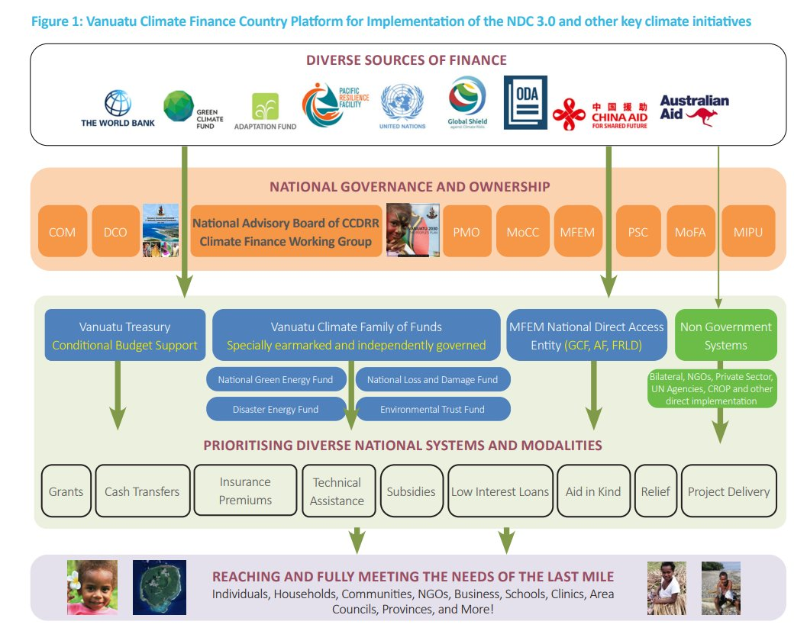
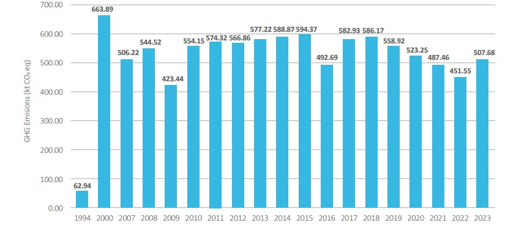
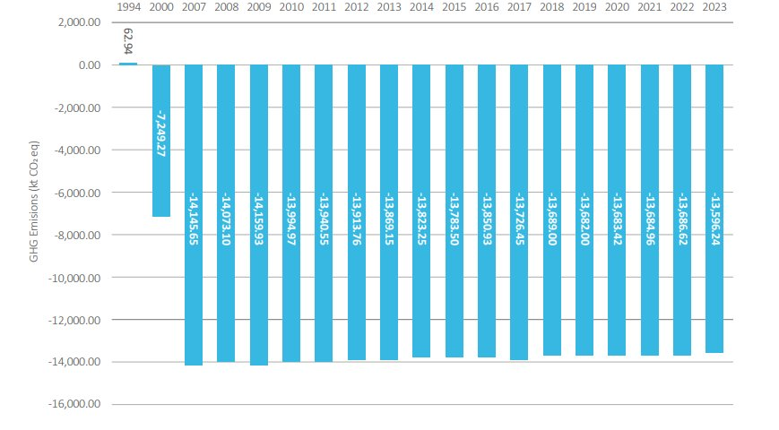
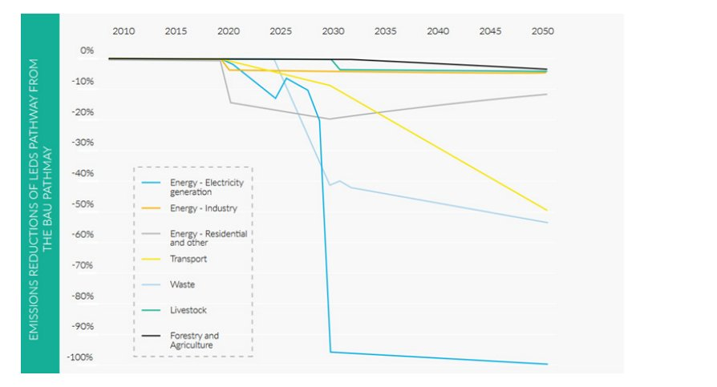
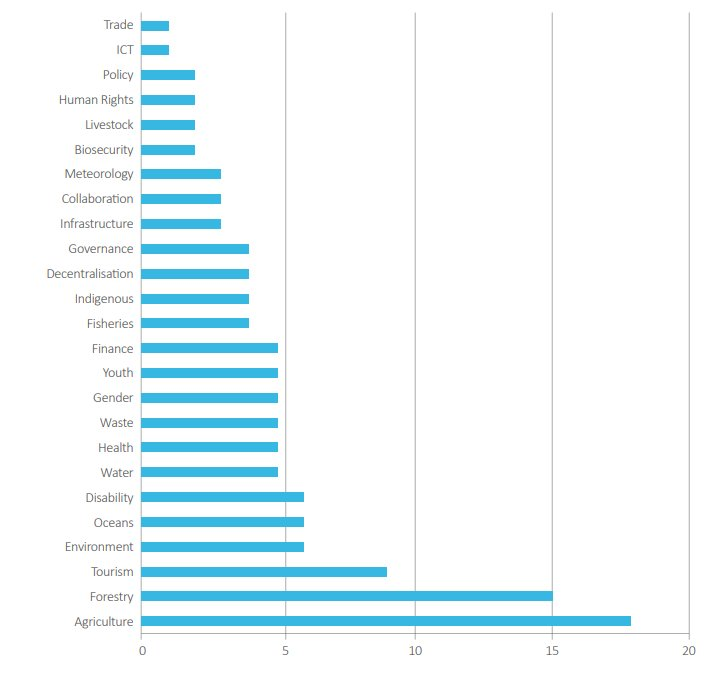
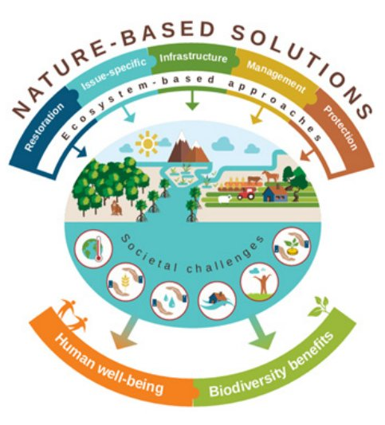

01 INTRODUCTION
NDC 3.0 at the Core of Vanuatu's Sustainable Development, Human-Rights Protections, Coordinated Climate Programming and Coherent Finance
Vanuatu submits this third iteration of its Nationally Determined Contribution (NDC), informed by the priorities voiced by our people, their community, elected representatives, the public service, the private sector and civil society, on how our nation can maintain its current net-negative greenhouse gas (GHG) emissions society (Article 4.1) whilst being resilient to the unavoidable impacts of climate change (Article 7.1), averting, minimising, and addressing loss and damage (Article 8) in the context of the long-term temperature goal (Article 2), while articulating our financial needs (Article 9) that shall be provided by developed country Parties in continuation of their existing obligations under the UNFCCC.
Through the preparation, communication and maintenance of this successive nationally determined contribution, and the pursuit of domestic measures to achieve the objectives of these contributions, Vanuatu continues to meet its obligations under Article 4, paragraph 2 of the Paris Agreement.
This NDC 3.0 aligns with and strives towards implementing the Advisory Opinion from the International Court of Justice on 23 July 2025 which for the first time, authoritatively sets out States' legal duties in relation to climate change. The Court confirmed that climate change is 'a quintessentially universal risk' and that every State is bound by treaty and by customary international law to act with stringent due diligence to prevent significant harm to the climate system and to cooperate internationally to that end. By explicitly recognising the acute vulnerability of small island developing States, the core concerns that drove Vanuatu's campaign for the opinion have been validated by the Court.
Acknowledging the interconnected nature of the crises facing the world, including fossil fuel-driven climate change, inequality, biodiversity loss, pollution, militarization and financial instability, Vanuatu's NDC 3.0 presents localised, long-term and programmatic solutions that enable synergistic actions and ensure that support reaches our island communities who are leading meaningful change on the ground. Vanuatu's NDC 3.0 represents our whole of society effort to implement the global Sustainable Development Goals (SDGs) and Vanuatu's own National Sustainable Development Plan, known as the People's Plan 2030, which charts the country's vision and overarching policy framework to achieving a stable, sustainable and prosperous nation.
All commitments outlined in Vanuatu's NDC 3.0 are based on existing sector and subnational policies, plans and strategies, ensuring that the NDC 3.0 is truly owned by the nation as a whole, and fully guided by human rights obligations and principles. Monitoring and evaluation of the NDC targets is already being undertaken by the sectoral stewards of the foundational policies, ensuring that the NDC implementation process is fully embedded within existing national development and governance systems and mechanisms. The 65 policies which form the basis of this NDC 3.0 include Vanuatu's:
- Adaptive Social Protection Policy
- Agriculture Sector Policy
- Biosecurity Policy
- Child Protection Policy
- Climate Change and Disaster Risk Reduction Policy Second Edition
- Climate Diplomacy Strategy
- Decentralisation Policy
- Disability and Inclusive Development Policy
- Disaster Risk Financing Policy
- Education and Training Sector Strategy
- Education Training Sector Strategic Plan (VETSS)
- Environmental Health Policy and Public Health Act of 2021
- Food Safety Security & Nutrition Policy
- Foreign Policy
- Forest and Landscape Restoration Strategy
- Framework for Climate Services
- Fruits and Vegetable Strategy
- Health Cluster Strategic Plan
- Health Sector Strategic Plan
- Health Sector Strategy
- ICT Policy
- Immunization Policy and Strategic Guide
- Infrastructure Strategy and Implementation Plan
- Integrated Water Resource Management Plan
- Land Use Planning Policy
- Loss & Damage Policy
- Low Emissions Development Strategy
- Melanesian Wellbeing Indicators
- Mental Health Policy and Strategic Plan
- Ministry of Agriculture, Livestock, Forestry, and Biosecurity (MALFB) Corporate Plan
- Ministry of Health Corporate Plan
- Ministry of Health Policy
- National Biodiversity Strategy and Action Plan
- National Coconut Oil for Fuel Strategy
- National Energy Efficiency Strategy and Action Plan
- National Environment Policy and Implementation Plan
- National Fisheries Sector Policy
- National Forest Policy
- National Gender Equality Policy
- National Invasive Species Strategy and Action Plan
- National Labour Mobility Policy
- National Planned Relocation Framework
- National Policy on Climate Change and Disaster-Induced Displacement
- National Roadmap for Coastal Fisheries
- National Security Strategy
- National Strategy for the Development of Statistics
- National Waste Management & Pollution Control Strategy
- National Water Policy
- National Water Strategy
- Nationally Determined Contribution 2.0
- NCD Policy and Strategic Plan
- NDC Forest Investment Strategy
- NDC On-Grid Electricity Investment Strategy
- NSDP M&E Framework
- Ocean Policy
- Overarching Productive Sector Policy
- Public-Private Partnerships Policy
- School Based Disaster Risk Reduction & Education in Emergency Policy
- Sustainable Tourism Policy
- Technology Needs Assessment
- Trade Policy Framework Update
- Updated Vanuatu National Energy Road Map
- Vanuatu Carbon Cooperation Framework
- Vanuatu National Sustainable Development Plan
- Vanuatu REDD+ R Package
- VMGD Strategic Plan
As the main instrument for national implementation of the Paris Agreement, Vanuatu's NDC 3.0 has been guided by human rights obligations, principles, and standards in its preparation and content, and will continue in this approach throughout its implementation. Vanuatu's commitment to a human rights-based NDC is premised on the 11th preambular paragraph of the Paris Agreement, which acknowledges that 'climate change is a common concern of humankind, Parties should, when taking action to address climate change, respect, promote and consider their respective obligations on human rights, the right to health, the rights of indigenous peoples, local communities, migrants, children, persons with disabilities and people in vulnerable situations and the right to development, as well as gender equality, empowerment of women and intergenerational equity.'
Accordingly, Vanuatu's NDC planning and development process was built on inclusive and comprehensive public participation at all levels, and was fully informed by Vanuatu's human rights obligations. The NDC sets ambition levels according to the best available peer reviewed science and international law to keep global warming below 1.5°C. Importantly, the Vanuatu NDC 3.0 prioritises adaptation support for all vulnerable sectors, communities, households and individuals, and through the stand alone loss and damage commitments, commits to seeking redress for all affected by the climate crisis. The various commitments, including means of implementation outlined, aim to respect, protect and promote human rights. Similarly, Vanuatu's human rights obligations are reflected in the decentralised and sector owned nature of NDC target setting and monitoring and evaluation, enshrining the principle of locally led action and subsidiarity.
Importantly, the NDC 3.0 forms a core part of the National Climate Finance Country Platform, which aims to mobilise and coordinate climate finance at the scale and speed required to meet Vanuatu's self-determined climate goals. The NDC-based Country Platform is a strategic, coordinated, and countryowned mechanism for delivering climate action, support and financing to sectors and communities on the front lines. Given the investment framework nature of this NDC 3.0, the Country Platform enables the streamlining of diverse finance sources such as public and private, international and domestic-toward the implementation of Vanuatu's highest and nationally determined priorities, balanced between the social, environmental and economic pillars of sustainable development.

Figure 1: Vanuatu Climate Finance Country Platform for Implementation of the NDC 3.0 and other key climate initiatives
The National Climate Finance Country Platform has the following key elements:
- Diverse sources of finance are coordinated and leveraged to provide maximum impact and full implementation of the programmatic and long term priorities identified in the NDC 3.0, including:
- Bilateral finance and arrangements, especially budget support modalities
- Resources from the Pacific Resilience Facility (PRF)
- The special funds and operating entities of the Financial Mechanism of the UNFCCC, including the Global Environment Facility (GEF), the Green Climate Fund (GCF), the Adaptation Fund (AF), the Special Climate Change Fund (SCCF), and the Fund for responding to Loss & Damage (FRLD)
- Concessional finance from Multilateral Development Banks (MDBs)
- Financing and technical assistance from United Nations (UN) and Council of Regional Organisations of the Pacific (CROP) agencies
- Philanthropic foundations and not for profit groups
- Private, commercial and corporate finance and ESG initiatives
- Impact and investment funds
- Vanuatu Sustainable Bonds, including Blue and Green Bonds as endorsed by the Council of Ministers in 2024
- Carbon markets and compliance schemes as part of Article 6 of the Paris Agreement and national carbon revenues as outlined in the Vanuatu Carbon Cooperation Framework as endorsed by the NAB
- Insurance and risk transfer mechanisms, including Vanuatu's coverage by the Pacific Catastrophe Regional Insurance Company (PCRIC) and Pacific Insurance
- Litigation and court ordered climate settlement payments
- Strong national ownership of investment programming, including through the Council of Ministers (COM) and Development Committee of Officials (DCO), and the central
agencies which include the Prime Minister's Office (PMO), Ministry of Finance and Economic Management (MFEM), Ministry of Foreign Affairs (MoFA), Ministry of Climate Change (MoCC), Public Service Commission (PSC) and the Ministry of Infrastructure and Public Utilities (MIPU). The National Advisory Board on Climate Change and Disaster Risk Reduction (NAB) is the primary institutional focal point for the Country Platform, as it convenes all ministries, private sector and civil society to provide the highest level of climate policy guidance and programming advice.
- Fit-for-purpose national climate financing systems, developed to receive, manage, disburse, monitor and report on climate financing flows, including:
- The National Treasury, assessed by the ADB as ranking high relative to other Pacific island economies, surpassing the regional Financial Development Index average, and compliant with internationally accepted standards and measures of good practice
- Four legislated funds as part of the Climate Family of Funds administered by the Ministry of Climate Change
- National Green Energy Fund
- Loss and Damage Fund
- Environmental Trust Fund
- Disaster Emergency Fund
- The soon to be GCF accredited Ministry of Finance as an accredited entity for multilateral climate finance
- A range of locally tailored finance disbursement modalities, which aim to provide direct and efficient access to climate finance to a range of grassroots and subnational stakeholders, fully guided by human rights obligations, principles, and standards and including innovative modalities, including but not limited to:
- cash transfer systems
- small grants programmes
- payment of insurance premiums
- subsidised materials and equipment
- low interest concessional finance
- technical assistance
- aid in kind
NDC 3.0 alignment with Global Stocktake outcomes
In December 2023, the 5th Conference of the Parties serving as the meeting of the Parties to the Paris Agreement (CMA) and the 28th Conference of the Parties to the UN Framework Convention on Climate Change (COP28), concluded the first-ever Global Stocktake, finding that current climate actions are inadequate to keep global warming below 1.5 degrees Celsius and avoid the worst climate impacts, and that countries must step up their efforts to correct course and accelerate global climate action. In response to the Global Stocktake, Vanuatu has set economy-wide commitments.
Key elements of the global global Stocktake synthesis report that are of critical importance to Vanuatu include:
- The recognition of a persistent 'emissions gap,' due to the misalignment of current climate commitments and the pathways needed to limit global warming to 1.5 degrees Celsius.
- The historical context of emissions, particularly the significant contribution of developed countries to historical and current GHG emissions, and the need for ongoing acknowledgment and redress for this disparity as vital for building trust and ensuring equitable contributions towards global climate goals.
- There are clear pathways forward, based on system-wide transformations that can dramatically reduce emissions while also ensuring a climate-resilient future.
- The need to phase out fossil fuels, scale renewable energy, significantly shift towards low carbon transport and industry, and reduce non-CO 2 emissions including methane.
- The importance of preserving nature and ecosystem services, ending deforestation and embracing sustainable agriculture as pivotal to enhancing resilience and delivering emissions cuts.
- The placement of people, including indigenous people and local communities, at the heart of the global transitions, underscores the imperative for equity in all transformative efforts.
- The urgency of increasing adaptation support and addressing loss and damage, particularly for vulnerable communities, noting that plans and commitments for adaptation action and support have been poorly implemented, are unevenly distributed and have progressed only incrementally.
- The need to reorient trillions of dollars in global finance towards the global just transition, tailoring and mobilizing significant resources in support of equitable and locally tailored solutions that are fully integrated into sustainable development and poverty eradication.
- The critical role of non-state actors, including civil society , the private sector, and local communities, in strengthening climate action efforts, and the need for accurate accounting and accountability to track their contributions effectively.
- The foundation that science provides towards actionable climate solutions.
- A sobering acknowledgment that the window of opportunity to secure a liveable and sustainable future for all is rapidly closing.
Notably, the negotiated outcome decision from the Global Stocktake at COP28/CMA5 called for a "transition away from fossil fuels' in a 'just, orderly and equitable manner, accelerating action in this critical decade, so as to achieve net zero by 2050 in keeping with the science'. Vanuatu also appreciates and acknowledges other critical policy signals in the decision, including the commitment to tripling renewable energy capacity and doubling energy efficiency globally by 2030, as well as reflecting these efforts in new NDCs.
Vanuatu's NDC 3.0 adheres to the following elements of the Stocktake decision:
- Tripling renewable energy capacity globally and doubling the global average annual rate of energy efficiency improvements by 2030, including accelerating the reduction of emissions from road transport through a range of pathways.
- Accelerating efforts globally towards net zero emission energy systems, utilizing zero- and low-carbon fuels, well before or by around mid-century.
- Transitioning away from fossil fuels in energy systems, in a just, orderly and equitable manner, accelerating action in this critical decade, so as to achieve net zero by 2050 in keeping with the science.
- Accelerating zero- and low-emission technologies, including, inter alia, renewables, nuclear, abatement and removal technologies such as carbon capture and utilization and storage, particularly in hard-to-abate sectors, and lowcarbon hydrogen production.
- Accelerating the substantial reduction of non-carbon-dioxide emissions, in particular methane emissions by 2030.
- Accelerating the reduction of emissions from road transport on a range of pathways, including through development of infrastructure and rapid deployment of zero- and lowemission vehicles.
- Phasing out inefficient fossil fuel subsidies that do not address energy poverty or just transitions, as soon as possible.
- Economy-wide emission reduction targets, covering all greenhouse gases, sectors and categories and aligned with limiting global warming to 1.5 °C, as informed by the latest science.
- Aligning nationally determined contributions with long-term low greenhouse gas emission development strategies.
- Strengthening resilience and reducing vulnerability to climate change with a view to contributing to sustainable development and ensuring an adequate adaptation response.
- Conserving, protecting and restoring nature and ecosystems towards achieving the Paris Agreement temperature goal, including through enhanced efforts towards halting and reversing deforestation and forest degradation by 2030, and other terrestrial and marine ecosystems acting as sinks and reservoirs of greenhouse gases.
- Transitioning to sustainable lifestyles and sustainable patterns of consumption and production in efforts to address climate change, including through circular economy approaches
- Urgent, incremental, transformational and country-driven adaptation action based on different national circumstances in order to:
- Significantly reduce climate-induced water scarcity and enhancing climate resilience to water-related hazards towards a climate-resilient water supply, climate-resilient sanitation and access to safe and affordable potable water for all;
- Attain climate-resilient food and agricultural production and supply and distribution of food, as well as increasing sustainable and regenerative production and equitable access to adequate food and nutrition for all;
- Attain resilience against climate change related health impacts, promoting climate-resilient health services and significantly reducing climate-related morbidity and mortality, particularly in the most vulnerable communities;
- Reduce climate impacts on ecosystems and biodiversity and accelerating the use of ecosystembased adaptation and nature-based solutions, including through their management, enhancement, restoration and conservation and the protection of terrestrial, inland water , mountain, marine and coastal ecosystems;
- Increase the resilience of infrastructure and human settlements to climate change impacts to ensure basic and continuous essential services for all, and minimizing climate-related impacts on infrastructure and human settlements;
- Substantially reduce the adverse effects of climate change on poverty eradication and livelihoods, in particular by promoting the use of adaptive social protection measures for all;
- Protect cultural heritage from the impacts of climaterelated risks by developing adaptive strategies for preserving cultural practices and heritage sites and by designing climate-resilient infrastructure, guided by traditional knowledge, Indigenous Peoples' knowledge and local knowledge systems;
- Recognising iterative adaptation cycle for building adaptive capacity, strengthening resilience and reducing vulnerability, recognizing the importance of means of implementation and support for developing country Parties at each stage of the cycle.
- Acknowledging that scaling up new and additional grantbased, highly concessional finance and non-debt instruments remains critical to supporting developing countries, particularly as they transition in a just and equitable manner , and recognizes that there is a positive connection between having sufficient fiscal space, and climate action and advancing on a pathway towards low emissions and climateresilient development.
- Recalling that developed country Parties shall provide financial resources to assist developing country Parties with respect to both mitigation and adaptation in continuation of their existing obligations under the Convention and that other Parties are encouraged to provide or continue to provide such support voluntarily.
- Recalling that developed country Parties should take the lead in mobilizing climate finance from a wide variety of sources, instruments and channels, noting the significant role of public funds, through a variety of actions, including supporting country-driven strategies, and taking into account the needs and priorities of developing country Parties, and that such mobilization of climate finance should represent a progression beyond previous efforts.
- Acknowledging the significant gaps, including finance, that remain in responding to the increased scale and frequency of loss and damage, and the associated economic and noneconomic losses.
- Recognizing that international cooperation and the duty to cooperate in good faith is an international legal obligation of customary status, which all States must comply with in addressing climate change, in the context of sustainable development and poverty eradication, particularly for those who have significant capacity constraints, and enhancing climate action across all actors of society, sectors and regions.
In keeping with these critical elements of the negotiated outcome, Vanuatu has stepped up through this NDC 3.0 to fully meet the purpose of the Global Stocktake as articulated in the Paris Agreement, to inform countries in updating and enhancing their climate actions and NDCs, and in strengthening international cooperation for climate action. Vanuatu is wholly committed to demonstrating how the ambition cycle of the Paris Agreement is intended to function. Beyond the NDC, Vanuatu is also fully committed to, and has indeed already taken considerable action to integrate the Global Stocktake's conclusions into national policies that aim to close gaps in adaptation, mitigation, and finance, in light of equity and the best available science.
Vanuatu's NDC 3.0 fully incorporates the Global Stocktake findings to ensure we are increasingly ambitious with our actions to keep the Paris Agreement's goals in reach, guide government and non-state actors' climate policy and investment decisions, and drive the transformational action across our critical systems including but not limited to energy, transport, food and nature.
Vanuatu is already a carbon-negative country. With forests covering 70% of its islands, and its maritime jurisdiction comprising 98% of the nation, the big ocean state of Vanuatu is already a carbon sink - absorbing more carbon dioxide than it produces - thus freely providing a critical environmental service to carbon emitting countries around the world. Moving beyond our current Net Zero status, this NDC recommits Vanuatu to rapidly phasing out fossil fuels, deeply decarbonising and transitioning completely to a circular economy.
Targets and commitments are conditional upon international finance, action, support, technology and capacity development. The approximate cost of achieving Vanuatu's NDC 3.0 by 2035 is USD 2,768,441,850.
NDC 3.0 Alignment with the Advisory Opinion of the International Court of Justice
Vanuatu led the international initiative to request the International Court of Justice to provide an Advisory Opinion on the Obligations of States in respect of Climate Change (ICJ Advisory Opinion), which responded to the decision taken by the General Assembly of the United Nations on questions set forth in its resolution 77/276 adopted on 29 March 2023.
Vanuatu endorses the unanimous Opinion of the Court made on 23 July 2025. In particular, Vanuatu welcomes the Court's characterisation of anthropogenic greenhouse-gas emissions as conduct capable of engaging both treaty and obligations, and the restatement of the prevention principle and duty to cooperate as rules of customary law that must be complied with and assess through the prism of the principle of common but differentiated responsibilities and respective capabilities (CBDRRC). The latter is described by the Court as an 'interpretive lens' for all sources, not merely for the climate treaties. For prevention, the Court set a 'stringent' due diligence standard that obliges States to adopt 'all appropriate measures', including rapid, deep and sustained domestic mitigation, supported by legislation, enforcement and continuous scientific review. The duty to cooperate is likewise framed as a continuing, good -faith obligation that requires collective elaboration and periodic strengthening of rules, standards and scientific programmes.
In relation to human rights obligations, Vanuatu welcomes the Court's integration of international human rights law, identifying the rights to life, health, an adequate standard of living, and the right to a clean, healthy and sustainable environment as directly threatened by climate change; and the affirmation that environmental protection is a pre-condition for their enjoyment. The Court further affirmed the International Tribunal on the Law of the Sea (ITLOS)'s recent finding that anthropogenic greenhouse gas emissions constitute 'pollution of the marine environment' under UNCLOS, thereby triggering Part XII obligations-also to be fulfilled with a stringent due-diligence standard.
Importantly, and in what Vanuatu considers a key contribution of the ICJ Advisory Opinion to climate justice, is the application
of the full range of legal consequences prescribed by the law of State responsibility for State's acts or omissions that have caused significant climate harm, including: (a) a duty of performance (to comply with primary obligations); (b) cessation and guarantees of non-repetition; and (c) an obligation to make full reparation, which may take the form of restitution, compensation or satisfaction. The Court confirmed and emphasised that each injured State may invoke responsibility against every wrongful emitter and that obligations toward a stable climate are erga omnes: all States have a legal interest in their observance.
Vanuatu commits to taking integrated measures to operationalise the findings of the Court in its Opinion, as detailed in the NDC section on Human Rights and Climate Justice.
These measures include alignment of due-diligence and EIA according to stringent tests; procedures to notify States of climate-related internationally wrongful acts to invoke state responsibility for breaches of erga omnes obligations and remedies; administrative and legislative measures to adopt nonrefoulement and protection pathways; preparation, publication and deposit of charts or lists of geographical coordinates of baselines and outer limits of maritime zones in accordance with UNCLOS to address sea-level rise and maritime zone security; establish a national loss-and-damage claims and evidence facility to enable effective reparation claims; and subsequent supplementary UNFCCC alignment communication on alignment and any updates as necessary to ensure consistency with the opinion.
Vanuatu urges all States to align their NDCs to comply with the obligations and standards as clarified by the Court. Vanuatu also urges all States to address and remedy any conduct relating to anthropogenic greenhouse gas emissions that may amount to internationally wrongful acts, whether that be through extraction, production or consumption of fossil fuels, regulation of private actors within their jurisdiction or through the provision of fossil fuel subsidies.
Vanuatu's Science-Based Commitments
The international climate regime, including the UNFCCC and the Paris Agreement, is built upon a clear understanding of the threats posed by, and the causes of, climate change. More than a century and a half of industrialisation, along with the clear-felling of forests and certain farming methods, has led to increased quantities of greenhouse gases (GHGs) in the atmosphere.
The Paris Agreement set out a global commitment to limiting warming to well below 2°C while pursuing efforts to limit global temperature rise to 1.5°C. Vanuatu bases its national determined commitments on the best available science, which confirms the existential nature of the current climate crisis and the urgency with which we, and all nations, must act.
The Republic of Vanuatu signed the Paris Agreement on 22 April 2016 and deposited its instrument of ratification on 21 September 2016. The Government of the Republic of Vanuatu is fully committed to effective and transparent implementation of the Agreement and submitted its declaration, which reads, in part:
'…the Government of the Republic of Vanuatu declares that, in light of the best scientific information and assessment on climate change and its impacts, it considers the emission reduction obligations in Article 3 of the Kyoto Protocol, the Doha Amendment and the aforesaid Paris Agreement to be inadequate to prevent global temperature increase of 1.5 degrees Celsius above preIndustrial levels and as a consequence, will have severe implications for our national interests...'
The Intergovernmental Panel on Climate Change estimates that to limit global warming to 1.5°C, global emissions need to be roughly halved by around 2030 (compared to 2018) and reach net zero around 2050. Net zero refers to the situation in which emissions reduce to almost zero, and any remaining emissions are removed from the atmosphere.
According to the IPCC's 2018 special report on the temperature goal, we are currently on track to exceed 1.5°C sometime between 2030 and 2052. This expected increase of the global mean temperature is associated with rising sea levels, rapidly changing ecosystems and more extreme and slow-onset events such as heat waves, storms and flooding. The impacts undermine global efforts for development and prosperity everywhere, and particularly in small island developing states like Vanuatu.
NDC 3.0 Policy Alignment
The Republic of Vanuatu's long term vision on climate change and aspirations are embedded within the fundamental duties defined under its constitution: 'to protect the Republic of Vanuatu and to safeguard the national wealth, resources and environment in the interests of the present generation and of future generations' and guided by its National Vision - 'A stable, sustainable and prosperous Vanuatu', under the National Sustainable Development Plan (NSDP) 2016-2030 also called Vanuatu 2030: The People's Plan.
The NDC 3.0 is Vanuatu's primary planning instrument for tackling climate change at the national level, building on the ambition articulated in the Climate Change and Disaster Risk
Reduction Policy 2016-2030 2nd edition (CCDRR Policy), to promote good governance and which establishes priorities and strategies for future climate actions; as well as the Meteorology, Geological Hazards and Climate Change Act No. 25 of 2016 (Climate Change Act), that provides for institutions (governance and administrative provisions), transparency and roles and responsibility for departments of meteorology, geological hazards and climate change and for related purposes. Vanuatu is also currently developing a National Adaptation, Loss & Damage Plan (NALDP) and has completed a Loss & Damage Policy Framework which capture critical climate priorities and actions.
A Just and Equitable Transition
Vanuatu explicitly recognizes the principle of a just and equitable transition as essential to the fair, equitable, and effective implementation of the NDC 3.0. As one of the first countries in the world to commit to a fossil fuel-free future, Vanuatu's position is that a climate-resilient, low-emissions transition can be achieved without sacrificing human rights or economic security. Just Transition principles are therefore embedded in all NDC 3.0 commitments, ensuring that people, especially those whose livelihoods may be affected by the phase-out of fossil fuels, are not left behind. Labor rights for those affected by the transition in Vanuatu contribute to social justice by promoting opportunities for all people to obtain decent and productive work in conditions of freedom, equity, security, and dignity. A just transition will ensure that this evolution is as fair and inclusive as possible and that it promotes the agency of the workers and organisations involved; respects, protects, and fulfills their rights.
This is achieved in practice by integrating Vanuatu's national wellbeing indicators-such as on community cohesion, environmental quality, and livelihood resilience-into decisions about the pace, scale, and financing of NDC 3.0 commitments. While some short-term disruptions to employment may occur, the Government affirms that the long-term economic, social, and environmental wellbeing of its people is better served by a fossil fuel-free, climate-safe future.
Vanuatu's NDC 3.0 reflects an explicit commitment to respect, protect, and fulfill core labor rights, including freedom of association, collective bargaining, and protection from discrimination. The NDC 3.0 implementation process will be underpinned by ongoing social dialogue with workers' unions, employers, civil society, and affected communities, particularly in sectors such as transport, energy, and tourism that may be impacted by the energy transition. The Government will prioritize decent work creation through targeted investments in clean energy, regenerative agriculture, ecosystem restoration, and climate-resilient infrastructure. Special emphasis will be placed on workforce reskilling and youth employment programs, particularly for women, persons with disabilities, people in rural and outer island communities, and others in vulnerable situations. These efforts will align with the national Employment Policy and draw on sectoral roadmaps already developed through participatory consultation processes.
In recognition of the risks that climate transitions can pose to human rights-especially through increased demand for mining of critical minerals-Vanuatu commits to ensuring that no NDC-aligned activity leads to human or environmental rights violations, whether inside or outside its borders, on land or on the deep sea bed. The Government will continue to assess and regulate supply chains, particularly in relation to imported renewable energy technologies, to avoid contributing to labor exploitation or environmental degradation abroad. At the national level, the Government will scale up implementation of the adaptive social protection policy, including through public works schemes, cash transfer programs, and community-based insurance mechanisms to support populations during periods of economic restructuring and climate volatility. Through this comprehensive approach, Vanuatu aims to become not only the world's first fossil fuel-free region, but also a global model of inclusive, rights-based, and people-centered climate action.
It is Vanuatu's unambiguous expectation, based on legal obligations of the UNFCCC, Paris Agreement and other international laws, that developed country Parties shall provide financial resources to assist Vanuatu with respect to the Just Transition efforts outlined in this NDC 3.0, and take the lead in mobilizing climate finance from a wide variety of sources, instruments and channels, with primacy given to public funds, towards Vanuatu's Just Transition pathways.
Participatory Planning, Implementation and Monitoring
Vanuatu's NDC 3.0 is founded on a deeply inclusive and participatory planning process, reflecting the lived realities, voices, and aspirations of our island people. Each sectoral policy that forms the foundation of the NDC has undergone extensive local, subnational, and national consultation processes prior to endorsement by the Council of Ministers. These policies were shaped by dialogues across provinces, area councils and communities, ensuring the integration of Indigenous knowledge, local priorities, and traditional governance systems. The Ministry of Climate Change, with the support of GGGI and the Pacific NDC Hub, also undertook one-on-one consultations with experts, government and non-government leaders at all levels and across sectors to capture nuanced perspectives and ensure that the design of the NDC was grounded in countrywide consensus.
A major consultation was held on 24 April 2025 in which Stakeholders from across Vanuatu's public and private sectors, civil society, and development partners convened to consider how climate ambition could be expanded from 2025-2035, and assessing progress on NDC 2,0 commitments. This consultation also focused heavily on financing needs and sources identifying where the means of implication could originate from and how these funds should be dispersed to the last mile implementers of the NDC. From April to June 2025, the targets have been publicly available for further feedback and input from island representatives, provincial officials, civil society, the private sector, academic institutions and development partners. More than 40 submissions were received through this process, with careful integration of the views and recommendations made.
Throughout the NDC 3.0 development process, special emphasis has been placed on the inclusion of rights holders and members of society often underrepresented in national planning. There are significant structural and cultural barriers preventing the full and equitable participation of women and girls, children, the elderly, people with disabilities and genderdiverse people across all aspects of sustainable development planning, including climate planning. Vanuatu adheres to the principles of the International Covenant on Civil and Political Rights and other human rights instruments that stipulate that all people have the right to free, active, and meaningful participation, and acknowledges that public participation, access to information, freedom of expression, and freedom of assembly are human rights. Their application in this NDC 3.0 development process has helped to promote public support for climate action, contributed to higher ambition, and will likely improve the effectiveness and sustainability of the actions and commitments contained herein.
The focus on NDC 3.0 participation has included dedicated outreach to Indigenous Peoples and local communities, as well as traditional knowledge holders; groups in vulnerable situations such as women in all their diversity, youth, children, persons with disabilities, and climate displaced individuals; remote villages that are economically isolated; national and grassroots civil society movements; human rights and gender institutions; and private sector networks and associations. The National Advisory Board on Climate Change and Disaster Risk Reduction (NAB) played a central role in the validation of NDC priorities, supported by its technical working groups comprising government, civil society, private sector, and development partners. Multiple in-person consultations, validation meetings, and iterative review processes ensured transparency, mutual accountability, and alignment with community values. This approach establishes Vanuatu's NDC 3.0 as a global model for inclusive, rights-based climate action, and a foundation for the whole-of-society Country Platform approach now being implemented to ensure complementary, coherent, coordinated and programmatic implementation.
NDC Enhancement
Pursuant to Articles 4.2 and 4.11 of the PA and Decision 1/CP .21 paragraph 23, the Republic of Vanuatu, taking into account its national circumstances and capabilities, hereby communicates its revised and further enhanced Nationally Determined Contribution 3.0 under the agreement for 20252035. The Government of the Republic of Vanuatu notes with great concern that the objective of the agreement can only be achieved by intensifying the level of action significantly, complemented by international support, to achieve conditional contributions, as reflected in the Nationally Determined Contribution (NDC).
In that spirit, the Republic of Vanuatu presents NDC 3.0 2025-2035 and calls on all Parties to increase their ambitions in line with the best available and most recent science and obligations under the Agreement.
MITIGATION CONTRIBUTION
02 MITIGATION CONTRIBUTION
Mitigation Contribution
Type. Activity-based mitigation targets, sectoral and policy targets in key sectors, including emissions reduction in some sub-sectors. The GHG emission reduction targets in this section are all conditional upon international support (financial and technical support) made available.
Coverage. Energy; Transport, Agriculture, Forestry and Other Land Use (AFOLU), Waste, Wastewater and Trade.
Timeframe. From 1st January 2025-31st December 2035. Single year targets - 2035, including updates on 2030 targets.
Vanuatu submitted its initial NDC to the UNFCCC on 21st September 2016, and its revised and enhanced NDC 2.0 on 9th August 2022.
This enhanced NDC 3.0 contribution is aligned with the ambition of the Updated Vanuatu Energy Roadmap 2016-2030 including 11 policy targets for electricity generation that fall under the framework's key priority strategic areas of energy access, energy affordability, energy security as well as climate resilience. The NDC is also grounded in the National Sustainable Development Plan, the Climate Change and Disaster Risk Reduction Policy, the NDC Implementation Road Map the NSDP monitoring and Evaluation Framework the Vanuatu Coconut Oil for Fuel Strategy, Vanuatu National Coconut Strategy 2016 - 2025 Vanuatu National Energy Efficiency Strategy and Action Plan (NEESAP) 2022-2030 Vanuatu's Low Emissions Development Strategy (LEDS) Vanuatu's 1st Biennial Transparency Report to the Paris Agreement the Vanuatu NDC On-Grid Electricity Investment Strategy and Vanuatu's new Carbon Cooperation Framework.
The mitigation commitments of Vanuatu's NDC 3.0 enjoy legal backing through the Electricity Supply Act (ESA), Utilities Regulatory Authority Act (URA Act) as well as Electricity Supply Concession contracts, thereby limiting risks of legal barriers to implementation, and enhancing the opportunities for private sector investment and donor support for full financing.
Moving beyond Business as Usual (BAU) Emissions 16
Vanuatu's total greenhouse gas emissions (excluding removals) increased from 62.94 kt CO₂ eq in 1994 to 507.68 kt CO₂ eq in 2023. This represents an increase of 707% compared to 1994. Emissions peaked in the year 2000 amounting to 663.89 kt CO₂ eq, which is the highest level of GHG emissions ever reported in Vanuatu. Post-2000, emissions declined to 506.22 kt CO₂eq in 2007 but remained consistently high compared to 1994. There was a subsequent increase, reaching 554.15 kt CO₂eq in 2010, followed by a sharp decrease in 2009 reaching 423.44 kt CO₂ eq. Between 2011 and 2015, emissions showed minor fluctuations but remained within the 574.32 - 594.37 kt CO₂ eq range. The emissions have decreased during the years 2018 to 2022 from 586.17kt CO₂ eq in 2018 to 451.55 kt CO₂ eq in 2022 respectively.
In 2023, total greenhouse gas emissions amounted to 507.68 kt CO₂eq, according to the national GHG inventory of Vanuatu submitted to the UNFCCC as part of the 2024 Biennial Transparency Report, and is estimated using the tier 1 methodology and using Default emission factors provided by the 2006 IPCC Guidelines for the direct GHGs emissions.
The key sector with increasing emissions over the period 1994-2023 includes the Energy sector (increased by 145.50%), followed by the waste sector which shows an increase by 68% during the period 2000-2023, while Agriculture sector shows a decreasing trend (decreased by 44% during 2000-2023).
However, Vanuatu is net carbon negative, since the Land Use, Land Use Change and Forestry (LULUCF) sector is a net sink of CO 2 in Vanuatu. In 2023, the net GHG emissions amounted to -13,596.24 kt CO₂eq in 2023.

Figure 2: Total GHG emissions (excluding removals) per year, kt CO₂eq

16 Vanuatu LEDS https://gggi.org/wp-content/uploads/2022/12/22216_Vanuatu-Low-Emission_v06_RC_LQ_compressed.pdf
This NDC commits Vanuatu to a substantially lower emissions pathway, well below Business as Usual (BAU). In the BAU pathway, fuel imports are expected to grow from 2.4 Petajoule (PJ) in 2020 to 4.9 PJ in 2050. The majority of fuel demand is diesel. Of total diesel demand of 3.7 PJ, the transport sector uses 1.7 PJ, electricity uses 1.3 PJ and industry uses 0.7 PJ.
In the BAU pathway in the agriculture, forestry, and land use sectors, forest area remains constant but is degraded due to increasing fuel wood losses. The currently reported forest area of 440,000 hectares (36.3% of land area) is maintained but forest fuel wood losses increase with population growth. Fuel wood consumption climbs from 182,000 m 3 in 2020 to 269,000 m 3 in 2050. Fuel wood consumption is estimated at 2.23 m 3 per household per year.
Other drivers of forest degradation and deforestation in Vanuatu include human-induced activities such as agricultural expansion (e.g. small-scale subsistence farming, semi-commercial farming), forestry (e.g. logging), infrastructure development (e.g. tourism, residential settlements), as well as natural occurrences (e.g. tropical cyclones, invasive species).
In the BAU pathway, livestock production continues with the same herd and flock size and practices as the latest estimates available.
Vanuatu's GHG emissions in the BAU pathway for the agriculture, forestry, and land use sectors is dominated by livestock-sector emissions. Though the livestock sector is modelled as consistent in the size of herd and flock, and practices, the substantial weight of emissions from this sector continue to outweigh emissions from electricity generation, industry, residential, transport, and waste sectors. By 2050, the emissions from these sectors (419,000 tonnes CO 2 e) will approach the current emissions from the livestock sector (428,000 tonnes CO 2 e). Overall emissions are 39% higher in 2050 than at the most recent GHG inventory (610,000 tonnes CO 2 e in 2015.
Under the BAU pathway, Vanuatu's forests absorb a declining amount of forest carbon in the years 2030 to 2050. The decline in forest carbon removals is due to increased demand for fuel wood, principally for cooking. The volume of fuel wood consumption increases to almost 270,000 m 3 of wood per year in 2050. Net carbon removals are anticipated to decrease from approximately 6,340,000 tonnes in 2020 to 5,880,000 tonnes in 2050.
Specific Greenhouse Gas Emissions
Carbon dioxide (CO 2 )
The energy sector and its sub-sectors are the main source of CO 2 emissions, accounting for approximately 100% of CO 2 emissions (excluding the LULUCF sector as it is a net sink). The CO 2 emissions from Vanuatu have shown an increasing trend from 1994-2023, the CO 2 emissions in 1994 was 55.15 kt and increased to 152.79 kt in 2023, indicating an increase by 177%. The combustion of fossil fuels remains the main contributor of CO 2 emissions in Vanuatu.
Methane (CH 4 )
About 93% of Methane emission in Vanuatu comes from the agriculture sector i.e. from Livestock- Cattle, Swine, Horses, Goat and Chicken; enteric fermentation and manure management. The waste sector (Solid waste -MSW , Wastewater) is the second largest source of CH 4 emissions, accounting about 6.9% of emissions. A minor portion of methane emissions come from the energy sector; mainly as the emissions from combustion of fossil fuel (0.01%). In 2023, Methane emissions were 10.83 kt compared to 16.01 kt in 2000, indicating a decrease by 32.36% over the period 2000-2023.
Nitrous oxide (N 2 O)
The Nitrous oxide (N 2 O) emissions in Vanuatu were 0.19 kt in 2023 and 0.03 kt in 1994, which indicates an increase of about 17.34% from 1994-2023. In 2023, the main source of N 2 O emissions in Vanuatu was livestock (manure management) (89%), Wastewater treatment and handling (8%) and energy sector (3%) mainly transport sector tail gas emissions (mobile combustion) and minor emission from stationary combustion.
Other GHGs (HFCs, PFCs, SF 6 and NF 3 ) and indirect emissions (NOx, CO, NMVOC and SO 2 )
The emissions of other GHGs i.e. hydrofluorocarbons (HFCs), perfluorocarbons (PFCs) and Sulphur hexafluoride (SF 6 ) are insignificant as sources of these gases are not imported or sold in Vanuatu; hence direct emission of these gases does not occur; however small amount of these gases present in equipment like ACs, refrigerators, switchboards and circuit-breakers, etc. There are only trace anthropogenic emissions of NOx, CO, NMVOC and SO 2 .
NDC 3.0 Overall emissions reduction goal by 2035
The NDC 3.0 will, if fully financed and implemented, reduce emissions from all sectors by 1,608.57 kt CO₂ eq by 2035, thus providing a clear and unambiguous overall emission reduction goal aligned with equity (acknowledging the conditional nature of the NDC which requires external financing), as well as the imperative to limit global warming to 1.5°C.
This NDC 3.0 maintains Vanuatu's position to become a Fossil Fuel Free Pacific the first region in the world to achieve the equitable phaseout of fossil fuel production and use. Given Vanuatu's net negative CO 2 emissions profile currently, this NDC 3.0 requires no reliance on Carbon Dioxide Removal (CDR) or Carbon Capture and Storage (CCS) technologies, while offering meaningful carbon cooperation opportunities to other countries which are not able to meet their emission reduction targets in the short term, and providing Vanuatu with important resources to further reduce domestic emissions, expand adaptation and address losses and damages.
Vanuatu's Carbon Cooperation Framework was launched in 2025, and aims to leverage international carbon cooperation opportunities to attract international finance for the achievement of mitigation outcomes, and use these resources to finance climate action, sustainable development and the just transition towards a fossil fuel free future. The Framework is intended to support NDC implementation by consolidating and providing policy guidance on how Vanuatu intends to pursue carbon market and carbon cooperation initiatives, and clarifying and synthesizing institutional arrangements, general guidelines and procedures in response to market participants' and investors' interest in Vanuatu carbon-related opportunities
Vanuatu's Carbon Cooperation Framework incorporates more than a decade of work done by the Vanuatu REDD+ program of the Ministry of Agriculture, the Department of Energy's emissions reduction programs, and the work of local NGOs and the private sector, building on their systems, approaches, safeguards and tools. The Framework ensures that all types of Carbon cooperation and carbon market activities will be regulated and bring the greatest benefit to ni-Vanuatu communities and traditional carbon rights holders, whether on land, in forests, in the ocean, through national trading systems or on the voluntary carbon market. Importantly, the Framework stipulates that all carbon activities are conducted in a way that aligns with Vanuatu's cultural and environmental management contexts. As carbon cooperation activities involve risks, the Framework stipulates that these must be considered and evaluated against potential benefits by strong governance
mechanisms, and sets the Vanuatu rules of the game for a range of Paris Agreement and voluntary carbon cooperation approaches, including: Article 6.2 Bilateral Carbon Cooperation, Article 6.4 Central Carbon Marketplace, Article 6.8 Non Market Approaches, Forest Carbon, REDD+ and Blue Carbon, Domestic Carbon Pricing / Emissions Trading Systems (ETS) and Voluntary Carbon Markets. Vanuatu's Carbon Cooperation Framework lays out the governance mechanisms that are aligned to the existing governance mechanisms of the National Advisory Board on Climate Change & Disaster Risk Reduction, and ensures inclusive decision-making with the voices of civil society and the private sector .
The Department of Environment completed a Blue Carbon Ecosystems Policy in 2025 which aims to provide guidance towards the development of high integrity blue carbon opportunities for indigenous island communities that use and rely on mangroves and sea grasses. The Policy outlines mandates for various government agencies, provincial authorities, private sector and civil society to better manage the critical blue carbon ecosystems that store and sequester carbon as well as provide livelihood and cultural services to Vanuatu's people.
Cumulatively, this NDC 3.0 will see emissions from electricity generation reduced by 715 kt CO₂ eq overall. In the low emissions pathway outlined by this NDC 3.0, Vanuatu's energy supply composition is redirected towards lower emissions, cleaner and local fuel sources. The NDC pathway sees substantial reductions in the supply of fuel wood (-2.5PJ), diesel (-2.3 PJ) and gasoline (-0.3 PJ) compared to BAU. These energy sources are substituted by solar, wind, hydro, coconut oil, biogas, and biomass (collectively 2.3 PJ).
In addition to changing fuel supply composition, improvements in end use efficiency reduce overall energy demand. End use efficiency gains are made through adoption of technology with greater efficiency for the same fuel sources, such as replacing open fires with efficient wood stoves, and as well as technology with greater efficiency from alternative fuel sources, such as replacing diesel vehicles with electric vehicles. The overall impact of improvements in end use efficiency in residential, industrial, services, and transport sectors are a reduction in the required annual energy supply by 2.7 PJ, from 8.0 PJ to 5.3 PJ by 2050. The NDC 3.0 will, if fully implemented, reduce emissions from energy efficiency by 60.1 kt CO₂eq overall.
Vanuatu's NDC 3.0 outlines additional emissions reductions actions in the livestock, waste, and forestry sectors to assist and reduce overall emissions from the BAU pathway and the overall balance of Vanuatu's emissions. Compared with a 2020 baseline of emissions, this NDC 3.0 pathway decreases net emissions by

Figure 4: Greenhouse Gas emissions reductions anticipated from the full implementation of each Mitigation Contribution target
25,000 tonnes CO 2 e by 2050 while the BAU pathway increases net emissions by 460,000 tonnes CO 2 e by 2050. In both the BAU and NDC 3.0 pathways, Vanuatu remains net negative emissions due to the forest sector carbon removals. The NDC 3.0 will, if fully implemented, reduce emissions from Agriculture, Forestry, and Other Land Use (AFOLU) by 587.07 kt CO₂ eq overall. It is important to note that within the AFOLU category, Naturebased Solutions (NbS) comprise the protection, restoration and sustainable use of forests, and pasturelands, as well as other ecosystems. Vanuatu NbS included in this NDC 3.0 can deliver a large percentage of the cost-effective CO₂eq mitigation required through 2035, as well as providing co-benefits and adaptation outcomes.
In keeping with the global stocktake outcome to triple renewable energy and double energy efficiency, Vanuatu's NDC 3.0 mitigation contribution would reduce business as usual (BAU) emissions in the electricity sub-sector by 100% and in the energy sector overall by 30%. These targets are conditional, depending on funding commensurate with putting the transition in place being made available from external sources. In addition, the transition to renewable energy-based electricity could be accelerated through the substitution of fossil fuels for locally produced biofuels. Opportunities for reducing the high emissions levels in agriculture and livestock sectors will be simultaneously pursued through cooperative programmes with nations having similarly high emissions in these sectors.
The forestry sector mitigation was to be treated as part of the existing REDD+ programme. The Government has prioritised the waste management sector as a key source of emissions.
As can be seen by the whole-of-society approach to all greenhouse gas emissions, Vanuatu seeks to address all sources of emissions, both public and private, subject to Vanuatu's jurisdiction and control. As international human rights law is clear that States have obligations to take affirmative action to prevent foreseeable human rights harms caused by climate change, Vanuatu aims to undertake effective measures to assess and limit anthropogenic emissions of greenhouse gases and to effectively regulate the conduct of all actors under its jurisdiction, including with respect to emissions that occur extraterritorially. For Vanuatu, this includes NDC 3.0 commitments to mitigate emissions occurring as a result of the consumption of goods - those ultimately resulting from the export of fossil fuels or those associated with the conduct of businesses under its jurisdiction, even as these emissions occur abroad (see for example the transport, green building and waste emissions reductions commitments contained in the NDC 3.0).
With the additional measures articulated in this enhanced NDC 3.0 scenario, Vanuatu anticipates 2035 emissions of 343.25 kt CO₂ eq, a 31.37% reduction from business as usual. Overall, this NDC 3.0 will, if fully implemented, reduce emissions from all sectors from 2025-2035 by 1,608.57 kt CO₂eq by 2035.
|
Table 1: Emissions reductions in kt CO₂ eq by 2035 by mitigation sector commitment |
||
|
Sector |
NDC 3.0 Commitment |
Emissions Reductions in kt CO₂ eq by 2035 |
|
Electricity Generation |
M1 |
615.7 |
|
M2 |
73.2 |
|
|
M4 |
17.1 |
|
|
M6 |
9.3 |
|
|
Energy Efficiency |
M7 |
8.5 |
|
M8 |
12 |
|
|
M10 |
4.6 |
|
|
M11 |
7.9 |
|
|
M12 |
4.1 |
|
|
M13 |
23 |
|
|
Transport |
M15 |
98.6 |
|
M17 |
26.1 |
|
|
M18 |
185 |
|
|
M19 |
2.9 |
|
|
M20 |
- |
|
|
Commercial and |
M21 |
78 |
|
Residential Buildings |
M22 |
35 |
|
M23 |
3.5 |
|
|
Agriculture, Forestry, and Other Land Use (AFOLU) |
M24 |
27.5 |
|
M25 |
309.77 |
|
|
M26 |
187.6 |
|
|
M27 |
62.2 |
|
|
M28 |
- |
|
|
Solid Waste |
M29 |
148.5 |
|
M30 |
109.4 |
|
|
M31 |
12.7 |
|
|
M32 |
7.1 |
|
|
Waste Water |
M33 |
148.5 |
|
M34 |
6.5 |
|
|
Trade |
M35 |
- |
|
TOTAL |
1,608.57 kt CO₂ eq by 2035 |
|
Electricity Generation (M1 - M6)
| Sector Policy | Policy Reference | NSDP Reference | SDG Goal | Conditionality | Finance Required (USD) | Preferred Sources | |
|---|---|---|---|---|---|---|---|
| M1 | Vanuatu commits to more than doubling renewable energy capacity and to substituting fossil fuels with Coconut (copra) oil based Electricity Generation: transitioning to close to 100% renewable energy in the electricity generation sector, thereby reducing emissions by 615.7 kt CO₂ eq overall. | ||||||
| Updated Vanuatu National Energy Road Map, NDC On-Grid Electricity Investment Strategy, National Coconut Oil for Fuel Strategy | T3.1, E1-E5, Roadmap 1-4 | ECO 2.3 | 100% | USD 64,300,000 | 1, 2, 3, 4, 5, 12, 13, 14 | ||
| Progress from NDC 2: 🟡 Moderate | Gaps: 1, 9, 10, 13, 16 | Progress Narrative: Vanuatu Coconut for Fuel Strategy endorsed in 2024, Government now procuring 2x coconut oil generators. Different island with different current levels of RE transition, Santo ~80-90%(100% by 2027- Sarakata Hydro), Malekula ~100% RE (Hydro), Tanna ~100%(75% by 2027-RESSET), Torba ~20%, Maewo ~100%. National Electrification Masterplan defines "access to electrification", and includes costed activities now being implemented. Vanuatu is leading the Pacific call for a Fossil Fuel Free Pacific, the creation of a Pacific Energy Commissioner and advocating for a Fossil Fuel Non Proliferation Treaty. | ||||||
| M2 | Vanuatu commits to increase the proportion of electricity generated from biodiesel (including coconut biofuel) blending and the share of biomass to more than 14% of total electricity (grid) generation mix by 2035, thereby reducing emissions by 73.2 kt CO₂ eq overall. | ||||||
| NDC On-Grid Electricity Investment Strategy, National Coconut Oil for Fuel Strategy, Updated Vanuatu National Energy Road Map | E1, Roadmap 1.13 / 3.02, T4.1 | ECO 2.3 | 100% | USD 2,200,000 | 1, 2, 3, 4, 5, 12, 13, 14 | ||
| Progress from NDC 2: 🔴 Limited | Gaps: 1, 9, 10, 13, 16 | Progress Narrative: Vanuatu Coconut for Fuel Strategy endorsed in 2024. Procurement of 2x coconut oil generators underway for main utility company including a 6% RE Contribution, with support from the MFAT flexible financing program | ||||||
| M3 | Vanuatu commits to undertaking a coconut oil price stabilisation mechanism study to increase the proportion of coconut oil in diesel combustion engines | ||||||
| NDC On-Grid Electricity Investment Strategy, National Coconut Oil for Fuel Strategy | E2, Roadmap 1.08 | ECO 2.3 | 99% | USD 500,000 | 1, 2, 3, 4, 5, 9, 10 | ||
| Progress from NDC 2: 🔴 Limited | Gaps: 1, 9, 10, 13, 16 | Progress Narrative: Concept note to be developed and submitted to the GCF with the support of GGGI | ||||||
| M4 | Vanuatu commits to installing a solar PV and battery system for Ambae and Vanua Lava mini grids, thereby reducing emissions by 17.1 kt CO₂ eq overall. | ||||||
| NDC On-Grid Electricity Investment Strategy | E3 | ECO 2.3 | 99% | USD 2,500,000 | 1, 2, 3, 4, 5, 6, 9, 12, 13, 14 | ||
| Progress from NDC 2: 🟢 Substantial | Gaps: 1, 10, 13 | Progress Narrative: Installation underway of 300KW BESS in Lolowai, and 20 KW BESS in Sola - Vanua Lava | ||||||
| M5 | Vanuatu commits to develop National Renewable Energy Legislation that will more than triple the mix of renewable energy in line with the outcome of the Global Stocktake | ||||||
| NDC On-Grid Electricity Investment Strategy | E4 | ECO 2.3 | 100% | USD 100,000 | 1, 2, 3, 4, 5 | ||
| Progress from NDC 2: 🔴 Limited | Gaps: 1, 9 | Progress Narrative: Legislation currently under development, expected to be Gazetted during the 2025 - 2026 parliamentary session | ||||||
| M6 | Vanuatu commits to augmenting with solar PV and battery storage the capacity of the VUI Luganville Grid, thereby reducing emissions by 9.3 kt CO₂ eq overall. | ||||||
| NDC On-Grid Electricity Investment Strategy | E5 | ECO 2.3 | 100% | USD 3,222,000 | 1, 2, 3, 4, 5, 6, 12, 13, 14 | ||
| Progress from NDC 2: 🔴 Limited | Gaps: 1, 10, 13 | Progress Narrative: Concept Note Developed with the support of GGGI | ||||||
The six electricity generation commitments are estimated to cost approximately USD 70 million. Key sources of finance include: 1) MDBs (e.g., ADB, World Bank), 2) multilateral climate trust funds (e.g., GCF, CIF), 3) multilateral development trust funds and programs, 4) institutional development partners (e.g., UNDP, UNIDO, UNCDF, GIZ, GGGI, Regional Pacific NDC Hub), 5) bilateral development agencies and funds (e.g., DFAT, MFAT, China Aid, JICA, AFD), 6) national climate funds (e.g., NGEF), 9) domestic government budget (e.g., parliamentary budget allocation), 12) impact and investment funds, 13) private sector finance and commercial banks (e.g., bank credit lines), and 14) carbon markets and compliance schemes (e.g., voluntary and compliance carbon market revenue). Preferred instruments include concessional MDB or multilateral climate fund loans channelled via national climate funds or domestic budget, green or sustainability-linked bonds for grid-scale renewable energy and coconut oil infrastructure, and partial-credit or first-loss guarantees to crowd in private co-investment. Performance-based grants, results-based payments tied to verified renewable energy generation, impact investment equity, commercial co-lending, and verified carbon credit off-take agreements would reward measured emissions reductions and support the transition to close to 100% renewable electricity. Sources and instruments footnotes: 1–6, 9, 10, 12–14.
Energy Efficiency (M7 - M14)
| Sector Policy | Policy Reference | NSDP Reference | SDG Goal | Conditionality | Finance Required (USD) | Preferred Sources | |
|---|---|---|---|---|---|---|---|
| M7 | Vanuatu commits to revise biannually the list of appliances/products covered under the mandatory Schedule 1 of the Energy Efficiency Act to reduce an influx of inefficient products, thereby reducing emissions by 8.5 kt CO₂ eq overall. | ||||||
| National Energy Efficiency Strategy and Action Plan | 1.1.2 | ENV 2.3, ECO 2.1 | 0% | USD 500,000 | 1, 2, 3, 4, 5, 9 | ||
| Progress from NDC 2: 🟢 Substantial | Gaps: 1, 7, 10 | Progress Narrative: Amendment to the Energy Efficiency Act is in progress | ||||||
| M8 | Vanuatu commits to introducing new minimum energy performance standards (MEPS) and improved labelling and quality requirements in revisions to Schedule 1 and 2 of EE act of 2016, thereby reducing emissions by 12 kt CO₂ eq overall. | ||||||
| National Energy Efficiency Strategy and Action Plan | 3.1.1 | ENV 2.3, ECO 2.1 | 100% | USD 150,000 | 1, 2, 3, 4, 5 | ||
| Progress from NDC 2: 🟢 Substantial | Gaps: 1, 3 | Progress Narrative: Act currently under implementation - Revised schedules to account for new appliances | ||||||
| M9 | Vanuatu commits to develop domestic energy efficiency compliance testing capabilities, including the establishment of third-party testing laboratories | ||||||
| National Energy Efficiency Strategy and Action Plan | 4.1.1 | ECO 4.0 | 65% | USD 1,600,000 | 1, 2, 3, 4, 5, 13 | ||
| Progress from NDC 2: 🔴 Limited | Gaps: 1, 5, 8 | Progress Narrative: Department of Energy will develop appropriate plans and proposals | ||||||
| M10 | Vanuatu commits to work towards the phase-out of incandescent lamps and CFLs completely, including through regulation and the establishment of LED distribution programmes, thereby reducing emissions by 4.6 kt CO₂ eq overall. | ||||||
| National Energy Efficiency Strategy and Action Plan | 7.1.1 / 7.3.1 | ECO 1.9, ECO 2.9, ENV 2.3, ECO 2.1 | 100% | USD 250,000 | 1, 2, 3, 4, 5, 6, 9, 12, 13, 14 | ||
| Progress from NDC 2: 🟢 Substantial | Gaps: 1, 8, 12 | Progress Narrative: Implemented underway since 2017 | ||||||
| M11 | Vanuatu commits to fully implement guidelines which regulate the default temperature setting for Air Condition units in all government, commercial and institutional buildings, thereby reducing emissions by 7.9 kt CO₂ eq overall. | ||||||
| National Energy Efficiency Strategy and Action Plan | 8.1 | ECO 1.9, ECO 2.1, ECO 2.9 | 100% | USD 150,000 | 1, 2, 3, 4, 5 | ||
| Progress from NDC 2: 🟡 Moderate | Gaps: 1, 13 | Progress Narrative: Air Condition units are already regulated through the Department of Energy | ||||||
| M12 | Vanuatu commits to introduce fiscal incentives for the import of energy efficient appliance, including through subsidies and the introduction of dynamic import duty based on energy labels, thereby reducing emissions by 0.41 kt CO₂ eq/Year or 4.1 kt CO₂ eq overall. | ||||||
| National Energy Efficiency Strategy and Action Plan | 9.1 | ENV 2.3 | 100% | USD 150,000 | 1, 2, 3, 4, 5 | ||
| Progress from NDC 2: 🔴 Limited | Gaps: 1, 10 | Progress Narrative: Concept note to be developed by the Department of Energy | ||||||
| M13 | Vanuatu commits to introduce procurement standards for government buildings and offices, based on the development of green public procurement (GPP) criteria used in a centralized procurement system for energy efficient equipment and appliances, thereby reducing emissions by 23 kt CO₂ eq overall. | ||||||
| National Energy Efficiency Strategy and Action Plan | 10.1 | ECO 2.9 | 100% | USD 200,000 | 1, 2, 3, 4, 5 | ||
| Progress from NDC 2: 🟡 Moderate | Gaps: 1, 6, 13 | Progress Narrative: DOE currently working closely with PWD & DUAP for the inclusion for Green Building standards into Vanuatu Building Code | ||||||
| M14 | Vanuatu commits to establish an Energy Audit and Green Building Unit and prepare guidelines for implementation of Energy audit schemes | ||||||
| National Energy Efficiency Strategy and Action Plan | 11.1 | ENV 2.3, ECO 2.3 | 85% | USD 700,000 | 1, 2, 3, 4, 5 | ||
| Progress from NDC 2: 🔴 Limited | Gaps: 1, 15 | Progress Narrative: To procure a TA to prepare guidelines for the Implementation of Energy Audits Scheme | ||||||
The eight energy efficiency commitments are estimated to cost approximately USD 4 million. Key sources of finance include: 1) MDBs (e.g., ADB, World Bank), 2) multilateral climate trust funds (e.g., GCF, CIF), 3) multilateral development trust funds and programs, 4) institutional development partners (e.g., UNDP, UNIDO, UNCDF, GIZ, GGGI, Regional Pacific NDC Hub), 5) bilateral development agencies and funds (e.g., DFAT, MFAT, China Aid, JICA, AFD), 6) national climate funds (e.g., NGEF), 9) domestic government budget, 12) impact and investment funds, 13) private sector finance and commercial banks, and 14) carbon markets and compliance schemes. Preferred instruments include concessional MDB or multilateral climate fund loans channelled via national climate funds or domestic budget, on-bill-repayment credit lines for high-efficiency appliances, and small green or sustainability-linked bonds to fund the testing laboratory and public-facility retrofits. Performance-based grants, results-based energy-savings payments, partial-risk guarantees, impact investment equity, commercial-bank efficiency loans and verified carbon-credit off-take agreements would reward measured demand reductions and crowd in private capital for appliance labelling, LED roll-outs and green-building upgrades. Sources and instruments footnotes: 1–6, 9, 12–14.
Transport (M15 - M20)
| Sector Policy | Policy Reference | NSDP Reference | SDG Goal | Conditionality | Finance Required (USD) | Preferred Sources | |
|---|---|---|---|---|---|---|---|
| M15 | Vanuatu commits to a 10% improvement in transport (land and marine) energy efficiency, including tourism transport, by reducing fuel consumption and more efficient use of petrol (gasoline), diesel, Aviation Gasoline (AVG) and Jet Kerosene, thereby reducing emissions by 98.6 kt CO₂ eq overall. | ||||||
| Updated Vanuatu National Energy Road Map | T3.3 | ECO 2.2 | 100% | USD 30,000,000 | 1, 2, 3, 4, 5 | ||
| Progress from NDC 2: 🔴 Limited | Gaps: 1, 5, 6, 9, 10, 12, 13, 15, 16 | Progress Narrative: SPC supported Vanuatu maritime transport efficiency. One-Vanuatu Maritime Policy (OVMP) under development | ||||||
| M16 | Vanuatu commits to continue its engagement with the Pacific Blue Shipping Partnership (PBSP) pursuing a commitment of a 100% carbon-free maritime transport sector by 2050, and will establish a policy and regulatory framework for the reduction of GHG in the maritime transport sector and transition all major ports to Green Ports with high resilience. | ||||||
| Vanuatu Ocean Policy 2nd edition | 7 (a)(b) | ENV 5.1 | 60% | USD 1,750,000 | 1, 2, 3, 4, 5, 9 | ||
| Progress from NDC 2: 🟢 Substantial | Gaps: 1, 4, 5, 6, 7, 8, 15 | Progress Narrative: Vanuatu has been engaged in the Pacific Blue Shipping partnership since 2019 | ||||||
| M17 | Vanuatu commits to expanding the access to and use of Electric Vehicles (e-mobility): by 2035 (a) Introduce e-buses for public transportation (10% of total public buses); (b) Introduce e-cars in Vanuatu (10% of government fleet); and (c) 1,000 electric two wheelers (e-bikes)/three wheelers (e-rickshaw), thereby reducing emissions by 26.1 kt CO₂ eq overall | ||||||
| Vanuatu Low Emissions Development Strategy | T1.1, T1.2, T1.3 | ECO 2.2 | 100% | USD 11,500,000 | 1, 2, 3, 4, 5, 11, 12, 13, 14 | ||
| Progress from NDC 2: 🟡 Moderate | Gaps: 1, 5, 6, 9, 10, 12, 13, 15, 16 | Progress Narrative: MoCC has already acquired 2 electric vehicles. GGGI is working on legislative arrangements for e mobility | ||||||
| M18 | Vanuatu commits to increase the blending of diesel with biodiesel (including coconut biofuel) for use in transportation to more than 20% by 2035, thereby reducing emissions by 185 kt CO₂ eq overall. | ||||||
| Updated Vanuatu National Energy Road Map | T4.1 | ENV 2.3, ECO 2.3 | 100% | USD 3,500,000 | 1, 2, 3, 4, 5, 6, 7, 9, 12, 13, 14 | ||
| Progress from NDC 2: 🔴 Limited | Gaps: 1, 9, 13 | Progress Narrative: Coconut oil supply is insufficient. Vanuatu Coconut for Fuel Strategy endorsed in 2024 | ||||||
| M19 | Vanuatu commits to fully implementing and enforcing the Fuel and Vehicle Emission Standards, thereby reducing emissions by 2.9 kt CO₂ eq overall | ||||||
| Vanuatu Low Emissions Development Strategy | 4.3.1 | ENV 2.3 | 100% | USD 750,000 | 1, 2, 3, 4, 5 | ||
| Progress from NDC 2: 🟢 Substantial | Gaps: 1, 3, 15 | Progress Narrative: Vanuatu Fuel Standards and Vanuatu Vehicle Emission Standard launched in 2024 | ||||||
| M20 | Vanuatu commits to expanding emissions free and active transport such as safe walking, cycling and micro-mobility through promotion and active facilitation of healthy lifestyles and health-seeking behaviours. | ||||||
| Vanuatu Health Sector Strategy | Goal 4 | ENV 2.3 | 100% | USD 1,500,000 | 1, 2, 3, 4, 5 | ||
| Progress from NDC 2: 🔴 Limited | Gaps: 1, 2, 8 | Progress Narrative: The Vanuatu Cycling Federation developed a Strategic Plan. supported the development and extension of footpath networks | ||||||
The six transport commitments are estimated to cost approximately USD 47 million. Key sources of finance include: 1) MDBs (e.g., ADB, World Bank), 2) multilateral climate trust funds (e.g., GCF, CIF), 3) multilateral development trust funds and programs, 4) institutional development partners (e.g., UNDP, UNIDO, UNCDF, GIZ, GGGI, Regional Pacific NDC Hub), 5) bilateral development agencies and funds (e.g., DFAT, MFAT, China Aid, JICA, AFD), 6) national climate funds (e.g., NGEF), 9) domestic government budget, 11) export credit agencies and investment banks, 12) impact and investment funds, 13) private sector finance and commercial banks, and 14) carbon markets and compliance schemes. Preferred instruments include concessional MDB or multilateral climate fund loans channelled via national climate funds or domestic budget, green or sustainability-linked bonds for e-mobility infrastructure, and partial-credit guarantees to crowd in private co-investment. Performance-based grants, results-based payments tied to verified emissions reductions, impact investment equity, commercial co-lending, and verified carbon credit off-take agreements would support the transition to low-emissions transport. Sources and instruments footnotes: 1–6, 9, 12–14.
Commercial, Institutional and Residential (M21- M23)
| Sector Policy | Policy Reference | NSDP Reference | SDG Goal | Conditionality | Finance Required (USD) | Preferred Sources | |
|---|---|---|---|---|---|---|---|
| M21 | Vanuatu commits to (a) 100% electricity access by households in off-grid areas; (b) 100% electricity access by public institutions (on- and off-grid); (c) 13% greater end-use efficiency from electrical appliances and applications; (d) 14% improvement in cooking and drying efficiency through expansion of biomass-fuel devices; (e) 65% renewable electricity use by rural tourism bungalows, thereby reducing emissions by 78 kt CO₂ eq overall | ||||||
| Updated Vanuatu National Energy Road Map | T4.2 | ENV 2.3 | 100% | USD 113,050,000 | 1, 2, 3, 4, 5, 6, 12, 13, 14 | ||
| Progress from NDC 2: 🟡 Moderate | Gaps: 1, 7, 13, 16 | Progress Narrative: Considerable efforts on all islands to expand access through the Electrification Master Plan | ||||||
| M22 | Vanuatu commits to installing 1000 micro-biogas digesters for commercial and residential use, thereby reducing emissions by 35 kt CO₂ eq overall | ||||||
| Updated Vanuatu National Energy Road Map | T1.1 | ENV 2.3 | 100% | USD 13,300,000 | 1, 2, 3, 4, 5, 6, 12, 13, 14 | ||
| Progress from NDC 2: 🔴 Limited | Gaps: 1, 8, 10, 13 | Progress Narrative: 7 schools supported to install biogas plants, although most face operational challenges | ||||||
| M23 | Vanuatu commits to doubling energy efficiency initiatives, including through (a) 5% increase in energy efficiency in commercial and residential buildings (measured by a 5% decrease in electricity usage) and (b) construction of at least 10 new energy efficient buildings (Green Buildings), thereby reducing emissions by 3.5 kt CO₂ eq overall | ||||||
| Updated Vanuatu National Energy Road Map | T1.2 | ECO 2.1 | 100% | USD 2,000,000 | 1, 2, 3, 4, 5, 6, 12, 13, 14 | ||
| Progress from NDC 2: 🔴 Limited | Gaps: 1, 9, 10, 12, 13, 14, 15 | Progress Narrative: Nrel (natural resource laboratory) is working on guidelines for Green Building initiative | ||||||
The three commercial, institutional and residential commitments are estimated to cost approximately USD 128 million. Key sources of finance include: 1) MDBs (e.g., ADB, World Bank), 2) multilateral climate trust funds (e.g., GCF, CIF), 3) multilateral development trust funds and programs, 4) institutional development partners (e.g., UNDP, UNIDO, UNCDF, GIZ, GGGI, Regional Pacific NDC Hub), 5) bilateral development agencies and funds (e.g., DFAT, MFAT, China Aid, JICA, AFD), 6) national climate funds (e.g., NGEF), 9) domestic government budget, 12) impact and investment funds, 13) private sector finance and commercial banks, and 14) carbon markets and compliance schemes. Preferred instruments include layered concessional MDB or multilateral climate fund loans, green or sustainability-linked bonds, and partial-credit guarantees to finance mini-grids, public-facility connections, biogas digesters and green-building construction. Performance-based grants, on-bill-repayment or pay-as-you-save credit lines, and verified carbon/energy-savings certificates would reward measured efficiency gains and create revenue streams that attract impact investment equity and commercial co-lending. Sources and instruments footnotes: 1–6, 9, 12–14.
Livestock: AFOLU (M24 - M26)
| Sector Policy | Policy Reference | NSDP Reference | SDG Goal | Conditionality | Finance Required (USD) | Preferred Sources | |
|---|---|---|---|---|---|---|---|
| M24 | Vanuatu commits to expanded training and capacity building for livestock farming and pasture management, with a view to enhance manure management among 500 farmers, thereby reducing emissions by 27.5 kt CO₂ eq overall | ||||||
| NDC 2.0 M10 | ENV 4.7 | 100% | USD 470,000 | 1, 2, 3, 4, 5, 7 | |||
| Progress from NDC 2: 🟢 Substantial | Gaps: 8, 10, 12 | Progress Narrative: The impact of above mitigation measures in livestock sub-sector's net GHG emissions reduction. | ||||||
| M25 | Vanuatu commits to converting at least 40% of existing grassland pastures to enhanced silvo-pastoral livestock systems, to reduce emissions from enteric fermentation and thereby reducing emissions by 309.77 kt CO₂ eq overall | ||||||
| NDC 2.0 M11 | ENV 4.7 | 100% | USD 660,000 | 1, 2, 3, 4, 5, 7, 13 | |||
| Progress from NDC 2: 🟡 Moderate | Gaps: 1, 11, 12 | Progress Narrative: Department of Livestock engaged in grass variety replacement. introducing sustainable tree crops in suitable pastures | ||||||
| M26 | Vanuatu commits to expanded international collaboration on feed formulation and livestock husbandry to improve livestock efficiency feed to meat conversion, and thereby reducing emissions by 187.6 kt CO₂ eq overall | ||||||
| NDC 2.0 M12 | ENV 4.7 | 100% | USD 660,000 | 1, 2, 3, 4, 5, 7, 13 | |||
| Progress from NDC 2: 🔴 Limited | Gaps: 1, 10 | Progress Narrative: VARTC and Vanuatu Agriculture College working on feed formulation improvements | ||||||
The three livestock AFOLU commitments are estimated to cost approximately USD 1.8 million. Key sources of finance include: 1) MDBs (e.g., ADB, World Bank), 2) multilateral climate trust funds (e.g., GCF, CIF), 3) multilateral development trust funds and programs, 4) institutional development partners (e.g., UNDP, GGGI, Regional Pacific NDC Hub), 5) bilateral development agencies and funds (e.g., DFAT, MFAT, China Aid, JICA, AFD), 7) national development banks (e.g., VRDB), 13) private sector finance and commercial banks. Preferred instruments include grants and concessional finance for capacity building, technical assistance for manure management and silvo-pastoral system development, and results-based payments tied to verified livestock emissions reductions. Sources and instruments footnotes: 1–5, 7, 13.
Forestry (M27- M28)
| Sector Policy | Policy Reference | NSDP Reference | SDG Goal | Conditionality | Finance Required (USD) | Preferred Sources | |
|---|---|---|---|---|---|---|---|
| M27 | Vanuatu commits to undertaking nationwide efforts to expand sustainable forest management, to ensure that the forestry sector in Vanuatu remains a net carbon sink, including fully enforcing the Code of Logging Practice outlined in Forestry Act No. 31 of 2019, thereby reducing emissions by 62.2 kt CO₂ eq overall | ||||||
| NDC 2.0 M13, M14 | ENV 4.6 | 100% | USD 3,900,000 | 1, 2, 3, 4, 5, 7, 12, 13, 14 | |||
| Progress from NDC 2: 🟢 Substantial | Gaps: 1, 5, 7 | Progress Narrative: BTR 2025 found that Vanuatu remains a Carbon sink. Vanuatu code of logging practice operational | ||||||
| M28 | Vanuatu commits to hold regular meetings on REDD+ with officials from across government departments, NGOs and private sector, including training and workshops to raise the capacity of relevant stakeholders. | ||||||
| Vanuatu Carbon Cooperation Framework, Vanuatu REDD+ R Package | 7.5 pp 42; pp24, CP: MAE 72B | ENV 4.4 | 100% | USD 770,000 | 1, 2, 3, 4, 5 | ||
| Progress from NDC 2: 🟡 Moderate | Gaps: 1, 7, 13, 14, 15 | Progress Narrative: National REDD+ Strategy launched. Establishment of REDD+ Unit, Project Management Unit (PMU), and Civil Society Organization (CSO) Platform | ||||||
Key sources of finance include: 1) MDBs (e.g., ADB, World Bank), 2) multilateral climate trust funds (e.g., GCF, GEF), 3) multilateral development trust funds and programs, 4) Institutional development partners (e.g., UNDP , GGGI, Regional Pacific NDC Hub), 5) bilateral development agencies and funds (e.g., DFAT, MFAT, China Aid, JICA, AFD), 7) national development banks (e.g., VRDB), 12) impact and investment funds, 13) private sector finance and commercial banks (e.g., NBV, BSP , ANZ, BRED), and 14) carbon markets and compliance schemes (e.g., REDD+, voluntary and compliance carbon-market revenue).
Preferred instruments for maintaining a national forest carbon sink and enforcing the Code of Logging Practice include use of resultsbased payments and off-take contracts for verified emission reductions (e.g., REDD+ or other voluntary/compliance credits) paired with performance-based grants for compliance and monitoring. Up-front capital for forest inventories, MRV systems, community stewardship and enforcement can be raised through concessional MDB loans, and green or sustainability-linked bonds, with backing from partialcredit guarantees. The REDD+ coordination and capacity building commitment could utilise technical assistance grants and small soft loans for training and workshops, with impact investment equity and blended finance vehicles with commercial banks and ESG investors to support certified timber and non-timber value chains that reinforce sustainable-forest management.
Sources and instruments footnotes: 1 - 5, 7, 12 - 14.
Municipal Solid Waste (M29 - M32)
| Sector Policy | Policy Reference | NSDP Reference | SDG Goal | Conditionality | Finance Required (USD) | Preferred Sources | |
|---|---|---|---|---|---|---|---|
| M29 | Vanuatu commits to expand Waste to Energy for Municipal Solid Waste (MSW), including by (a) installing a Waste to Energy Plant for Port Vila; (b) installing a Waste to Energy Plant for Luganville; and (c) installing a Waste to Energy Plant for Lenakel, thereby reducing emissions by 148.5 kt CO₂ eq overall | ||||||
| NDC 2.0 M15 | ENV 2.4 | 100% | USD 133,000,000 | 1, 2, 3, 4, 5, 6, 12, 13, 14 | |||
| Progress from NDC 2: 🔴 Limited | Gaps: 1, 9, 10, 13 | Progress Narrative: No waste to energy plants available in Vanuatu | ||||||
| M30 | Vanuatu commits to expanding composting of municipal organic waste to produce soil enhancer, thereby reducing emissions by 109.4 kt CO₂ eq overall | ||||||
| NDC 2.0 M16 | ENV 2.4 | 100% | USD 2,000,000 | 1, 2, 3, 4, 5, 7, 13 | |||
| Progress from NDC 2: 🔴 Limited | Gaps: 1, 8, 9 | Progress Narrative: Organic waste has been collected by the Municipal and converted into compost and animal feeds | ||||||
| M31 | Vanuatu commits to a) implement and expand the collection, sorting and export of Recyclable Materials beginning in Port Vila, and expanding to other islands by 2035, as well as b) establish waste segregated landfill (solid and liquid) and develop its regulations, thereby reducing emissions by 12.7 kt CO₂ eq overall | ||||||
| NDC 2.0 M17 | ENV 2.4 | 100% | USD 1,330,000 | 1, 2, 3, 4, 5, 13 | |||
| Progress from NDC 2: 🟡 Moderate | Gaps: 1, 2, 3, 7 | Progress Narrative: A sort and collection scheme was implemented by the Port Vila Municipal and a recycling export company is operational | ||||||
| M32 | Vanuatu commits to develop and Implement a National Plastics Strategy, in order to reduce emissions from plastic overconsumption and improper burning by 7.1 kt CO₂ eq overall | ||||||
| NDC 2.0 M18 | ENV 2.4 | 100% | USD 330,000 | 1, 2, 3, 4, 5 | |||
| Progress from NDC 2: 🟡 Moderate | Gaps: 1, 2, 3, 6, 9 | Progress Narrative: Vanuatu has already moved to ban single use plastics beginning in 2018 | ||||||
The four municipal solid waste commitments are estimated to cost approximately USD 136 million. Key sources of finance include: 1) MDBs (e.g., ADB, World Bank), 2) multilateral climate trust funds (e.g., GCF, CIF), 3) multilateral development trust funds and programs, 4) institutional development partners (e.g., UNDP, UNIDO, UNCDF, GIZ, GGGI, Regional Pacific NDC Hub), 5) bilateral development agencies and funds (e.g., DFAT, MFAT, China Aid, JICA, AFD), 6) national climate funds (e.g., NGEF), 12) impact and investment funds, 13) private sector finance and commercial banks, and 14) carbon markets and compliance schemes. Preferred instruments include concessional MDB or multilateral climate fund loans, grants for waste-to-energy feasibility studies and composting infrastructure, and blended finance structures pairing public first-loss guarantees with private investment for waste-to-energy plants. Sources and instruments footnotes: 1–6, 12–14.
Wastewater (M33- M34)
| Sector Policy | Policy Reference | NSDP Reference | SDG Goal | Conditionality | Finance Required (USD) | Preferred Sources | |
|---|---|---|---|---|---|---|---|
| M33 | Vanuatu commits to implement Wastewater Management Systems in Vanuatu, including through the installation of a centralised Wastewater collection and treatment system in the Port Vila municipal area, thereby reducing emissions by 148.5 kt CO₂ eq overall | ||||||
| NDC 2.0 M19 | ENV 2.4 | 100% | USD 136,320,000 | 1, 2, 3, 4, 5 | |||
| Progress from NDC 2: 🔴 Limited | Gaps: 1, 10, 13, 16 | Progress Narrative: No wastewater treatment yet available in Port Vila | ||||||
| M34 | Vanuatu commits to making improvements to Public and Communal Toilet Facilities including the installation of Bio-Toilets, thereby reducing emissions by 6.5 kt CO₂ eq overall | ||||||
| NDC 2.0 M20 | ENV 2.4 | 100% | USD 3,320,000 | 1, 2, 3, 4, 5 | |||
| Progress from NDC 2: 🟡 Moderate | Gaps: 1, 3, 14 | Progress Narrative: Municipality working on market house toilets, and WB funding settlement toilets | ||||||
Key sources of finance include: 1) MDBs (e.g., ADB, World Bank), 2) multilateral climate trust funds (e.g., GCF, GEF), 3) multilateral development trust funds and programs, 4) Institutional development partners (e.g., UNDP , GGGI, Regional Pacific NDC Hub), 5) bilateral development agencies and funds (e.g., DFAT, MFAT, China Aid, JICA, AFD), 6) national climate funds (e.g., NGEF), 8) national pension fund (e.g., VNPF), 9) domestic government budget (e.g., parliamentary budget allocation), 12) impact and investment funds, 13) private sector finance and commercial banks (e.g., NBV, BSP , ANZ, BRED), and 14) carbon markets and compliance schemes (e.g., voluntary and compliance carbon-market revenue).
Preferred instruments include concessional MDB or multilateral climate fund loans blended with grants to cover resource-assessment drilling, legal due-diligence and land-concession negotiations, backed by risk guarantees or performance-based convertible grants. Should geothermal resources prove bankable, impact investment equity, green or sustainability-linked bonds, and forward carbon-credit purchase agreements can crowd in commercial co-lending to further strengthen geothermal project finance.
Trade (M35)
| Sector Policy | Policy Reference | NSDP Reference | SDG Goal | Conditionality | Finance Required (USD) | Preferred Sources | |
|---|---|---|---|---|---|---|---|
| M35 | Vanuatu commits to assess geothermal potential, initially on Efate Island, and to solve land and concession-related issues preventing its commercial exploitation. | ||||||
| Trade Policy Framework Update | 9.4.1.4e | ECO 2.3 | 100% | USD 5,000,000 | 1, 2, 3, 4, 5, 6, 8, 9, 12, 13, 14 | ||
| Progress from NDC 2: 🟡 Moderate | Gaps: 1, 2, 3, 5, 9 | Progress Narrative: A exploration licence has been granted to Groundlink Energy under the Geothermal Act | ||||||
03 ADAPTATION CONTRIBUTION
Adaptation Contribution
Vanuatu has prioritised transformative adaptation action in its National Climate Change and Disaster Risk Reduction Policy 2nd edition, with a strategic goal of resilient development, including implementing activities that enable Vanuatu to absorb and quickly bounce back from climate shocks and stresses. Given Vanuatu's current net-negative emissions profile, the highest priority of the Government is to enable and expand support for grassroots adaptation. In this context, Vanuatu is currently preparing its first National Adaptation & Loss and Damage Plan (NALDP), a document which will further elaborate the range of adaptation and loss and damage interventions that require additional technical and financial means of support, and represent the highest priorities for stakeholders at all levels.
The following Adaptation Targets have been defined in an inclusive, participatory and decentralised way by the sectors that are themselves implementing and planning for a resilient future. For each target, the specific policy reference is provided, as well as the link to Vanuatu's National Sustainable Development Plan (NSDP), the most relevant Global Sustainable Development Goal (SGD), the level of conditionality of finance required from developed country Parties, and the overall financial envelope to successfully meet the target by 2035.

Figure 5: NDC 3.0 Adaptation Commitments per Sector
Agriculture (A1 - A11)
Sixty per cent (60%) of Vanuatu's population relies on agriculture as the basis of household incomes and livelihoods, and it accounts for more than 25% of GDP . A considerable portion of agricultural activity is micro-scale subsistence, for household consumption or sale at local markets, and dependent on rainfall, making the sector extremely vulnerable to climate impacts, loss and damage and other external shocks. Additional challenges include island infrastructure limitations, with substantial upfront investment required for establishing and maintaining local food markets and shortening nutrition- and fresh food-sensitive supply chains which are logistically complex. Adaptation in the agriculture sector is one of the government's highest priorities, with a goal of agriculture's ability to support household income and food needs in a changing climate. Vanuatu acknowledges that food is a fundamental human right that is accomplished when people have timely and permanent physical, economic, and social access to food in sufficient quantity and quality for adequate consumption. This right to food security contributes to the wellbeing of the people of Vanuatu and to the fulfilment of their dietary and cultural needs. There are important co-benefits for adaptation in Vanuatu's efforts to cut GHG emissions in the Agriculture sector, including improved health, greater economic integration, enhanced educational opportunities, and access to new technologies and cultivars, all of which build resilience and yield better outcomes for Vanuatu's island farmers and their livelihoods. Vanuatu has integrated the biodiversity focused targets of its revised and enhanced National Biodiversity Strategy and Action Plan (NBSAP) into this NDC 3.0, including for example strengthening agrifood system resilience-focused efforts to ban the use of agricultural inputs that are harmful to human health, wildlife and ecosystems, such as synthetic pesticides and fertilizers, and improving the availability and affordability of locally produced, healthy and sustainable food options to replace imported, unhealthy, ultra-processed foods high in fats, sugars and salt. The promotion of backyard gardens and provincial food basket cultivar distribution sites is a component of many climate programmes . In order to improve connectivity between island-based rural, peri-urban, and urban farmers and consumers, Vanuatu is working on a range of integrated interventions, including new and improved feeder roads, enhanced market infrastructure, food storage and preservation technologies to provide consumers a greater diversity of nutritious locally grown foods. Efforts are underway to establish and strengthen farmer cooperatives and associations across diverse value chains (coconut, fruits and vegetables, root crops, kava etc ) to enable co-investment and sharing of the costs for farm inputs and the marketing of their products. The use of digital technologies is expanding, including with smartphone apps and social media platforms, to improve cooperation and horizontal coordination between farmers and fishers, retailers and consumers. Considerable efforts are being expended on investigating, in situ testing and sharing of climate resilient cultivars, as diversified foods and crops, grown with indigenous and traditional farming practices, have been shown to better cope with stresses such as drought, heat, flooding, and salinity, as well as worsening pest outbreaks associated with climate change. Other adaptation solutions being employed include the provision of grants and subsidies for small-scale producers affected by climate change to coinvest in adaptive technologies and rehabilitation. Several programmes by government, civil society and private sector organisations enable local producers to adopt and expand indigenous and sustainable agricultural practices, including agroforestry and regenerative agriculture, that help reduce the costs of production and processing, and are often linked with conservation and agroecological landscape protections. Most farmers are implementing traditional knowledge-based soil fertility management and integrated pest and disease management approaches that are safe for plants, animals, people and the environment. These and other Nature Positive agrifood interventions are a core focus of the Department of Agriculture and Rural Development and its partners. Representatives from the Ministry of Agriculture provide coordinated and complementary policy inputs into both the Biodiversity Advisory Council responsible for the NBSAP and the National Advisory Board on Climate Change responsible for the NDC. Conditionality (Expressed as %) A1 Vanuatu commits to mainstream climate variability, climate change and disaster risk reduction into agricultural planning in line with climate and biodiversity policies and plans. Ministry of Agriculture, Livestock, Forestry, and Biosecurity (MALFB) Corporate Plan (2026 -2030) MA: B, C, D, E, H Substantial Gaps: Progress Narrative: Climate embedded in majority of the 23 Programs of the DARD 2025 Business Plan. Major climate agriculture projects underway, including VCCRP , VANKIRAP , VCAP2 and FAO GEF projects. Some key commodity strategies still need to be developed, and climate mainstreamed A2 Overarching Productive Sector Policy OI 4.3 Moderate Gaps: Progress Narrative: At the area council level, Agriculture Development Officers work with the Community Climate Change and Disaster Committees to develop and implement CCDRR plans. Currently no climate change and disaster preparedness plan or strategy preparedness plan for the productive sector A3 Vanuatu commits to strengthen resilience in agriculture, through ensuring all people in Vanuatu have a nutritionally balanced diet from locally grown foods. including with a focus on traditional practices. Ministry of Agriculture, Livestock, Forestry, and Biosecurity (MALFB) Corporate Plan (2026 -2030) MA: C; 71 D Substantial Gaps: Progress Narrative: Projects VANKIRAP and VCCRP support farmers traditional practices e.g intercropping, agroforestry, cover cropping and crop diversification. Tools developed through VANKIRAP identify weather and climate traditional knowledge, and a national traditional knowledge booklet and calendars for each province. Continued research required on climate adaptability of traditional crops, and merging of contemporary climate- smart farming practices with traditional knowledge (e.g. traditional pest management practices and cropping calendars). A4 Vanuatu commits to ensuring that 100% of farmers trained in sustainable production have access to AgroMeteorology information NSDP M&E Framework 1.5.1 Gaps: A5 Vanuatu commits to develop a Food Systems for Economic Development and Disaster Resilience Plan, enabling key farmers to provide feeder support to small-scale primary producers (agriculture, livestock, forestry and fisheries) and accessing financing options to make these livelihood activities more resilient and recover from climate loss and damage, especially through partnerships with the private sector, international organisations , development partners and NGOs. Ministry of Agriculture, Livestock, Forestry, and Biosecurity (MALFB) Corporate Plan (2026 -2030) 2.2.3, CP: 71DC Preferred Sources: Moderate Gaps: Progress Narrative: DARD has successfully carried out an annual subsidy program, specifically during disaster response and recovery, and events like the National week of Agriculture. in collaboration with NGOs, private sector, international organization and development partners. A6 A7 Conditionality (Expressed as %) Ministry of Agriculture, Livestock, Forestry, and Biosecurity (MALFB) Corporate Plan (2026 -2030) Limited Progress Narrative: Agriculture Finance is the third thematic area of the National Agriculture Sector Policy, also part of Gudfala Kakae policy. Farmers receive support through DARD and donor funded projects, and DARD works with the microfinance section of the National Bank of Vanuatu for loans to farmers and enterprises. Vanuatu Rural Development Bank however not serving producers. Farmers and enterprises are not able to access other small grants due to project proposal writing gaps. Ministry of Agriculture, Livestock, Forestry, and Biosecurity (MALFB) Corporate Plan (2026 -2030) Limited Gaps: Thematic Area 8, Policy Directives 8.2, b) Objective 3, 6, MAB, MAC Progress Narrative: Current training is done in multiple informal sessions, DARD plans to create formalised clustered training to ensure farmers receive all the skilss and knowledge required to sustainably farm their land. A8 Vanuatu commits to enable the use of climate-resilient crop varieties and livestock breeds by farmers by 2035, including at least 1000 kava farmers, 800 coconut farmers, 800 cacao farmers, 600 coffee farmers, 600 spice farmers, 800 fruit tree farmers, 1000 root crop farmers and 600 vegetable farmers. Moderate Gaps: Progress Narrative: Vanuatu is successfully implementing its Kava Strategy 2016- 2025, National Cacao Strategy 2020- 2025, National Fruits and Vegetable Strategy 2017-2027. DARD and VARTC have imported climate resilient fruits, vegetable cultivars and rootstock. While genetic improvement is encouraged, more research and and development is required. A9 Vanuatu commits to expand the number of projects or initiatives that integrate traditional ecological knowledge on agriculture into environmental and climate change management. Overarching Productive Sector Policy 2025-2030 OI 4.5 Moderate Gaps: Progress Narrative: The MALFB Corporate plan 2025-2030 a commitement has been made to ensure all projects have been reviewed for their traditional ecological knowledge on agriculture into environmental and climate change management impacts and this will be measured through the subprogram impact surveys. MA B, MA C
| Sector Policy | Policy Reference | NSDP Reference | SDG Goal | Conditionality | Finance Required (USD) | Preferred Sources | |
|---|---|---|---|---|---|---|---|
| A1 | Vanuatu commits to mainstream climate variability, climate change and disaster risk reduction into agricultural planning in line with climate and biodiversity policies and plans. | ||||||
| Ministry of Agriculture, Livestock, Forestry, and Biosecurity (MALFB) Corporate Plan (2026-2030) | MA: B, C, D, E, H | ENV 1.5 | 85% | USD 10,000,000 | 1, 2, 3, 4, 5, 9 | ||
| Progress from NDC 2: 🟢 Substantial | Gaps: 1, 5, 10, 15 | Progress Narrative: Climate embedded in majority of the 23 Programs of the DARD 2025 Business Plan. Major climate agriculture projects underway, including VCCRP, VANKIRAP, VCAP2 and FAO GEF projects. | ||||||
| A2 | Vanuatu commits to continue formulating climate and disaster preparedness plans for the productive sector. | ||||||
| Overarching Productive Sector Policy | OI 4.3 | ENV 1.5 | 60% | USD 1,000,000 | 1, 2, 3, 4, 5, 9 | ||
| Progress from NDC 2: 🟡 Moderate | Gaps: 1, 13, 14, 15 | Progress Narrative: At the area council level, Agriculture Development Officers work with the Community Climate Change and Disaster Committees to develop and implement CCDRR plans. | ||||||
| A3 | Vanuatu commits to strengthen resilience in agriculture, through ensuring all people in Vanuatu have a nutritionally balanced diet from locally grown foods, including with a focus on traditional practices. | ||||||
| Ministry of Agriculture, Livestock, Forestry, and Biosecurity (MALFB) Corporate Plan (2026-2030) | MA: C; 71 D | ENV 1.5 | 90% | USD 35,000,000 | 1, 2, 3, 4, 5, 9 | ||
| Progress from NDC 2: 🟢 Substantial | Gaps: 1, 7, 10, 11, 12 | Progress Narrative: Projects VANKIRAP and VCCRP support farmers traditional practices e.g intercropping, agroforestry, cover cropping and crop diversification. | ||||||
| A4 | Vanuatu commits to ensuring that 100% of farmers trained in sustainable production have access to AgroMeteorology information | ||||||
| NSDP M&E Framework | 1.5.1 | ENV 1.5 | 100% | USD 8,130,000 | 1, 2, 3, 4, 5 | ||
| Progress from NDC 2: 🟡 Moderate | Gaps: 1, 5, 7, 8, 10, 12 | Progress Narrative: DARD has successfully undertaken Agro-Met training with ~100 farmers each year, in collaboration with VMGD. | ||||||
| A5 | Vanuatu commits to develop a Food Systems for Economic Development and Disaster Resilience Plan, enabling key farmers to provide feeder support to small-scale primary producers (agriculture, livestock, forestry and fisheries) and accessing financing options to make these livelihood activities more resilient and recover from climate loss and damage. | ||||||
| Ministry of Agriculture, Livestock, Forestry, and Biosecurity (MALFB) Corporate Plan (2026-2030) | 2.2.3, CP: 71DC | ENV 1.1 | 95% | USD 28,380,000 | 1, 2, 3, 4, 5, 7 | ||
| Progress from NDC 2: 🟡 Moderate | Gaps: 1, 2, 3, 4, 6, 7 | Progress Narrative: DARD has successfully carried out an annual subsidy program, specifically during disaster response and recovery. | ||||||
| A6 | Vanuatu commits to provide Agribusiness training to farmers and ensure that they understand how to access climate financing (including subsidies, risk sharing and insurance services) by 2035, including at least 500 kava farmers, 400 coconut farmers, 1000 cacao farmers, 300 coffee farmers, 500 spice farmers, 1000 fruit tree farmers, 1420 root crop farmers and 480 vegetable farmers. | ||||||
| Ministry of Agriculture, Livestock, Forestry, and Biosecurity (MALFB) Corporate Plan (2026-2030) | MA B, MA C | ECO 3.4 | 100% | USD 15,200,000 | 1, 2, 3, 4, 5, 7, 13, 15 | ||
| Progress from NDC 2: 🔴 Limited | Gaps: 1, 4, 7, 8, 9, 13, 14, 15 | Progress Narrative: Agriculture Finance is the third thematic area of the National Agriculture Sector Policy. Farmers receive support through DARD and donor funded projects. | ||||||
| A7 | Vanuatu commits to train farmers in sustainable production, including plant health and protection, climate smart agricultural practices and resilience building approaches by 2035, including at least 1000 kava farmers, 800 coconut farmers, 800 cacao farmers, 600 coffee farmers, 500 spice farmers, 800 fruit tree farmers, 1420 root crop farmers and 480 vegetable farmers. | ||||||
| Ministry of Agriculture, Livestock, Forestry, and Biosecurity (MALFB) Corporate Plan (2026-2030) | Thematic Area 8, Policy Directives 8.2, MAB, MAC | ECO 3.4 | 100% | USD 11,500,000 | 1, 2, 3, 4, 5, 7, 13, 15 | ||
| Progress from NDC 2: 🔴 Limited | Gaps: 1, 4, 7, 8, 9, 13, 14, 15 | Progress Narrative: Current training is done in multiple informal sessions, DARD plans to create formalised clustered training. | ||||||
| A8 | Vanuatu commits to enable the use of climate-resilient crop varieties and livestock breeds by farmers by 2035, including at least 1000 kava farmers, 800 coconut farmers, 800 cacao farmers, 600 coffee farmers, 600 spice farmers, 800 fruit tree farmers, 1000 root crop farmers and 600 vegetable farmers. | ||||||
| Overarching Productive Sector Policy 2025-2030; Vanuatu Agriculture Policy 2015-2030 | OI 4.4; TA 12, PD12.1 | ENV 1.5 | 95% | USD 28,500,000 | 1, 2, 3, 4, 5, 7, 9, 13 | ||
| Progress from NDC 2: 🟡 Moderate | Gaps: 1, 13, 14, 10 | Progress Narrative: Vanuatu is successfully implementing its Kava Strategy 2016-2025, National Cacao Strategy 2020-2025, National Fruits and Vegetable Strategy 2017-2027. | ||||||
| A9 | Vanuatu commits to expand the number of projects or initiatives that integrate traditional ecological knowledge on agriculture into environmental and climate change management. | ||||||
| Overarching Productive Sector Policy 2025-2030 | OI 4.5 | ENV 1.5 | 100% | USD 750,000 | 1, 2, 3, 4, 5 | ||
| Progress from NDC 2: 🟡 Moderate | Gaps: 1, 5, 10, 15 | Progress Narrative: The MALFB Corporate plan 2025-2030 has committed to ensure all projects have been reviewed for their traditional ecological knowledge on agriculture. | ||||||
| A10 | Vanuatu commits to strengthen the resilience of the agriculture sector to the impacts of climate change and natural disasters through improved infrastructure, early warning systems, and adaptive management strategies. | ||||||
| Overarching Productive Sector Policy 2025-2030 | PO 4.2 | ENV 1.5 | 95% | USD 2,900,000 | 1, 2, 3, 4, 5, 9 | ||
| Progress from NDC 2: 🟡 Moderate | Gaps: 1, 5, 10, 15 | Progress Narrative: The MALFB Corporate plan 2025-2030 has committed to ensure all sub programs have been reviewed for their impacts of climate change and natural disasters. | ||||||
| A11 | Vanuatu commits to integrate disaster risk reduction and climate change adaptation measures into agricultural development planning and practices at all levels. | ||||||
| Overarching Productive Sector Policy 2025-2030 | PO 4.4 | ENV 1.5 | 95% | USD 900,000 | 1, 2, 3, 4, 5, 9 | ||
| Progress from NDC 2: 🟡 Moderate | Gaps: 1, 5, 10, 15 | Progress Narrative: The MALFB Corporate plan 2025-2030 has committed to ensure all sub programs have been reviewed for their impacts of disaster risk reduction and climate change adaptation measures. | ||||||
Biosecurity (A12 - A13) ADAPTATION
In the context of a changing climate, Vanuatu will continue to protect its borders against the introduction and spread of foreign pests and diseases that affect crops, animals, humans and the environment. Vanuatu has observed the effects that rising temperatures, atmospheric CO₂ levels, and changing precipitation patterns have on pests, including triggering an expansion of their geographic range across the archipelago, and upwards into higher elevations, increased number of generations, increased risk of invasive insect species and insect transmitted plant diseases, as well as changes in their interaction with host plants and natural enemies. A range of new pests and diseases, many linked to shifts in climate parameters, have caused considerable damage to crops, trees, livestock and local livelihoods. The increased impact of pest damage to crops and the environment due to climate change poses a great threat to the livelihood of Vanuatu citizens. Biosecurity adaptation measures are therefore crucial to maintain good health, wellbeing and progress in our climate resilient community. Climate-smart pest management, and building resilience of Vanuatu's gardens and landscapes to changing pest threats, is a core part of Vanuatu's 2024 National Invasive Species Strategy and Action Plan (NISSAP), including efforts to revisit existing preventive agricultural practices and integrated pest management (IPM) strategies in order to develop more effective and locally adapted measures that are resilient enough to tolerate extreme weather fluctuations and slow onset climate changes. The implementation of climate smart pest and disease management is focused on ensuring that current practices are improved in the context of a changing climate, often by considering local climate observations and forecasting, as well as additional climate risk assessment, into the currently island-based pest management processes. One of the barriers this NDC 3.0 attempts to overcome is that it is often not possible to generalise and make climate-smart pest and disease recommendations for the entire Vanuatu archipelago, which requires instead tailored and fit for purpose solutions depending on specific location, environmental context, and local capacities. For this reason, Biosecurity Vanuatu uses a multistakeholder approach, including coordination with Agriculture, Livestock, Fisheries and Forestry extension officers, border control officials, local producers associations, private sector organisations, the media and even the policy and mobile force to undertake integrated adaptation action. The integrated approach most commonly employed includes: prevention of arrival and spread; early detection and rapid response; and management through scaling up new and existing solutions, all with a climate parameter lens.
| Sector Policy | Policy Reference | NSDP Reference | SDG Goal | Conditionality | Finance Required (USD) | Preferred Sources | |
|---|---|---|---|---|---|---|---|
| A12 | Vanuatu commits to a collaborative effort against damage caused by pests and diseases due to favourable climatic conditions as a result of climate change (Biosecurity Policy TA 15), specifically by entering into formal agreements between Biosecurity Vanuatu and climate change organisations (local, regional and international) (Biosecurity Policy D 2b). | ||||||
| Biosecurity Policy and Ministry of Agriculture Corporate Plan | BP: TA15, D2b, CP: 49F, 49I | ENV 5.4 | 75% | USD 2,580,000 | 1, 2, 3, 4, 5, 9 | ||
| Progress from NDC 2: 🟡 Moderate | Gaps: 1, 8, 10, 13 | Progress Narrative: Vanuatu The National Invasive Species Strategy and Action Plan (NISSAP) launched in 2024. There are Plant Health Emergency and Response Plans already developed. | ||||||
| A13 | Vanuatu commits to assessing the altered risk of new invasive species being established in the context of climate change | ||||||
| National Invasive Species Strategy and Action Plan | B3.5 | ENV 5.4 | 100% | USD 3,400,000 | 1, 2, 3, 4, 5 | ||
| Progress from NDC 2: 🔴 Limited | Gaps: 1, 10, 12, 14 | Progress Narrative: Few studies have considered the future climate risk of invasive species with climate change | ||||||
Fisheries (A14 - A17) ADAPTATION
More than 60% of households in Vanuatu regularly undertake fishing activities in the coastal zone. Throughout the country, nearshore fishing is small-scale, artisanal and primarily carried out by traditional methods, using a broad range of fishing gear and techniques including with casting devices (lines, hand spears, bows and arrows, cast nets, and spearguns) and dormant devices (fish traps, gill nets, and stake nets, poisons) to catch a wide range of species. The fishing effort is mainly concentrated in shallow waters, where two-thirds of the fish are caught. Fishing is generally not villagers' sole activity, but is undertaken in conjunction with farming, hunting, livestock production, and various other domestic or traditional activities. While Vanuatu has extensive stocks of pelagic tuna and other species found in its EEZ, most activities are undertaken by foreign fishing fleets licensed to fish in Vanuatu waters. The direct and indirect effects of climate change are expected to reduce the productivity of coastal fisheries in Vanuatu by 20-50% by 2100. Vanuatu recognises these severe adverse impacts of climate change on Vanuatu fisheries and marine ecosystems, and the need for the fisheries sector to urgently adapt and address the loss and damage from climate-related disasters. Confronting habitat degradation, caused by agriculture, forestry and other land-based activities in catchments, and overfishing due to population growth and other economic and social drivers, present the two greatest challenges to resilience and adaptation in coastal marine ecosystems. Population growth and urbanization, patterns of economic development, status of fisheries resources and other oceans, governance and political stability, markets and trade, fuel costs, technological innovation and foreign aid all currently influence fisheries and aquaculture resilience in Vanuatu. Adjustments made to wild catch and coastal fisheries activities are central to adaptation in Vanuatu. Island communities are expanding the use of traditional marine management practices that keep catch numbers stable as the ocean warms and becomes more acidic, and extreme weather events become more intense and more frequent. Community based fisheries management and adaptation is therefore crucial to maintaining livelihoods and food security in ni-Vanuatu communities and for those in urban areas who depend on coastal resources. The management of fisheries in Vanuatu is undertaken in accordance with the National Fisheries Sector Policy, and built on a range of species- and issue-specific plans and strategies, including, interalia the Revised Tuna Fishery Management Plan, National Plan of Action for Seabirds, Sharks and Marine Turtles, Aquarium Trade Management Plan, Snapper Fishery Management Plan, and Sea Cucumber Management Plan. Vanuatu communities and private sector stakeholders are implementing a range of adaptation options for fisheries, including the management and restoration of catchments, enhanced management of coastal fish habitats, including through community conservation areas and traditional taboos, regulation of certain fishing gears, and species and size restrictions, an expanded use of fish aggregating devices as well as the expansion of aquaculture to relieve the pressure on particularly vulnerable reef and coastal fishery systems. Some communities are actively rehabilitating coral reefs through mariculture activities, as well as removing harmful species like crown of thorns starfish. There is an expansion of communitybased monitoring of ecosystem health, and catch data, including through the use of mobile-phone based reporting and information sharing apps. Most fisheries adaptation options in Vanuatu are being integrated into livelihood enhancement programmes , and are strong examples of win-win adaptation and sustainable development initiatives.
| Sector Policy | Policy Reference | NSDP Reference | SDG Goal | Conditionality | Finance Required (USD) | Preferred Sources | |
|---|---|---|---|---|---|---|---|
| A14 | Vanuatu commits to strengthen community-based fisheries management and climate adaptation, including preserving traditional resource management and fishing practices (National Fisheries Policy SA 25), ensuring that 40 integrated coastal management plans developed and implemented by 2030 (NSDP SMART Indicator ENV 4.4.2) | ||||||
| National Fisheries Sector Policy | SA2.5 | ENV 4.4 | 80% | USD 7,000,000 | 1, 2, 3, 4, 5, 9 | ||
| Progress from NDC 2: 🟢 Substantial | Gaps: 1, 3, 4, 5, 6, 7, 8, 12, 14 | Progress Narrative: Under Vanuatu National Roadmap for Coastal Fisheries, VFD, VanuaTai network and DEPC, supporting 65+ communities across all 6 provinces to develop CBFM plans. | ||||||
| A15 | Vanuatu commits to improve fish production and fish-based (wild capture) livelihoods and innovate new sustainable income activities, including building on practices emerging locally, in response to climate change | ||||||
| National Roadmap for Coastal Fisheries | A6.1 | ENV 4.4 | 95% | USD 8,900,000 | 1, 2, 3, 4, 5, 7, 9 | ||
| Progress from NDC 2: 🟡 Moderate | Gaps: 1, 7, 8, 10, 13, 15 | Progress Narrative: The Department of Fisheries is implementing the By-catch and Integrated Ecosystem Management (BIEM) Initiative project in coastal communities. | ||||||
| A16 | Vanuatu commits to improve access to appropriate adaptation technology, knowledge and skills in fisheries food production (NSDP ENV 1.4), and ensuring that by 2030, there are 100 FADs distributed throughout Vanuatu (NSDP SMART Indicator ENV 1.4.1). | ||||||
| NSDP M&E Framework | 1.4.1 | ENV 1.4 | 80% | USD 7,000,000 | 1, 2, 3, 4, 5, 9 | ||
| Progress from NDC 2: 🟡 Moderate | Gaps: 1, 7, 8, 10, 12, 13, 16 | Progress Narrative: New FAD designed for Vanuatu under projects like Grace of the Seas and FishFAD with support of FAO and Japan. | ||||||
| A17 | Vanuatu commits to regularly monitor and evaluate the state of coastal fisheries including to develop and implement procedures for climate change monitoring and impact assessment protocols. | ||||||
| National Roadmap for Coastal Fisheries | 2.2 | ENV 4.4 | 90% | USD 6,500,000 | 1, 2, 3, 4, 5, 9 | ||
| Progress from NDC 2: 🟡 Moderate | Gaps: 1, 7, 12, 13, 15, 16 | Progress Narrative: Vanuatu Coastal Regulations Toolkit developed by VFD and SPC. Launch of Vanuatu Monitoring, Control and Surveillance (MCS) and Inspection Plan. | ||||||
Forestry (A18 - A30)
Impacts of climate change on the people and forests of Vanuatu are diverse and cross-sectoral, including inundation of forested land in low-lying areas, increased incidence of pests and diseases, prolonged periods of drought and flood conditions, increased frequency and intensity of extreme weather events, salinisation of forested land close to the coasts and the penetration of saltwater into the subterranean freshwater resources, adversely affecting forests and trees. The combined impacts of climate change, population growth and soil fertility declines are exerting a growing and cumulative pressure on the remaining lowland forests of Vanuatu to be converted to agricultural land. On the other hand, Vanuatu's forestry offers opportunities for climate change mitigation through carbon conservation (SFM, protected areas, reducing of deforestation and forest degradation), carbon sequestration (afforestation and reforestation), and carbon substitution (replacement of carbon intensive products and fuels through wood products). Vanuatu's Carbon Cooperation Framework highlights the opportunities for win-win mitigation and adaptation interventions with co-benefits. Changing temperature and precipitation regimes are influencing the productivity of forested land and require the adaptation or introduction of new trees and silvicultural production systems. Forest restoration and resilient management is an important element of adaptation throughout Vanuatu and is a core objective of the Forestry Sector Policy. Climate adaptation and resilience programmes are currently being implemented across the archipelago by Government and non-government stakeholders and include interventions to control soil erosion and siltation to protect rivers, streams and the coastal areas; maintain or improve the fertility of soils and thereby contribute to food security; address the socioeconomic needs of forest dwellers and forest dependent communities; and reduce pressure on the natural forests and the vital services they provide. Conditionality (Expressed as %) National Forest Policy, Vanuatu NDC Forest Investment Strategy J21, F4 Limited Gaps: A21 Vanuatu commits to conserve, protect and sustainably manage mangrove forests and mangrove ecosystems, wetlands, and shoreline trees especially as a measure to enhance resilience to the impacts of climate change. National Forest Policy, Vanuatu NDC Forest Investment Strategy E15, F4 Moderate Gaps: Progress Narrative: National Blue Carbon Ecosystem Policy launched in 2025. PEBAC project new mangrove nurseries and replanting in several sites. MACBLUE project mangrove and seagrass distribution mapping. A22 Vanuatu commits to apply sustainable forest management concepts to reduce forest degradation and thus GHG emissions and to maintain healthy forest ecosystems to enhance resilience against the negative impacts of climate change. National Forest Policy, Vanuatu NDC Forest Investment Strategy B2, F4 Gaps: A23 Vanuatu commits to promote and enable farmer and community-based afforestation and reforestation programmes for climate change adaptation. National Forest Policy, Vanuatu NDC Forest Investment Strategy G18, F1 Preferred Sources: Moderate Gaps: Progress Narrative: KIWA project on Empowering community resilience through reforestation. Forest without Borders support to MALAMPA Timber Producers Co- operative (MTPC). Forest and Landscape Restoration Strategy (FLRS) targets restoring 25 000 ha over ten years A24 Vanuatu commits to undertake cost benefit analyses and studies to better understand degradation dynamics and forest landscape restoration needs. Forest and Landscape Restoration Strategy, Vanuatu NDC Forest Investment Strategy, Ministry of Agriculture Corporate Plan 1.3, F2, CP:72B MAE Limited Gaps: A25 Vanuatu commits to develop a sustainable funding strategy for forest landscape restoration. Forest and Landscape Restoration Strategy, Vanuatu NDC Forest Investment Strategy 5.2, F2 Preferred Sources: Gaps: NDC Forest Investment Strategy launched in 2025
| Sector Policy | Policy Reference | NSDP Reference | SDG Goal | Conditionality | Finance Required (USD) | Preferred Sources | |
|---|---|---|---|---|---|---|---|
| A18 | Vanuatu commits to maintain and enhance food security through agroforestry systems. | ||||||
| National Forest Policy, Vanuatu NDC Forest Investment Strategy | J21, F3 | ENV 4.4 | 60% | USD 32,600,000 | 1, 2, 3, 4, 5, 7, 12, 13, 14 | ||
| Progress from NDC 2: 🟢 Substantial | Gaps: 1, 7, 13, 14, 15 | Progress Narrative: DARD and DoF collaborating with NGOs and development partners on food security programmes. 7.1 million Adaptation Fund Project: Enhancing livelihood resilience in Vanuatu through forest and landscape restoration | ||||||
| A19 | Vanuatu commits to systematically assess and continuously monitor the impacts of climate change on forest systems (i.e. through PSPs permanent sample plots). | ||||||
| National Forest Policy, Vanuatu NDC Forest Investment Strategy | J21, F5 | ENV 4.4 | 100% | USD 9,030,000 | 1, 2, 3, 4, 5, 7, 12, 13, 14 | ||
| Progress from NDC 2: 🟡 Moderate | Gaps: 1, 7, 10, 13, 14, 15, 16 | Progress Narrative: Vanuatu National Forest Inventory updated in National Forest Monitoring System. 2023 National REDD+ Forest Reference Level submitted to UNFCCC | ||||||
| A20 | Vanuatu commits to establish and manage buffer zones around climate sensitive ecosystems, and undertake enrichment planting within these areas. | ||||||
| National Forest Policy, Vanuatu NDC Forest Investment Strategy | J21, F4 | ENV 4.4 | 100% | USD 1,940,000 | 1, 2, 3, 4, 5, 14 | ||
| Progress from NDC 2: 🔴 Limited | Gaps: 1, 7, 13, 14, 15 | Progress Narrative: 20m buffer zone included in Tagabe River Management Plan. Newly launched Vanuatu Forest and Landscape Restoration Strategy | ||||||
| A21 | Vanuatu commits to conserve, protect and sustainably manage mangrove forests and mangrove ecosystems, wetlands, and shoreline trees especially as a measure to enhance resilience to the impacts of climate change. | ||||||
| National Forest Policy, Vanuatu NDC Forest Investment Strategy | E15, F4 | ENV 4.4 | 100% | USD 1,510,000 | 1, 2, 3, 4, 5, 12, 13, 14 | ||
| Progress from NDC 2: 🟡 Moderate | Gaps: 1, 2, 3, 4, 5, 6, 7, 8 | Progress Narrative: National Blue Carbon Ecosystem Policy launched in 2025. PEBAC project new mangrove nurseries and replanting in several sites. | ||||||
| A22 | Vanuatu commits to apply sustainable forest management concepts to reduce forest degradation and thus GHG emissions and to maintain healthy forest ecosystems to enhance resilience against the negative impacts of climate change. | ||||||
| National Forest Policy, Vanuatu NDC Forest Investment Strategy | B2, F4 | ENV 4.4 | 100% | USD 9,290,000 | 1, 2, 3, 4, 5, 12, 13, 14 | ||
| Progress from NDC 2: 🟡 Moderate | Gaps: 1, 7, 13, 14, 15 | Progress Narrative: REDD+ Strategy outlines technical assistance to communities for sustainable forestry, being implemented in all 6 provinces | ||||||
| A23 | Vanuatu commits to promote and enable farmer and community-based afforestation and reforestation programmes for climate change adaptation. | ||||||
| National Forest Policy, Vanuatu NDC Forest Investment Strategy | G18, F1 | ENV 4.4 | 80% | USD 42,200,000 | 1, 2, 3, 4, 5, 7, 9, 12, 13, 14 | ||
| Progress from NDC 2: 🟡 Moderate | Gaps: 1, 7, 13, 14, 15 | Progress Narrative: KIWA project on Empowering community resilience through reforestation. Forest and Landscape Restoration Strategy (FLRS) targets restoring 25,000 ha over ten years | ||||||
| A24 | Vanuatu commits to undertake cost benefit analyses and studies to better understand degradation dynamics and forest landscape restoration needs. | ||||||
| Forest and Landscape Restoration Strategy, Vanuatu NDC Forest Investment Strategy, Ministry of Agriculture Corporate Plan | 1.3, F2, CP:72B MAE | ENV 4.4 | 90% | USD 970,000 | 1, 2, 3, 4, 5, 9 | ||
| Progress from NDC 2: 🔴 Limited | Gaps: 1, 10, 12, 14 | Progress Narrative: Few studies have been undertaken on the costs and benefits of forest ecosystem rehabilitation | ||||||
| A25 | Vanuatu commits to develop a sustainable funding strategy for forest landscape restoration. | ||||||
| Forest and Landscape Restoration Strategy, Vanuatu NDC Forest Investment Strategy | 5.2, F2 | ENV 4.4 | 90% | USD 8,200,000 | 1, 2, 3, 4, 5, 7, 9, 12, 13, 14 | ||
| Progress from NDC 2: 🟢 Substantial | Gaps: 1, 10, 12, 14 | Progress Narrative: NDC Forest Investment Strategy launched in 2025 | ||||||
| A26 | Vanuatu commits to provide agribusiness training to local foresters and ensure that they understand how to access climate financing (including subsidies, risk sharing and insurance services) by 2035, including at least 100 Commercial Timber Tree (CTT) farmers, 100 Non timber Forest Products (NTFP) farmers, and 100 Sandalwood farmers. | ||||||
| Vanuatu Recovery Strategy, MALFB Corporate Plan (2026-2030) | MA B, MA C | ECO 3.4 | 100% | USD 7,300,000 | 1, 2, 3, 4, 5, 7, 13, 15 | ||
| Progress from NDC 2: 🔴 Limited | Gaps: 1, 4, 7, 8, 9, 13, 14, 15 | Progress Narrative: Agriculture Finance is the third thematic area of the National Agriculture Sector Policy. | ||||||
| A27 | Vanuatu commits to train foresters in sustainable production, including plant health & protection, climate smart forestry practices and resilience building approaches by 2035, including at least 300 CTT farmers, 200 NTFP farmers and 300 sandalwood farmers. | ||||||
| Agriculture Policy 2015-2030, MALFB Corporate Plan (2026-2030) | Thematic Area 8, Policy Directives 8.2, MAB, MAC | ECO 3.4 | 100% | USD 3,000,000 | 1, 2, 3, 4, 5, 7, 13, 15 | ||
| Progress from NDC 2: 🔴 Limited | Gaps: 1, 4, 7, 8, 9, 13, 14, 15 | Progress Narrative: Current training is done in multiple informal sessions. Forestry plans to create formalised clustered training. | ||||||
| A28 | Vanuatu commits to maintain and strengthen its forest protected areas, including 1500 hectares of new forest (in botanical gardens/forest protected areas/kastom forest conservation areas) and improve 1500 hectares of forests with native plant species. | ||||||
| Vanuatu National Forest Policy, Vanuatu Forest and Landscape Restoration Strategy | PD B | ENV 4.4 | 80% | USD 1,250,000 | 1, 2, 3, 4, 5, 7, 9, 10, 13, 14 | ||
| Progress from NDC 2: 🔴 Limited | Gaps: 1, 2, 4, 10, 12, 13 | Progress Narrative: Forestry has protected hectares of new forest in the last 5 years and is developing strategies to increase the rate of protection. | ||||||
| A29 | Vanuatu commits to support its foresters with local and improved tree varieties, including with research, by 2035, including 300 CIT foresters, 200 NTFP foresters and 300 sandalwood foresters. | ||||||
| National Forest Policy, Vanuatu NDC Forest Investment Strategy, Ministry of Agriculture Corporate Plan | PD B, PD C, PD J, F7, CP: MAH 71U | ENV 4.4 | 95% | USD 10,750,000 | 1, 2, 3, 4, 5, 7, 9, 10, 13, 14 | ||
| Progress from NDC 2: 🟡 Moderate | Gaps: 1, 2, 4, 10, 12, 13 | Progress Narrative: Vanuatu DoF Forest Research Unit conducts and coordinates applied research on local forest industry and livelihood needs | ||||||
| A30 | Vanuatu commits develop updated maps of potential forest restoration sites, and by 2035 restore 25,000 hectares of degraded natural forest areas, and restore 1,000 hectares of degraded mangrove forest areas. | ||||||
| Vanuatu National Forest Policy 2013-2023, Vanuatu Forest and Landscape Restoration Strategy | PD B | ENV 4.4 | 100% | USD 1,450,000 | 1, 2, 3, 4, 5, 7, 10, 13, 14 | ||
| Progress from NDC 2: 🔴 Limited | Gaps: 1, 2, 4, 10, 12, 13 | Progress Narrative: Forestry has developed mapping skills within the department through the national Forestry Inventory. | ||||||
Livestock (A31 - A33)
Loss of livestock and higher livestock mortality occurs in Vanuatu during both extreme events, like cyclones as well as during slow onset events such as prolonged drought. Changes in climate have been observed to lead to new animal pests and diseases, as well as the return of previously eradicated diseases, to which animals in poor health are most susceptible. The secondary impacts of climate change on livestock in Vanuatu include; lower mature weight of livestock and longer time to reach mature weight, lower egg productivity, loss of genetic resources, increased pressure on remaining productive pastures and water sources. Adaptation interventions have become critical and are widespread across large and small-holder farmers, including the adjustment of herd size and composition, favouring smaller animals that require less feed and water, such as chickens, ducks, goats and pigs. Food preservation, silage measures and water reservoirs and storage help to provide fodder and water to livestock during drought and flood periods. More resilient animals are being promoted and distributed, including from targeted breeding and reintroduction of native species. Adaptation actions help Vanuatu achieve its general livestock sector goals, including becoming more modern, sustainably managed, able to benefit all stakeholders, contribute to greater socio-economic development, and ensure sound environmental and climate resilience practices. Despite considerable successes on climate change adaptation in recent years, most farmers do not have sufficient knowledge or skills on breeds, farming systems or other methods to cope with the negative impacts of climate change. Poorer livestock farming households, including women, children and youth livestock farmers are especially vulnerable. Patriarchal structures often limit women in taking part in family livestock decision-making processes and the inheritance of animals, negatively affecting their ability to adapt. As a result, women and girls' adaptive capacity to climate change impacts on livestock is limited. Smallholder livestock farmers are most vulnerable to the impacts of climate change with limited access to supplementary feed, water, and veterinary services.
| Sector Policy | Policy Reference | NSDP Reference | SDG Goal | Conditionality | Finance Required (USD) | Preferred Sources | |
|---|---|---|---|---|---|---|---|
| A31 | Vanuatu commits to provide agribusiness training to livestock farmers and ensure that they understand how to access climate financing (including subsidies, risk sharing and insurance services) by 2035, including at least 1000 cattle farmers, 60 bee farmers, 100 small ruminant farmers, 100 poultry farmers, and 100 pig farmers. | ||||||
| Vanuatu Recovery Strategy, MALFB Corporate Plan (2026-2030) | MA B, MA C | ECO 3.4 | 100% | USD 3,900,000 | 1, 2, 3, 4, 5, 7, 13, 15 | ||
| Progress from NDC 2: 🔴 Limited | Gaps: 1, 4, 7, 8, 9, 13, 14, 15 | Progress Narrative: Agriculture Finance is the third thematic area of the National Agriculture Sector Policy. | ||||||
| A32 | Vanuatu commits to train livestock farmers in sustainable production, including plant health and protection, climate smart forestry practices and resilience building approaches by 2035, including at least 1000 cattle farmers, 90 bee farmers, 400 small ruminant farmers, 200 poultry farmers, and 400 pig farmers. | ||||||
| Agriculture Policy 2015-2030, MALFB Corporate Plan (2026-2030) | Thematic Area 8, Policy Directives 8.2, MAB, MAC | ECO 3.4 | 100% | USD 5,200,000 | 1, 2, 3, 4, 5, 7, 13, 15 | ||
| Progress from NDC 2: 🔴 Limited | Gaps: 1, 4, 7, 8, 9, 13, 14, 15 | Progress Narrative: Current training is done in multiple informal sessions. Livestock plans to create formalised clustered training. | ||||||
| A33 | Vanuatu commits to enable the use of climate-resilient livestock breeds by farmers by 2035, including at least 500 cattle farmers, 60 bee farmers, 200 small ruminant farmers, 200 poultry farmers, and 200 pig farmers | ||||||
| Overarching Productive Sector Policy 2025-2030; Vanuatu Agriculture Policy 2015-2030 | OI 4.4; TA4 | ENV 1.5 | 95% | USD 1,650,000 | 1, 2, 3, 4, 5, 7, 9, 13 | ||
| Progress from NDC 2: 🟡 Moderate | Gaps: 1, 2, 6, 7, 10, 12, 13, 14, 15 | Progress Narrative: Vanuatu is successfully implementing the Livestock policy. Livestock and VARTC have imported climate resilient breeds. | ||||||
Water (A34 - A41)
Substantial Gaps: Progress Narrative: The Department of Water Resources ( DoWR ) is actively working with rural communities to develop watershed management plans and conduct community awareness sessions on basic hydrology and watershed management. These efforts aim to ensure the provision of sustainable and climate-resilient water supply systems for drinking, domestic use, and economic activities. However, an Integrated Water Resources Management (IWRM) Plan has yet to be developed. This will require close collaboration with key line ministries, including Agriculture, Forestry, Environment, Livestock, and Energy, to ensure a coordinated and holistic approach to managing the country's water resources sustainably.
| Sector Policy | Policy Reference | NSDP Reference | SDG Goal | Conditionality | Finance Required (USD) | Preferred Sources | |
|---|---|---|---|---|---|---|---|
| A34 | Vanuatu commits to ensuring that all people have reliable access to safe drinking water and sanitation infrastructure. | ||||||
| NSDP M&E Framework | 2.2.1 | ECO 2.2 | 95% | USD 135,450,000 | 1, 2, 3, 4, 5, 9, 10, 12, 13 | ||
| Progress from NDC 2: 🟡 Moderate | Gaps: 1, 8, 13, 14, 15 | Progress Narrative: Vanuatu's GCF project on Community Resilience and Improving Water Security, implemented by the Department of Rural Water, SPC and UNICEF, is climate-proofing WASH infrastructure for more than 215,000 people. | ||||||
| A35 | Vanuatu commits to strengthened climate risk management through mapping water resources (ground, surface, rain) and increase storage, giving priority to rain/groundwater for drinking and surface water for agriculture and industry. | ||||||
| National Water Policy | 1.7 | ECO 2.2 | 95% | USD 6,450,000 | 1, 2, 3, 4, 5, 9, 10, 12, 13 | ||
| Progress from NDC 2: 🟢 Substantial | Gaps: 1, 10, 13, 14 | Progress Narrative: GCF Vanuatu Water Security Project 23 million USD project with DoWR, UNICEF and SPC. Multi Donor Water Sector Partnership with New Zealand, UNICEF and Engineers Without Borders. | ||||||
| A36 | Vanuatu commits to improved climate preparedness, response and recovery for the water sector: building on local knowledge to improve the protection of water supplies, strengthen response through improved data management and sharing knowledge to build back better after climate loss and damage events. | ||||||
| National Water Policy | 1.7 | ECO 2.2 | 80% | USD 4,130,000 | 1, 2, 3, 4, 5, 9 | ||
| Progress from NDC 2: 🟢 Substantial | Gaps: 1, 2, 3, 4, 5, 6, 7, 14 | Progress Narrative: Coastalwater.vu Weekly Monitoring Coastal Water Quality for Safe Swimming in and around Port Vila. Commonwealth Marine Economies Programme water quality analysis on Tanna and Efate | ||||||
| A37 | Vanuatu commits to protect climate-vulnerable watersheds, catchments and freshwater resources, including community water sources (NSDP ENV 4.2), ensuring the declaration of 6 Water Protection Zones by 2030 (NDC Adaptation Target Wa2 & NSDP SMART Indicator ENV 4.2.1). | ||||||
| NDC Adaptation Targets Wa2 | ENV 4.2 | 80% | USD 11,090,000 | 1, 2, 3, 4, 5, 9 | |||
| Progress from NDC 2: 🔴 Limited | Gaps: 1, 2, 3, 4, 5, 6, 7, 14 | Progress Narrative: Tagabe (Matnakara) water supplies Catchment Zone labelled as restricted development area by the Ministry of Lands and the Tagabe River Management Committee has been established. | ||||||
| A38 | Vanuatu commits that 60% of communities in the six provinces have developed drinking Water Safety and Security Plans (DWSSPs) by 2035. | ||||||
| NDC Adaptation Targets Wa2 | ENV 4.2 | 70% | USD 7,740,000 | 1, 2, 3, 4, 5, 9 | |||
| Progress from NDC 2: 🟡 Moderate | Gaps: 1, 2, 3, 4, 5, 6, 7, 14 | Progress Narrative: Launched Vanuatu National Implementation Plan for Safe and Secure Community Drinking Water in 2022. DWSSP has mixed results, with community Implementation Plans often not being progressed. | ||||||
| A39 | Vanuatu commits to collaborate with Ministry of Climate Change to develop comprehensive databases and models combining ground, surface and rainwater resources to enable prioritising investments and consumption, identification of water risks areas and priority areas. | ||||||
| Vanuatu National Water Strategy 2018-2030 | 7.2 | SOC 3.1 | 85% | USD 5,000,000 | 1, 2, 3, 4, 5, 9 | ||
| Progress from NDC 2: 🟡 Moderate | Gaps: 1, 2, 3, 4, 5, 6, 7, 14 | Progress Narrative: The Department of Water Resources (DoWR) has established an online Water Information Management System (WIMS) to track and share progress. | ||||||
| A40 | Vanuatu commits to strengthen risk management by enhancing the capacity of rural and urban water providers to integrate Disaster Risk Reduction (DRR) into their Drinking Water Safety and Security Planning (DWSSP), collaborate with NDMO to strengthen coordination through WASH cluster and sharing lessons learned for improvement | ||||||
| Vanuatu National Water Strategy 2018-2030 | 7.2 | SOC 3.1 | 85% | USD 10,000,000 | 1, 2, 3, 4, 5, 9 | ||
| Progress from NDC 2: 🟢 Substantial | Gaps: 1, 2, 3, 4, 5, 6, 7, 14 | Progress Narrative: Under Vanuatu's GCF project, the DoWR is implementing community-level training for Area Administrators and rural water committees on the updated DWSSP methodology. | ||||||
| A41 | Vanuatu commits to achieve 100% target to develop Integrated Water Resource Management (IWRM) Plan - this involves developing the watershed management plans in the communities. The integrated plan will include Agriculture, Forestry, Environment, Livestock and Water Resources. | ||||||
| Integrated Water Resource Management Plan | 7.2 | SOC 3.1 | 80% | USD 10,000,000 | 1, 2, 3, 4, 5, 9 | ||
| Progress from NDC 2: 🟢 Substantial | Gaps: 1, 2, 3, 4, 5, 6, 7, 14 | Progress Narrative: The DoWR is actively working with rural communities to develop watershed management plans. An Integrated Water Resources Management (IWRM) Plan has yet to be developed. | ||||||
Health and Nutrition (A42 - A52)
Moderate Gaps: Progress Narrative: Vanuatu Health and Nutrition Cluster continuously active, led by Ministry of Health (MoH), and supported by World Health Organisation to reduce mortality and morbidity, and restore the delivery of preventive and curative health care as quickly as possible in an equitable, sustainable manner. There is a new CC officer in the HR Plan and organisational structure of the Ministry, from national to provincial levels. This is to cover disaster and emergencies. DFAT and WHO supporting primary health care, beginning in SANMA province and ensuring health facilities are climate adapted. Under GEF project there is starlink and satellite internet for reporting of facilities in provinces and remote areas. There is a project concept for PV solar electrification of 333 health centers and dispensaries and aid posts , endorsed by NAB ,but requires funding. Vanuatu Food Safety Security & Nutrition Policy 2022-2030 Limited Gaps: Pg. 13-15 ENV3.2 Preferred Sources: Progress Narrative: Nutrition is a sub-cluster under the Health Cluster with MoH as a lead and UNICEF as co-lead. There are limited nutrition actors in the country thus, the membership to the sub-cluster is also limited. Despite this, the sub-cluster had ensured that the nutrition in emergency guidance notes on breastmilk substitutes donation and healthy food donations have been standardized immediately released during an emergency. Nutrition assessment during the State of Emergency has also been initiated but furher capacity strengthening is required. There is currently no nutrition surveillance system in place to support early warning and early action on climate- indiuced nutrition crises.MoH and UNICEF is working together to strengthen community screening systems including capacity building of health workers and village health workers to screen for malnutrition, and identify, refer and manage malnutiriton cases.
| Sector Policy | Policy Reference | NSDP Reference | SDG Goal | Conditionality | Finance Required (USD) | Preferred Sources | |
|---|---|---|---|---|---|---|---|
| A42 | Vanuatu commits to implement programmes that create, promote and protect a better environment and hygienic conditions to improve health, climate resilience, and wellbeing of the people of Vanuatu. | ||||||
| Ministry of Health Policy | Pg. 10 | SOC 3.1 | 80% | USD 30,000,000 | 1, 2, 3, 4, 5, 9, 12 | ||
| Progress from NDC 2: 🟢 Substantial | Gaps: 1, 5, 9, 14 | Progress Narrative: Projects supported by World Vision, ADRA, IsrAID, WHO and UNICEF including the Port Vila Urban WASH (PVUW) project, and retrofitting 100 facilities to make them more climate resilient. | ||||||
| A43 | Vanuatu commits to establish an Environmental Health Authority that will develop standards for all Vanuatu in the areas of clinical waste, food, water, solid waste management, housing, pollution, sanitation and port health. | ||||||
| Ministry of Health Policy | Pg. 17 | SOC 3.1 | 80% | USD 5,000,000 | 1, 2, 3, 4, 5, 9 | ||
| Progress from NDC 2: 🔴 Limited | Gaps: 1, 7, 9 | Progress Narrative: Environmental Health, Health Standards and Inspection unit established under Public Health department. Sanitation Board established. | ||||||
| A44 | Vanuatu commits to develop and refine public health emergency procedures. | ||||||
| Environmental Health Policy and Public Health Act of 2021 | 8.2 | SOC 3.4 | 70% | USD 10,000,000 | 1, 2, 3, 4, 5, 9 | ||
| Progress from NDC 2: 🟢 Substantial | Gaps: 1, 5, 7, 9 | Progress Narrative: SOPs developed during Declaration of Public Health Emergency. Strengthening of the Health Incident Management Team through the National Health Emergency Operations Center (NHEOC). | ||||||
| A45 | Vanuatu commits to establish or reinforce appropriate structures and plans for system responses to disasters and climate change which ensure continuity of essential functions (including public health, clinical and primary health care services), and protection of long-term investments in health system improvements. | ||||||
| Vanuatu Health Sector Strategy | 3.1 | ENV 3.3 | 90% | USD 1,290,000 | 1, 2, 3, 4, 5, 9, 12 | ||
| Progress from NDC 2: 🟡 Moderate | Gaps: 1, 3, 4, 5, 6, 7, 9 | Progress Narrative: Vanuatu Health and Nutrition Cluster continuously active, led by Ministry of Health, and supported by World Health Organisation. | ||||||
| A46 | Vanuatu commits to improve system level preparedness and response capabilities for the provision of timely nutrition interventions in response to and recovery from disasters as well as enhancing systems of surveillance to monitor trends and provide timely and coordinated food and nutrition security interventions in response to disasters, and manage risks. | ||||||
| Vanuatu Food Safety Security & Nutrition Policy 2022-2030 | Pg. 13-15 | ENV3.2 | 90% | USD 500,000 | 1, 2, 3, 4, 5, 9 | ||
| Progress from NDC 2: 🔴 Limited | Gaps: 1, 6, 7, 8, 10, 11, 12, 14, 15 | Progress Narrative: Nutrition is a sub-cluster under the Health Cluster with MoH as a lead and UNICEF as co-lead. | ||||||
| A47 | Vanuatu commits to ensure nutrition security remains central to multisectoral efforts to enhance food security and food system resilience to climate change, natural disasters and other system shocks. | ||||||
| Vanuatu Food Safety Security & Nutrition Policy 2022-2030 | Pg. 15 | ENV3.2 | 95% | USD 1,700,000 | 1, 2, 3, 4, 5, 9 | ||
| Progress from NDC 2: 🟡 Moderate | Gaps: 1, 6, 7, 8, 10, 11, 12, 14, 15 | Progress Narrative: Nutritional trainings for Health Care workers including Provincial Hospital staffs and VCH in six Provinces funded by UNICEF and Vanuatu Government. | ||||||
| A48 | Vanuatu commits to improving the well-being of children, adolescents, families, and communities by providing mental health and psychosocial support services. These services will foster resilience and help children and adolescents cope with the psychological impacts of climate-related events and the wider effects of a changing climate. | ||||||
| Mental Health Policy and Strategic Plan 2021-2030 | 3.4 | ENV3.2 | 100% | USD 1,750,000 | 1, 2, 3, 4, 5, 10 | ||
| Progress from NDC 2: 🟡 Moderate | Gaps: 1, 6, 7, 8, 10, 11, 12, 14, 15 | Progress Narrative: MHPSS support in terms of training and counselling supported by UNICEF to affected communities including displaced communities after an extreme event. | ||||||
| A49 | Vanuatu commits to achieve 100% of healthcare facilities to have support plans available to communities for coordination, planning, response and recovery. | ||||||
| Ministry of Health Corporate Plan 2026-2030 | Pg. 35 | ENV 3.3 | 90% | USD 1,250,000 | 1, 2, 3, 4, 5, 9 | ||
| Progress from NDC 2: 🟡 Moderate | Gaps: 1, 6, 7, 8, 10, 11, 12, 14, 15 | Progress Narrative: CCHDRM Six emergency provincial response plans in draft funded by WHO and World bank 2025. | ||||||
| A50 | Vanuatu commits to ensuring vaccine storage and cold chain management to address vaccine security and efficiency for climate-resilient disease management and response to climate disasters. | ||||||
| Immunization Policy and Strategic Guide 2025 | KPA 5.3 | ENV 3 | 95% | USD 1,650,000 | 1, 2, 3, 4, 5, 9 | ||
| Progress from NDC 2: 🟢 Substantial | Gaps: 1, 6, 7, 8, 10, 11, 12, 14, 15 | Progress Narrative: All health facilities include hospitals, Health centers, dispensaries have functional cold chain equipment including the national vaccine cold room and dry storage. | ||||||
| A51 | Vanuatu commits to a redesign of our health system to be more resilient to health shocks caused by disease outbreaks, disasters and climate change while we better prevent, detect and manage communicable diseases. | ||||||
| Health Sector Strategy Plan 2021-2030 | G3/Pg. 5 | SOC 3.1 | 95% | USD 8,350,000 | 1, 2, 3, 4, 5, 6, 9, 10, 11, 12, 13, 15 | ||
| Progress from NDC 2: 🔴 Limited | Gaps: 1, 6, 7, 8, 10, 11, 12, 14, 15 | Progress Narrative: Vanuatu is resourcing health facilities to meet the standards of the Role Delineation policy. | ||||||
| A52 | Vanuatu commits to climate-related child protection by ensuring an effective response from the health sector to identify, manage, and refer child protection cases, including those involving violence against children and sexual abuse. | ||||||
| Vanuatu Health Sector Strategy | SO 2.5, Pg. 21 | SOC 3.1 | 90% | USD 1,000,000 | 1, 2, 3, 4, 5, 9 | ||
| Progress from NDC 2: 🟡 Moderate | Gaps: 1, 6, 7, 8, 10, 11, 12, 14, 15 | Progress Narrative: MoH coordinates global health status report on prevention of violence against children funded by WHO. | ||||||
Nature, Biodiversity and Environment (A53 - A58)
The key challenge faced by Vanuatu in the context of environmental management and development planning is climate change, which is already impacting the ecosystem goods and services such as clean water and food on which people in Vanuatu rely. Vanuatu's diverse ecosystems are being threatened by climate change as are the livelihoods and wellbeing of the niVanuatu people who rely on them. Vanuatu supports scientific findings that there is no viable route to limiting global warming to 1.5 degrees without urgently protecting, restoring and sustainably using nature. The Paris Agreement itself notes 'the importance of ensuring the integrity of all ecosystems, including oceans, and the protection of biodiversity.' The Constitution of the Republic of Vanuatu and other laws recognize specific, measurable, and robust tenure and natural resource rights of Indigenous customary owners, which this NDC 3.0 fully respects and upholds. Similarly, the NDC is based on the constitutionally recognised fundamental duty of every person in Vanuatu has to himself and his descendants and to others to safeguard the national wealth, resources and environment in the interests of the present generation and of future generations. Ecosystems provide cost-effective adaptation services, and effective natural resource management can minimise the risks of climate change and disasters while enhancing livelihoods resilience. Vanuatu's environmental goals include climate resilience and nature-based solutions to achieve a strong and resilient nation in the face of climate change and disaster risks. Nature-based Solutions ( NbS ) are actions to protect, conserve, restore, sustainably use and manage natural or modified terrestrial, freshwater, coastal and marine ecosystems, which address social, economic and environmental challenges effectively and adaptively, while simultaneously providing human well-being, ecosystem services and resilience and biodiversity benefit. NbS in Vanuatu have significant, but currently underutilised potential to help address global challenges such as climate change, human health, food and water security, natural disasters and biodiversity loss. Ecosystembased Adaptation ( EbA ), involving the conservation, sustainable management and restoration of ecosystems is already helping Vanuatu's people adapt to the impacts of climate change, and is of itself a nature-based solution that harnesses biodiversity and ecosystem services to reduce vulnerability and build resilience to climate change. Synergies between mitigation and adaptation NbS actions and targets are commonplace in Vanuatu, and there are substantial mitigation benefits of adaptation action related to nature. Figure 6: NbS Diagram (IUCN) 19 Vanuatu has first-hand experience that healthy ecosystems and their services are essential to enable Vanuatu's people to adapt to the effects of an already changing climate. For decades, Vanuatu has been implementing a wide range of approaches that work with nature and its services, building a body of evidence that NbS can provide important benefits for climate adaptation and resilience across sectors as well as mitigation opportunities to reduce emissions and remove and store carbon. The focus of Vanuatu's NbSs is on meeting the needs and interests of its island communities and people, including their resilience to climate change. Climate change related loss of biodiversity affects the livelihoods of rural and urban populations. In Vanuatu, biodiversity is our food, our culture, our tradition, our money, our medicine, our shelter, our fresh air (oxygen), our firewood, our coastline stabiliser , our protector against storm surge, protector of our freshwater systems, our 18 Vanuatu LEDS: https://gggi.org/wp-content/uploads/2022/12/22216_Vanuatu-Low-Emission_v06_RC_LQ_compressed.pdf 19 https://portals.iucn.org/library/sites/library/files/documents/2019-030-En.pdf carbon sequestration and our ecosystem-based adaptation to climate change. Our biodiversity is vital for our survival. Vanuatu's NDC 3.0 is aligned with the revised National Biodiversity Strategy and Action Plan (NBSAP) which has been updated to reflect the new goals of the Kunming-Montreal Global Biodiversity Framework. Target 8 of Vanuatu's NBSAP commits to Vanuatu implementation at least 80% of the priorities in the National Climate Change & Disaster Risk Reduction Policy, as well as meeting the biodiversity and environment targets within the Nationally Determined Contribution (NDC) to the Paris Agreement, including those with a focus on averting minimising and addressing the cascading, compounding and intensifying impacts of climate change on biodiversity through locally-led nature-based solutions and ecosystem-based approaches.

Figure 6: NbS Diagram (IUCN)
| Sector Policy | Policy Reference | NSDP Reference | SDG Goal | Conditionality | Finance Required (USD) | Preferred Sources | |
|---|---|---|---|---|---|---|---|
| A53 | Vanuatu commits to prioritising development actions that minimise threats and incorporates climate solutions from the 'ridge to the reef' of island communities (National CCDRR Policy 7.4.5), by strengthening local authorities and municipal planning authorities to enact and enforce land use planning laws and regulations (NEPIP PO2.2). | ||||||
| National Environment Policy, Climate Change and Disaster Risk Reduction Policy | NEPIP PO2.2, CCDRR7.4.5 | ENV 4.7 | 80% | USD 5,000,000 | 1, 2, 3, 4, 5, 9 | ||
| Progress from NDC 2: 🟡 Moderate | Gaps: 1, 3, 4, 5, 7, 8, 9 | Progress Narrative: GEF-funded Pacific Ridge to Reef (R2R) Programme underway. VCAP and VCCRP projects are supporting achievement of this target. | ||||||
| A54 | Vanuatu commits to prioritising adaptation and risk reduction actions that build on, incorporate and protect taboos and conservation areas (National CCDRR Policy 7.4.5), including by officially registered 20 Community Conservation Areas (CCAs) by 2030 (NEPIP 1.2.1). | ||||||
| National Environment Policy, Climate Change and Disaster Risk Reduction Policy, revised NBSAP | NEPIP PO1.2.1, CCDRR7.4.5, NBSAP T1 and T3 | ENV 5.1 | 70% | USD 9,680,000 | 1, 2, 3, 4, 5, 9, 10, 11, 12 | ||
| Progress from NDC 2: 🟡 Moderate | Gaps: 1, 5, 6, 7, 12, 15 | Progress Narrative: Expanding Conservation Areas Reach and Effectiveness (ECARE) project underway with DEPC, and Vanuatu Coastal Adaptation Project (VCAP2) with DoCC. | ||||||
| A55 | Vanuatu commits to identifying and minimising negative impacts on the environment from proposed adaptation and risk reduction activities (National CCDRR Policy 7.4.5), ensuring that 90% of development projects comply with EIA requirements by 2030 (NEPIP 1.5.5). | ||||||
| National Environment Policy, Climate Change and Disaster Risk Reduction Policy | NEPIP PO1.5.5, CCDRR7.4.5 | ENV 5.1 | 70% | USD 1,100,000 | 1, 2, 3, 4, 5, 9 | ||
| Progress from NDC 2: 🟡 Moderate | Gaps: 1, 2, 3, 4, 5, 6, 7, 8 | Progress Narrative: ADB-supported Strengthening Implementation Capacity for EIA in Vanuatu project. | ||||||
| A56 | Vanuatu commits to quantifying the value and benefit of ecosystem services for resilience and building this into planning and budgeting (National CCDRR Policy 7.4.5), including adding questions about ecosystem services in national surveys (NEPIP 5.1.12). | ||||||
| National Environment Policy, Climate Change and Disaster Risk Reduction Policy | NEPIP 5.1.12, CCDRR7.4.5 | ENV 5.1 | 100% | USD 590,000 | 1, 2, 3, 4, 5 | ||
| Progress from NDC 2: 🔴 Limited | Gaps: 1, 10, 12, 14 | Progress Narrative: MACBIO project supported National marine ecosystem service valuation. | ||||||
| A57 | Vanuatu commits to developing advocacy and educational programmes around the value of ecosystem-based adaptation (National CCDRR Policy 7.4.5), including at least one model school in each province implementing environmental resilience programmes by 2030 (NSDP SMART Indicator ENV 5.5.1). | ||||||
| Climate Change and Disaster Risk Reduction Policy | 7.4.5 | ENV 5.5 | 80% | USD 590,000 | 1, 2, 3, 4, 5, 9, 10 | ||
| Progress from NDC 2: 🟡 Moderate | Gaps: 1, 8, 11 | Progress Narrative: Aligning Ecosystem-based Adaptation and Nature-based Solutions in Vanuatu workshop in 2024. | ||||||
| A58 | Vanuatu commits to conserve at least 17% of important biodiversity areas, at least 30% of natural forest, at least 10% of wetland areas, and 10% of marine areas through effective community and government management measures by 2030. | ||||||
| National Biodiversity Strategy and Action Plan | 6.2, 6.3.1 | ENV 5.1 | 90% | USD 590,000 | 1, 2, 3, 4, 5, 9, 10, 11, 12, 14 | ||
| Progress from NDC 2: 🟡 Moderate | Gaps: 1, 2, 3, 4, 5, 6, 7, 8, 14 | Progress Narrative: Community Conservation Areas being registered across Vanuatu, along with Marine Reserves and Kastom Forest Conservation Areas | ||||||
Oceans (A59 - A64)
Vanuatu is a Big Ocean State, and in 2025 the Ministry of Oceans, Fisheries and Maritime Affairs was created. This was in response to growing observation that Vanuatu's oceans are severely affected by climate change across its ocean ecosystems. Ocean warming, acidification, deoxygenation, and changes in primary productivity are the most severe climate change stressors affecting Vanuatu's marine ecosystems, and occur simultaneously, creating high risk for compounding and cascading impacts, and will continue to occur even with the most aggressive mitigation of global emissions. Coral reefs in Vanuatu have been particularly impacted, due to ocean climate stressors, severe tropical cyclones, land-based runoff and outbreaks of corallivorous crown of thorns starfish. Many impacts have not yet been fully assessed, including from climate induced ocean deoxygenation which results in changes to sea water solubility, stratification, and respiration, and carries significant ecosystem consequences. In 2024, the Government released its Marine Spatial Plan (MSP) as an essential tool to address increasing ocean threats, including unsecured maritime rights and climate change. The MSP plays a vital role in ensuring the sustainable management of marine resources and the protection of marine ecosystems. In 2025, Vanuatu began work on its Blue Carbon Ecosystems Policy, in order to ensure that coastal ecosystems continue to play their role as long-term carbon sinks, provide invaluable ecosystem services to ni-Vanuatu communities, expand the national economy as well as generate carbon cooperation opportunities. Mangroves, sea grasses and coral reefs are habitat-forming marine species that provide key ecosystem services including fisheries production and coastal buffering but sustain negative impacts from climate change. Adaptation action in ocean systems has been ongoing for decades, primarily related to indigenous and traditional marine management approaches in the coastal zone. Ocean adaptation is being undertaken in a variety of ways, including through area-based management, ecosystem protection, expansion and restoration (including blue carbon sinks), as well as marine environmental assessment, data gathering, monitoring and surveillance. For example, efforts are now underway to create a joint Melanesian Conservation Corridor, to ensure protection of major parts of these countries' exclusive economic zones. Given that ocean-based goods and services exports contribute to Vanuatu's GDP , Vanuatu is working on a range of ocean economy measures including the use of trade tools like tariffs, non-tariff measures, trade facilitation, and blue industrial policies. In these ocean economy interventions, Vanuatu is focused primarily on adaptation actions related to marine and coastal tourism, marine fisheries, and marine transport and related services. Vanuatu's efforts to mobilise blue finance are expanding, with the creation of new financial instruments dedicated specifically to ocean-friendly and water resources projects, and are especially important for Vanuatu because of its expansive oceans that hold vast and yet-to-be-realized possibilities. In this context, Vanuatu launched its Blue and Green Bond Framework in 2025 which aims to create a funding arrangement for sustainable and resilient ocean finance. Conscious that some ocean interventions may be sustainable and beneficial and some may not, Vanuatu has called for a global ban on deep sea mining. Key sources of finance include: 1) MDBs (e.g., ADB, World Bank), 2) multilateral climate trust funds (e.g., GCF, GEF, PRF), 3) multilateral development trust funds and programs (e.g., IFAD, UNCDF), 4) Institutional development partners (e.g., UNDP , GIZ, GGGI, Regional Pacific NDC Hub), 5) bilateral development agencies and funds (e.g., DFAT, MFAT, China Aid, JICA, AFD), 9) domestic government budget (e.g., parliamentary budget allocation, new taxes / levies), 10) corporate finance and ESG initiatives, 11) corporate finance and ESG initiatives, 12) impact and investment funds, 13) private sector finance and commercial banks (e.g., domestic and regional commercial banks), and 14) carbon markets and compliance schemes (e.g., voluntary and compliance carbon-market buyers). Preferred instruments include concessional MDB or multilateral climate fund loans blended with grants and domestic budget resources to underwrite marine spatial planning, coastal risk management works, reef and mangrove restoration, and upgraded disaster response systems, all supported by credit guarantee facilities that lower borrowing costs for local implementers. Blue or sustainability- linked bonds, voluntary or compliance blue carbon credit purchase agreements, impact investment, corporate ESG contributions and parametric reef insurance products could support crowding in private capital and performance-based revenue streams. Oceans Adaptation Finance - Commitments A59 - A64 A61 Vanuatu commits to utilize the Ecosystem-Based Approaches (EBA) and Nature-Based Solutions (NBS) for addressing climate threats to marine systems . "Vanuatu Ocean Policy 2nd edition " 10 (a) Preferred Sources: Moderate A62 Vanuatu Ocean Policy 2nd edition 3 (b) Preferred Sources: Limited Gaps: Progress Narrative: Vanuatu's Marine Spatial Plan (MSP) launched in 2024 which includes multiple types of ocean zones, including a national network of ecologically representative Marine Protected Areas. A63 Vanuatu Ocean Policy 2nd edition 6 (b)(c) Moderate Gaps: Progress Narrative: New Minisry of Oceans established in 2025, with work underway to establish research protocols and agreement. MACBIO project supported National marine ecosystem service valuation, PEBACC project undertook Vanuatu Ecosystem and Socio- economic Resilience Analysis and Mapping (ESRAM), and MESCAL project undertook Economic valuation of mangrove ecosystem services. PDNA from TC Harold incorporated DEPC led ecological impact assessment. A64 Vanuatu commits to the enforcement of fishing activities and regulations through use of community-based management plans to sustain utilization of coastal fisheries resources. Vanuatu Ocean Policy 2nd edition 5 (b) Preferred Sources: Substantial Progress Narrative: Most coastal communities have some form of traditional and community based marine management underway, supported technically or financially by government or civil society organisations
| Sector Policy | Policy Reference | NSDP Reference | SDG Goal | Conditionality | Finance Required (USD) | Preferred Sources | |
|---|---|---|---|---|---|---|---|
| A59 | Vanuatu commits to Integrate uncertainty into marine protected area planning, management and evaluation, for example, by replicating protection across space. | ||||||
| Vanuatu Ocean Policy 2nd edition | VNOP1 7 (a) | ENV 5.1 | 90% | USD 570,000 | 1, 2, 3, 4, 5, 9 | ||
| Progress from NDC 2: 🔴 Limited | Gaps: 1, 10 | Progress Narrative: DEPC supporting communities to develop CCA Management Plans, including climate risks, now 15+ registered CCAs across Vanuatu | ||||||
| A60 | Vanuatu commits to ban sand mining on white sand beaches and to develop alternate sources of sand through sustainable limestone crushing, and other options that are less harmful to the environment. | ||||||
| Vanuatu Ocean Policy 2nd edition | 10 (b) | ENV 5.1 | 90% | USD 900,000 | 1, 2, 3, 4, 5, 9 | ||
| Progress from NDC 2: 🔴 Limited | Gaps: 1, 9 | Progress Narrative: Temporary bans on sand mining enacted along Teouma Bay and Mele Bay. | ||||||
| A61 | Vanuatu commits to utilize the Ecosystem-Based Approaches (EBA) and Nature-Based Solutions (NBS) for addressing climate threats to marine systems. | ||||||
| Vanuatu Ocean Policy 2nd edition | 10 (a) | ENV 5.1 | 80% | USD 7,600,000 | 1, 2, 3, 4, 5, 9, 10, 11, 12, 14 | ||
| Progress from NDC 2: 🟡 Moderate | Gaps: 1, 5, 7, 13, 14, 15 | Progress Narrative: CBFM approaches being supported by VFD and NGOs | ||||||
| A62 | Vanuatu commits to fully protect 30% of Vanuatu's ocean through MSP and Other Effective Area-based Conservation Measures (OECMs), including MPA's, including the establishment of a 'Melanesian Corridor' of traditionally managed ocean space of all Melanesian Spearhead Group (MSG) members. | ||||||
| Vanuatu Ocean Policy 2nd edition | 3 (b) | ENV 5.1 | 90% | USD 15,350,000 | 1, 2, 3, 4, 5, 9, 10 | ||
| Progress from NDC 2: 🔴 Limited | Gaps: 1, 4, 5, 6, 7, 8 | Progress Narrative: Vanuatu's Marine Spatial Plan (MSP) launched in 2024 which includes multiple types of ocean zones. | ||||||
| A63 | Vanuatu commits that Marine Scientific Research (MSR) in Vanuatu waters will include data sharing agreements and engage scientific and other research organizations/partners to work with Vanuatu scientists and experts to develop baselines and evidence-based research on the status of Vanuatu's ocean, and ensure results are integrated into government processes and systems. | ||||||
| Vanuatu Ocean Policy 2nd edition | 6 (b)(c) | ENV 5.1 | 70% | USD 1,100,000 | 1, 2, 3, 4, 5, 9 | ||
| Progress from NDC 2: 🟡 Moderate | Gaps: 1, 5, 7, 13, 14, 15 | Progress Narrative: New Ministry of Oceans established in 2025, with work underway to establish research protocols. | ||||||
| A64 | Vanuatu commits to the enforcement of fishing activities and regulations through use of community-based management plans to sustain utilization of coastal fisheries resources. | ||||||
| Vanuatu Ocean Policy 2nd edition | 5 (b) | ENV 5.1 | 90% | USD 4,350,000 | 1, 2, 3, 4, 5, 9 | ||
| Progress from NDC 2: 🟢 Substantial | Gaps: 1, 4, 5, 6, 7, 8 | Progress Narrative: Most coastal communities have some form of traditional and community based marine management underway. | ||||||
Waste (A65 - A69)
Vanuatu has uniquely fragile marine, aquatic and terrestrial resources due to its size, lack of natural storage, competing land uses and vulnerability to climate change. Pollution and the growing volumes of solid and hazardous wastes are major threats to the environment and sustainable development of Vanuatu. Globalisation is accelerating the transition of our urban communities towards consumer economies, with increasing urbanisation , migration, and participation in international trade, resulting in an escalation in the generation of solid and liquid wastes, and these increase the risk of coastal and marine pollution. The lack of controls on imported chemicals and the lack of capacity for managing pollutants threaten to undermine the quality and health of vulnerable ecosystems on which Vanuatu's climate resilience depends. Climate change is putting further pressure on natural resources affected by waste, threatening the long-term viability of communities and islands. There are promising adaptive actions underway, including for example in 2018, Vanuatu implemented the first policy to outlaw the sale and distribution of certain single-use plastics, including plastic bags and plastic straws, in a bid to reduce waste and pollution in the river and marine environment. These now-banned items used to make up 35% of Vanuatu's waste, but now make up less than 2%. In the years since the ban took effect, plastic shopping bags are now rarely used, with most shoppers carrying reusable bags at their local market or grocery stores. At festivals and outdoor events, food is more often served wrapped in banana leaves instead of polystyrene takeaway boxes. In 2020, a second phase of the policy added seven more items to the list of banned plastics, which now covers cutlery, single-use plates and artificial flowers. The government and private sector also launched a Product Stewardship Scheme (PSS) to collect beverage containers, with deposit/fee-type benefit for consumers and local residents . The Vanuatu Recyclers and Waste Management Association consists of businesses and organisations , registered in Vanuatu, that have had a demonstrable association with recycling, waste management, waste minimization or commercial waste production for at least 12 months. The goals of the VRWMA are to assist waste producers (retailers and manufacturers) to reduce waste they produced by ensuring they are aware of opportunities that arise, and to create and improve systems and infrastructure for waste streams that have potential to be recycled. Vanuatu Brewing Limited (the home of Tusker beer), is one of several companies with a 'Return & Earn' policy to promote the re-using of its glass bottles. During its 30+ years of existence, Vanuatu Brewing Limited has reused over 100,000,000 bottles of beer and sparkling water with a collection rate of 90% throughout Vanuatu. Managed or controlled waste disposal sites are found on Port Vila and Luganville , and a few others at Tafea and Malampa provinces. In Port Vila urban areas the waste generation was calculated at 465-900g per person per day. Luganville waste generation was 1.2 kg per person per day. Outside of the urban centres the waste generation is estimated to be lower (68g per person per day for Lelepa Island near Efate). Hazardous waste is accepted at both Bouffa and Luganville waste sites. Some of the e-waste are collected for recycling. Asbestos wastes are buried at the landfill. Healthcare waste is incinerated and is only buried at the landfill if the incinerators are not working. Agrifood systems both contribute to pollution and are vulnerable to its impacts . Crop and livestock production, forestry, fisheries and aquaculture are crucial to the achievement of this target, which includes components related to reducing excess loss of nutrients in the environment, for example those arising from fertilizer/pesticide as well as other highly hazardous chemical use by at least half, including through integrated pest management, and preventing, reducing and working towards eliminating pollution. Integrated pest management includes techniques that discourage the development of pest populations by combining biological, chemical, physical and crop-specific (cultural) management practices to minimize pesticide use. The agrifood sectors can also contribute to the target by minimising , resuing or recycling waste and improve waste management processes at all levels. Substantial Gaps: Vanuatu Fuel Standards and Vanuatu Vehicle Emission Standard launched
| Sector Policy | Policy Reference | NSDP Reference | SDG Goal | Conditionality | Finance Required (USD) | Preferred Sources | |
|---|---|---|---|---|---|---|---|
| A65 | Vanuatu commits to developing, for all 6 provincial governments, a Waste Management Plan by 2035. | ||||||
| National Waste Management & Pollution Control Strategy | O1.1.7 | ENV 2.4 | 70% | USD 390,000 | 1, 2, 3, 4, 5, 9 | ||
| Progress from NDC 2: 🔴 Limited | Gaps: 1, 7, 10, 11, 16 | Progress Narrative: Sanma Province & Luganville Municipality's Waste Management Plan | ||||||
| A66 | Vanuatu commits to ensuring at least two pollution guidelines/standards are enforced by 2035. | ||||||
| National Waste Management & Pollution Control Strategy | O1.1.11 | ENV 2.4 | 90% | USD 320,000 | 1, 2, 3, 4, 5, 9 | ||
| Progress from NDC 2: 🟢 Substantial | Gaps: 1, 10, 14, 15 | Progress Narrative: Vanuatu Fuel Standards and Vanuatu Vehicle Emission Standard launched | ||||||
| A67 | Vanuatu commits to Develop and deliver Training of Trainers (TOT) programme on waste management, pollution control and clean production. | ||||||
| National Waste Management & Pollution Control Strategy | 3.1.4a | ENV 2.4 | 90% | USD 100,000 | 1, 2, 3, 4, 5, 9 | ||
| Progress from NDC 2: 🔴 Limited | Gaps: 1, 11, 12 | Progress Narrative: PacWaste Plus programme delivers training on disaster waste management. | ||||||
| A68 | Vanuatu commits to develop and implement a waste minimisation plan (Including 3Rs, composting, characterisation, source separation) by 2030. | ||||||
| National Waste Management & Pollution Control Strategy | 4.1.1 | ENV 2.4 | 90% | USD 500,000 | 1, 2, 3, 4, 5, 9 | ||
| Progress from NDC 2: 🔴 Limited | Gaps: 1, 10, 14, 15 | Progress Narrative: Launch of National Waste Management, Pollution Control Strategy and Implementation Plan. Establishment of VRWMA. | ||||||
| A69 | Vanuatu commits to approving and installing at least 1 waste treatment and storage facility in each province. | ||||||
| National Waste Management & Pollution Control Strategy | 5.1.2 | ENV 2.4 | 90% | USD 18,700,000 | 1, 2, 3, 4, 5, 9 | ||
| Progress from NDC 2: 🔴 Limited | Gaps: 1, 9, 10 | Progress Narrative: Vanuatu National Waste Audit Analysis Report in 2023 found that none of the four documented waste disposal facilities in Vanuatu meet the requirements of being a 'modern' facility. | ||||||
Information and Communication Technology (A70)
As the impacts of climate change intensify in Vanuatu, stakeholders are turning to innovative strategies to adapt. Information and communication technologies (ICTs) are playing a key role in strengthening adaptive capacity at all levels, supporting climate information gathering, decision making, implementation and evaluation of adaptation. Specific ICT applications now in use throughout Vanuatu enable delivery of particular adaptational actions related to poverty, water, agriculture and food security, human health, terrestrial and marine ecosystems, and disaster management. Internet-based applications, satellite internet, mobile phones, and community radio are increasingly available and have provided an exceptional opportunity for Vanuatu stakeholders to improve the creation, management, exchange and application of relevant climate change information and knowledge. ICTs in Vanuatu have facilitated the inclusion of multiple voices in the design of adaptation strategies at all levels, from simple broadcast and awareness raising of issues to be decided; to fuller engagement through the use of social media and online polling of those likely to be affected; to the use of group decision support systems to model and analyse different scenarios, and enable decisions to be made. GIS applications, earth browsers, and Web-based clearinghouse sites are now offering possibilities for Vanuatu citizen monitoring and accountability. Web 2.0 tools (e.g. social networking sites, Wikis and blogs), smart phones (mobile phones with Internet capabilities, allowing text and audiovisual data sharing) and online discussion fora are fostering new forms of engagement and participation in climate change adaptation and crisis response, converging and mobilise stakeholders' interests towards common adaptational goals. These ICTs unleash creative collaborations and climate-focused actions of various public and private entities, academia, civil society and the public in general. Increasing access to these ICTs for Vanuatu citizens is transforming government services and public administration, as well as supercharging advances in the socio-economic development of the nation and its resilience to climate change. While there are risks and downsides of the increased use of and dependence on ICTs, the country is working to empower users with tools and services, and enhancing relevance of ICTs by promoting the availability of local content and through capacity building programmes .
| Sector Policy | Policy Reference | NSDP Reference | SDG Goal | Conditionality | Finance Required (USD) | Preferred Sources | |
|---|---|---|---|---|---|---|---|
| A70 | Vanuatu commits to using ICTs in climate change mitigation and adaptation, ensuring that GoV planning and response agencies shall have potential to have free access to public and private network infrastructure and resources. | ||||||
| ICT Policy | 4.4 | ECO 2.9 | 80% | USD 12,510,000 | 1, 2, 3, 4, 5, 9 | ||
| Progress from NDC 2: 🟢 Substantial | Gaps: 1, 10, 13 | Progress Narrative: ITU, Kacific and Starlink providing disaster satellite communications. Interchange Limited implementing the TAMTAM system. | ||||||
Infrastructure (A71 - A73) ADAPTATION
Infrastructure is the foundation for climate resilient development in urban and rural areas, operating industries and commerce, improving living standards, delivering community services and driving economic growth. Vanuatu has made substantial progress in providing infrastructure, and planning for further investment is underway in individual sub-sectors. Vanuatu has e international airports: Bauerfield (Port Vila) and Santo- Pekoa ( Luganville ), White Grass (Tanna), and a total road network of 1070 km, with only 24% of these being paved. With three international maritime ports, and more than 100 island landings, maritime transport infrastructure is critical for enabling the distribution of adaptation materials and support. Most of Vanuatu's infrastructure assets are highly compromised by climate change, despite recent climate proofing efforts, due primarily to inadequate resources for operation and maintenance once they are deployed. The Government of Vanuatu funds little infrastructure and other capital expenditure from domestic revenues, as it relies on a narrow tax base (VAT, excise, import duties). Development partner grants (and more recently concessional loans) have been the main finance source for infrastructure development and resilience. For example the World Bank funded Vanuatu Climate Resilient Transport Project (VRCTP) is providing a sustainable climate resilient road infrastructure along the 60 km South Santo Road corridor including localised adaptations such as wet crossings/ bridges, coastal road protection measures, and upgrading vented fords to larger culverts or bridges with adequate capacity to pass storm flows. The South Paray domestic wharf in Port Vila was completed in 2025 and was fully engineered to future climate projections, including cyclone and sea level rise. Vanuatu's 2023 Road Design Guide now incorporates the projected impacts of future climate change into the nation's official manual of road construction, so that road engineers can systematically factor in projections for climate-related impacts, like extreme rainfall and sea level rise into the planning, construction and maintenance of the nation's road network. All infrastructure projects underway now include strong climate resilience elements to provide solutions that are fit-for-purpose and adopting relatively new technologies.As climate extremes become more intense and change in frequency, there are ever more critical motivations for expanding adaptive approaches in public infrastructure in Vanuatu, particularly in remote outer islands. Vanuatu seeks to invest in active transport and healthy lifestyle options of walking and cycling to meet triple goals of climate mitigation, healthy adaptation and financial efficiency, all while ensuring that infrastructure and transport climate action is inclusive, equitable, and people-focused, benefiting both communities and the workforce. Similarly, Vanuatu aims to redirect financial flows and reform economic mechanisms in favour of sustainable infrastructure and transport solutions, and incentivising the competitiveness of low-carbon transportation modalities Key sources of finance include: 1) MDBs (e.g., ADB, World Bank), 2) multilateral climate trust funds (e.g., GCF , GEF , PRF), 3) multilateral development trust funds and programs (e.g., IFAD, UNCDF), 4) Institutional development partners (e.g., UNDP , GIZ, GGGI, Regional Pacific NDC Hub), 5) bilateral development agencies and funds (e.g., DFAT, MFAT, China Aid, JICA, AFD), 6) national climate funds (e.g., NGEF), 7) national development banks (e.g., VRDB), 8) national pension fund (e.g., VNPF), 9) domestic government budget (e.g., parliamentary budget allocation, new taxes / levies), 12) impact and investment funds, and 13) private sector finance and commercial banks (e.g., domestic and regional commercial banks). Preferred instruments include large-scale concessional MDB or multilateral climate fund loans blended with grants for resilient transport, energy and key public infrastructure. Projects could be structured as PPPs and supported by green or sustainability-linked bonds, credit-enhancement facilities and grants for technical assistance. Equity investments and commercial bank co-lending could be mobilised through partial-risk guarantees and performance-based payment mechanisms that reward assets meeting climate-resilience and performance-based standards. Sources and instruments footnotes: 1 - 9, 12, 13
| Sector Policy | Policy Reference | NSDP Reference | SDG Goal | Conditionality | Finance Required (USD) | Preferred Sources | |
|---|---|---|---|---|---|---|---|
| A71 | Vanuatu commits to provide infrastructure services that contribute to inclusive (broad-based and gender-balanced) economic growth, human development, and poverty reduction, with increasing resilience to climate risks. | ||||||
| Vanuatu Infrastructure Strategy and Implementation Plan | Goal 1, Pg. 104 | ECO 2.1 | 90% | USD 42,570,000 | 1, 2, 3, 4, 5, 6, 7, 8, 9, 12, 13 | ||
| Progress from NDC 2: 🟡 Moderate | Gaps: 1, 8, 9 | Progress Narrative: World Bank's Vanuatu Infrastructure Reconstruction and Investment Program (VIRIP) reconstructed or repaired 50 kilometers of roads, and rebuilt 40 schools and 26 public facilities. | ||||||
| A72 | Vanuatu commits to assessing, for all new government infrastructure investments, the 'Resilience of Project Assets to Climate Change and Natural Disaster Risk', and build to high climate change and disaster risk reduction standards, with backup, failover, low vulnerability location, etc. | ||||||
| Vanuatu Infrastructure Strategy and Implementation Plan | 1.16, Pg. 109, 2.16, Pg. 110, 3.2.2, Pg. 112 | ECO 2.1 | 90% | USD 3,610,000 | 1, 2, 3, 4, 5, 9 | ||
| Progress from NDC 2: 🟡 Moderate | Gaps: 1, 10, 12 | Progress Narrative: 2024 review and update of the Vanuatu Rural Road Design Guide | ||||||
| A73 | Vanuatu commits to ensuring that the design and construction of public and other major infrastructure and development projects consider current and projected risks to minimise loss and damage, especially by developing and adhering to climate-proofed building codes, environmental impact assessments, regulations and development guidelines. | ||||||
| Climate Change and Disaster Risk Reduction Policy | 7.4.4 | ECO 2.1 | 90% | USD 212,850,000 | 1, 2, 3, 4, 5, 9 | ||
| Progress from NDC 2: 🟡 Moderate | Gaps: 1, 10, 12 | Progress Narrative: The Climate Resilient Road Standards (CRRS) Project funded by Australia. | ||||||
People with Disabilities (A74 - A76)
In Vanuatu, persons with disabilities are disproportionately affected by climate change, commonly due to stigmatization, unequal economic opportunities and systemic yet unintentional exclusion from climate adaptation and support mechanisms. Vanuatu's people with disabilities are more vulnerable to climate hazards than counterparts without disabilities in the same villages and islands, particularly due to mobility limitations, physical barriers and lack of accessibility that put persons with disabilities disproportionally more at risk during climate-induced disasters. For the same structural inequalities, persons with disabilities in Vanuatu often lack general access to information and resources and are systematically underrepresented in decision making. Many persons with disabilities have limited education and employment opportunities and are often financially dependent on their caretakers. Given the fact that many of Vanuatu's persons with disabilities are so directly dependent on their families and local communities, specially tailored adaptation activities are critical to ensure that communities are able to enhance the informal support systems that can address the scale of the challenges posed by climate change. This is especially of concern in Vanuatu's remote, rural, underserved island villages, where communities depend on climate-sensitive resources for their livelihoods. Evidence from Vanuatu indicates that persons with disabilities experience greater risk in a disaster . They are less likely to evacuate safely and without injury due to a lack of accessible information regarding evacuation processes, and limited availability of accessible evacuation shelters. Persons with disabilities are not always included adequately in community or national disaster risk reduction planning and response processes or structures such as Community Disaster and Climate Change Committees, and Clusters. Vanuatu acknowledges that planning for climate change resilience must more comprehensively include persons with disabilities at the national, provincial and community levels. To ensure that no one is left behind, targeted efforts are underway in Government and civil society, including the Vanuatu Society for People with Disability (VSPD) and the Vanuatu Disability Promotion and Advocacy (VDPA) are elucidating requirements of persons with disabilities in early warning systems, climateresilient infrastructure development and disaster preparedness plans. Work is proceeding in all climate programmes to incorporate the differentiated vulnerabilities of persons with different types of disabilities, supporting the economic empowerment of persons with disabilities, direct participation in climate change adaptation programs. More generally, the Government of Vanuatu has put in place guidelines on the composition of area councils and community disaster and climate change committees on the ways that persons with disabilities should be represented in decision-making on climate action. Most climate adaptation projects now include awareness campaigns to change community attitudes towards persons with disabilities, promoting inclusiveness and to proactively engage community members together with persons with disabilities in activities. Vanuatu has observed that Increased collaboration between climate and disability advocates is bridging these complementary fields. Key sources of finance include: 1) MDBs (e.g., ADB, World Bank), 2) multilateral climate trust funds (e.g., GCF, GEF, PRF), 3) multilateral development trust funds and programs (e.g., IFAD, UNCDF), 4) Institutional development partners (e.g., UNDP , GIZ, GGGI, Regional Pacific NDC Hub), 5) bilateral development agencies and funds (e.g., DFAT, MFAT, China Aid, JICA, AFD), and 9) domestic government budget (e.g., parliamentary budget allocation, new taxes / levies). Preferred instruments include grant-financed technical assistance and small concessional loans to retrofit facilities, develop inclusive early-warning systems and build organisational capacity. This support could be channelled through budget appropriations and backed by micro-guarantees that lower borrowing costs for disability-service providers. Results-based grants linked to accessibility and inclusion indicators could create incentive aligned funding flows, while modest resilience bonds can engage impact investors focused on social and climate outcomes.
| Sector Policy | Policy Reference | NSDP Reference | SDG Goal | Conditionality | Finance Required (USD) | Preferred Sources | |
|---|---|---|---|---|---|---|---|
| A74 | Vanuatu commits to support mainstreaming of the rights of persons with disabilities in all policies, plans and programmes across the climate change sector. | ||||||
| Vanuatu Disability and Inclusive Development Policy | 1.5 | SOC 4.5 | 70% | USD 320,000 | 1, 2, 3, 4, 5, 9 | ||
| Progress from NDC 2: 🔴 Limited | Gaps: 1, 10, 12 | Progress Narrative: Project support by Women I TokTok Tugeta (WITTT) network and its disability chapter, WITTT Sunshine. | ||||||
| A75 | Vanuatu commits to work with persons with disabilities to identify barriers to climate change initiatives. | ||||||
| Vanuatu Disability and Inclusive Development Policy | 1.5.1 | SOC 4.5 | 70% | USD 970,000 | 1, 2, 3, 4, 5, 9 | ||
| Progress from NDC 2: 🔴 Limited | Gaps: 1, 8, 11 | Progress Narrative: The Vanuatu Society for People with Disability has undertaken considerable work to sensitize government and non government stakeholders. | ||||||
| A76 | Vanuatu commits to strengthen the inclusion of organisations of persons with disabilities in national climate decision-making process involving planning and programme implementation which directly and indirectly affects their lives. | ||||||
| Vanuatu Disability and Inclusive Development Policy | 8.2.ii | SOC 4.5 | 70% | USD 450,000 | 1, 2, 3, 4, 5, 9 | ||
| Progress from NDC 2: 🟡 Moderate | Gaps: 1, 8, 11 | Progress Narrative: VSDP is a member of the Vanuatu Climate Action Network | ||||||
Gender and Social Inclusion (A77 - A84)
Climate change is not gender neutral, and Vanuatu's women and girls have most acutely felt the consequences of climate change, including those that are particularly vulnerable, such as children, older persons and people with disabilities. Women and men in Vanuatu have differentiated contributions and access to the benefits derived from climate action. In this context, Vanuatu strongly supports gender equality and genderresponsive action to address climate change, as well as the empowerment, leadership, decision-making and full, equal and meaningful participation of women and girls, and the role that women play as managers, leaders and defenders of natural resources and agents of change in safeguarding the climate and natural environment. This NDC 3.0 aims to eliminate gender disparities through the recognition of gender equality and women's empowerment in all commitments, as well as by aligning with the UNFCCC's Enhanced Lima Work Program on Gender and its Action Plan and dozens of gender decisions under the Convention and the Paris Agreement. Vanuatu has a range of dedicated safeguards and regulations to overcome practical and cultural barriers to the participation of women, girls, and gender-diverse persons in climate action, including for example formally establishes gender quotas for the formal registration of Community Disaster and Climate Change Committees (CDCCCs) ensuring women and girls have a place in climate decision-making bodies; the NAB encouraged practice of providing stipends and sitting allowances to women and girls who participate in climate planning workshops, ensuring financial barriers do not prevent engagement; the practice of scheduling community consultations and participatory processes at times and places that accommodate women's caregiving, educational and household responsibilities; the requirement that climate programme staff undergo gender equity and inclusion training with a focus on local cultural contexts; the enforcement of gender-based violence (GBV) prevention protocols and reporting mechanisms in all climate initiatives; training, extension, and outreach programs that utilise gender-sensitive materials; and the requirement for collection and reporting of gender, age, and disability-disaggregated data for all climate programmes . Climate vulnerability and its consequences not only reflect existing gender inequality, they also reinforce and exacerbate socially constructed relations of power, norms, and practices that constrain progress toward gender equality in Vanuatu. This includes culturally influenced gender roles and responsibilities that confine women's activities and mobility to the home; traditions that limit women's access to natural, financial, and social capital, and thus their ability to cope with climate shocks and to adapt to climate change; and norms that inhibit women's ability to access information, knowledge, skills, and capacity building that could be lifesaving during and after a weather-related disaster . As a result, women and girls in Vanuatu experience heightened social, economic, and health impacts of climate change. More women than men (49% and 41% respectively) are involved in the subsistence economy in Vanuatu, which makes them more susceptible to climate change, disasters and other livelihood stresses. When age is added to considerations of gender - that is, if the focus is specifically on girls - there is another layer of vulnerability and impact through which climate change intersects. After climate events, adolescent girls are at additional risk of being pulled out of school to help alleviate extra domestic burdens, like fetching water, that are shouldered by women in households under climate-related stress. Leaving school also makes girls less likely to be informed about climate change and further increases their vulnerability. Such circumstances put into play the early onset of key life transitions, including early pregnancy, that function to direct girls into a cycle of intergenerational poverty, vulnerability, and marginalisation . Despite the potential for exacerbated vulnerability, women and girls are highly impactful agents of change in Vanuatu, holding important traditional decision-making roles in their families, communities and schools. Women and girls have unique abilities as drivers of solutions when they are empowered, as men and women have different coping mechanisms, capacities and experiences in the face of climate change. Women and girls play an important role in climate change adaptation and mitigation because of their roles in core climate change sectors: agriculture, livestock management, energy, disaster risk reduction (DRR), forestry, water management and health. Increasingly, women are entering, but still under-represented in, renewable energy and mitigation activities in Vanuatu. Women's local and environmental knowledge and survival strategies are major ingredients for recovery and resilience. Key sources of finance include: 1) MDBs (e.g., ADB, World Bank), 2) multilateral climate trust funds (e.g., GCF, GEF, PRF), 3) multilateral development trust funds and programs (e.g., IFAD, UNCDF, Regional Pacific NDC Hub), 4) Institutional development partners (e.g., UNDP , GIZ, GGGI, SPC, SPREP), 5) bilateral development agencies and funds (e.g., DFAT, MFAT, China Aid, JICA, AFD), 9) domestic government budget (e.g., parliamentary budget allocation, new taxes / levies), and 10) corporate finance and ESG initiatives. Preferred instruments include grant-financed technical assistance and concessional MDB or multilateral climate fund loans blended with domestic budget allocations, reinforced by corporate ESG or impact investments that channel capital to women-led MSMEs. Results-based grants tied to sex-disaggregated indicators could support funding for gender-responsive planning, monitoring and implementation. Sources and instruments footnotes: 1 - 5, 9, 10.
| Sector Policy | Policy Reference | NSDP Reference | SDG Goal | Conditionality | Finance Required (USD) | Preferred Sources | |
|---|---|---|---|---|---|---|---|
| A77 | Vanuatu commits to upholding gender equity and responsiveness when implementing climate action and planning for durable solutions that are responsive to the different risks and needs of all people, including women and girls, men, and children. | ||||||
| National Policy on Climate Change and Disaster-Induced Displacement | GP4 | SOC 4.1 | 80% | USD 10,960,000 | 1, 2, 3, 4, 5, 9 | ||
| Progress from NDC 2: 🟡 Moderate | Gaps: 1, 8, 11 | Progress Narrative: Government of Vanuatu has begun to identify displacement risks and begun to plan for durable solutions for select communities. | ||||||
| A78 | Vanuatu aims to ensure that all people are empowered agents of change and thus included in climate action planning and have equal opportunities to lead community-driven mitigation, adaptation and loss and damage response processes. | ||||||
| Climate Change and Disaster Risk Reduction Policy | 8.2, 8.4 | SOC 4.1 | 80% | USD 2,190,000 | 1, 2, 3, 4, 5, 9 | ||
| Progress from NDC 2: 🟡 Moderate | Gaps: 1, 8, 11 | Progress Narrative: The National Adaptation and Loss & Damage Planning process, commenced in 2025, aims to ensure that all people are empowered to lead actions at the local level. | ||||||
| A79 | Vanuatu commits to adhering to best-practice monitoring, evaluation and learning processes in its climate change programming that receive endorsement from the National Advisory Board on Climate Change and Disaster Risk Reduction including promoting the use of gender analysis, sex-disaggregated data, and gender indicators. | ||||||
| Climate Change and Disaster Risk Reduction Policy | 8.2 | SOC 4.1 | 80% | USD 1,030,000 | 1, 2, 3, 4, 5, 9 | ||
| Progress from NDC 2: 🟢 Substantial | Gaps: 1, 15 | Progress Narrative: NAB requires use of sex disaggregated MEAL indicators. NSDP indicators include gender focused metrics | ||||||
| A80 | Vanuatu commits to ensure that climate change and disaster risk reduction policies, projects and governance mechanisms such as the National Advisory Board on Climate Change (NAB) are gender responsive. | ||||||
| National Gender Equality Policy | 4.I.7 | SOC 4.1 | 70% | USD 840,000 | 1, 2, 3, 4, 5, 9 | ||
| Progress from NDC 2: 🟢 Substantial | Gaps: 1, 8, 11 | Progress Narrative: NAB requires use of sex disaggregated MEAL indicators, and special consideration of women and girls in formal project endorsement processes | ||||||
| A81 | Vanuatu commits to acknowledging that there is a high level of diversity among women; and recognise that certain groups are more vulnerable than others, including girls, young women, women with disabilities, widows and lone female headed households. | ||||||
| National Gender Equality Policy | OP4 | SOC 4.1 | 50% | USD 390,000 | 1, 2, 3, 4, 5, 9 | ||
| Progress from NDC 2: 🟢 Substantial | Gaps: 1, 8, 9, 11 | Progress Narrative: National Gender Equality Policy seeks to accelerate the realization of equal rights, opportunities, resources and rewards for women and girls. | ||||||
| A82 | Vanuatu commits to strengthen and improve protective, social and support services including protection of women, children and persons with disabilities in times of climate emergencies. | ||||||
| National Gender Equality Policy | SA1.3 | SOC 4.1 | 90% | USD 12,640,000 | 1, 2, 3, 4, 5, 9 | ||
| Progress from NDC 2: 🟡 Moderate | Gaps: 1, 8, 11 | Progress Narrative: Gender and Protection Cluster leads and coordinates emergency action | ||||||
| A83 | Vanuatu commits to promote women's representation on national climate taskforces and working committees, with a target of least 30% women members of government climate taskforces and working committees by 2035 | ||||||
| National Gender Equality Policy | SA3.5 | SOC 4.1 | 50% | USD 190,000 | 1, 2, 3, 4, 5, 9 | ||
| Progress from NDC 2: 🟡 Moderate | Gaps: 9 | Progress Narrative: National Advisory Board on Climate Change & Disaster Risk Reduction current gender composition is 4/20 (20%) | ||||||
| A84 | Vanuatu commits to initiate research on relevant climate issues related to women's issues and gender equality. | ||||||
| National Gender Equality Policy | SA4.3 | SOC 4.1 | 100% | USD 580,000 | 1, 2, 3, 4, 5, 10 | ||
| Progress from NDC 2: 🔴 Limited | Gaps: 1, 10, 14 | Progress Narrative: ActionAID and others undertaking research on gender and climate, some published in peer reviewed journals | ||||||
Human Rights and Climate Justice (A85 - A86)
The adverse impacts of climate change significantly impinge on the enjoyment of human rights of the people of Vanuatu, including with respect to the rights to life, food, health, housing, self-determination, water, sanitation, decent work and a clean, healthy and sustainable environment as has been described in numerous resolutions and reports to the Human Rights Council 20 20 . The ICJ has also confirmed that the right to an effective remedy 21 is a fundamental principle of international human rights law and applies to human rights violations relating to adverse impacts from climate change, and calls for reparations to be provided for its violation. The Universal Declaration of Human Rights (UDHR 23 ) itself provides climate-relevant human rights obligations of States, guaranteeing several rights impacted by climate change 22 , such as the rights to life, liberty, and security; privacy, home and family life; freedom of movement and residence within the borders of each State; not be arbitrarily deprived of one's property; a standard of living adequate for the health and well-being of oneself and one's family, including food, clothing, housing and medical care and necessary social services; and cultural life 23 . Importantly, the UDHR expressly extends these rights to '[a] ll human beings' without imposing any territorial or temporal restriction on States' obligations to respect, protect and fulfill them. Vanuatu strongly endorses and supports the UN General Assembly Resolution 24 on the human right to a clean, healthy and sustainable environment that it co-sponsored 24 , which recognizes the right to a clean, healthy and sustainable environment as a human right and calls on States to undertake measures to scale up efforts to ensure a clean, healthy and sustainable environment for all. Vanuatu is taking measures to formally recognise and incorporate the right to a clean, healthy and sustainable environment through proposed constitutional amendments and has initiated regional discussions on further recognition of the right at the regional level. Vanuatu reaffirms that all States have legal obligations to respect, protect and promote human rights, including in all actions undertaken to address climate change, and to take measures to protect the human rights of all. Vanuatu acknowledges that the rights of certain groups of people are disproportionately and often intersectionally affected. Loss and damage experienced by persons in vulnerable situations is often unaccounted for due to a lack of group-disaggregated data or unaddressed due to cultural norms. Vanuatu seeks rights and justice approaches that include not only the interests of all humans but of the nonhuman, such as other animals, plants, forests, rivers and ecological systems. Vanuatu asserts that there is a moral and political obligation for the basic institutions of society - including our political and legal systems - to take those interests into account when making decisions. Rights cannot be dismissed simply because they are inconvenient or costly (for certain humans ), and attending to them is not a matter of charity or generosity. Similarly, Vanuatu has direct experience with rights-based approaches as critical for climate-resilient development, leading to more legitimate and effective outcomes for society, ecosystems and individuals alike. Vanuatu holds that human and interspecies rights norms, standards, considerations and obligations should shape and guide all climate action. International rights law applies to averting, minimizing and addressing loss and damage associated with climate change and its impact on human rights. Vanuatu's commitments in this NDC 3.0 shall adhere to a rightsbased approach to climate action which is affirmed in the Paris Agreement, whose preamble 25 includes the provision that Parties should respect, promote and consider their respective obligations on human rights when taking action to address climate change 25 . 20 https://docs.un.org/en/A/HRC/57/30 including 7/23, 10/4, 18/22, 26/27, 29/15, 32/33, 35/20, 38/4, 41/21, 44/7, 47/24, 50/9 and 53/6; and A/ HRC/31/52, A/HRC/32/23, A/HRC/35/13, A/HRC/38/21, A/HRC/41/26, A/HRC/44/30, A/HRC/47/46, A/HRC/50/57, A/HRC/53/47 and A/HRC/55/37. 21 https://www.ohchr.org/en/instruments-mechanisms/instruments/basic-principles-and-guidelines-right-remedy-and-reparation 22 https://www.ohchr.org/en/specialprocedures/sr-climate 22 -change 23 https://www.un.org/en/development/desa/population/migration/generalassembly/docs/globalcompact/A_RES_217(III).pdf 24 https://digitallibrary.un.org/record/3982508?ln=en&v=pdf 25 https://unfccc.int/sites/default/files/english_paris_agreement.pdf Climate change can and does have differing social , economic, public health, and other adverse impacts on underprivileged populations. Global warming is an ethical, political and rights issue, not purely environmental or physical in nature. In Vanuatu, the government recognises the need to relate the causes and effects of climate change to fundamental human rights, including integrating concepts of environmental justice and social justice. There are real concerns about the inequitable outcomes for different people and places associated with vulnerability to climate impacts, loss and damage. Climate change is fundamentally an issue of human rights that connects the local to national to the global, with those who are most affected having contributed least to climate change. Climate change is one of the greatest threats to human rights of our generation, posing a serious risk to fundamental human rights. To give full effect to the ICJ Advisory Opinion, Vanuatu will operationalise the Opinion through the following integrated measures. Due-diligence and EIA alignment. All climate-relevant decisions by public authorities will be screened against a national 'ICJ implementation test' that gives practical effect to the international standard of due diligence and the obligation to conduct environmental impact assessments where planned activities under Vanuatu's jurisdiction or control emit greenhouse gases in a manner likely to cause substantial pollution or significant harmful changes, including to the marine environment. This test will be embedded in licensing, permitting and procurement, will require use of best available scientific information, and will consider cumulative and transboundary impacts, consistent with Vanuatu's existing Environmental Protection and Conservation Act framework and related regulations. Decisions that fail the test will be revised or revoked. Invocation of State responsibility and remedies. Recognising that the core climate-protection obligations are owed erga omnes and that responsibility may be invoked by injured and non-injured States, Vanuatu will establish procedures to ( i ) issue formal notifications to responsible States seeking cessation of wrongful conduct and appropriate assurances/ guarantees of non-repetition, and (ii) pursue reparationrestitution , compensation and/or satisfaction-where a sufficiently direct and certain causal nexus can be shown. These procedures will include standard templates for diplomatic notes, evidence standards, and escalation pathways to judicial or arbitral fora, to be administered by an ICJ Implementation Taskforce (see Governance of Climate Change below). Non-refoulement and protection pathways. In line with the Court's articulation of non -refoulement, Vanuatu will adopt administrative directions and, where appropriate, legislative measures to ensure that no person is returned to a territory where climate-related conditions create a real risk of irreparable harm to life or other non- derogable rights. This will be integrated with the National Policy on Climate Change and Disaster-Induced Displacement and with planned relocation frameworks. Sea-level rise and maritime zones security. Vanuatu will complete the preparation, publication and deposit of charts or lists of geographical coordinates of our baselines and the outer limits of our maritime zones in accordance with UNCLOS, and will maintain these limits without reduction notwithstanding physical changes due to sea-level rise. This approach is consistent with the evolution of international law and regional State practice and will be accompanied by diplomatic engagement to secure broad recognition. National Loss-and-Damage Claims and Evidence Facility. To enable effective reparation claims, Vanuatu will establish a national facility to register evidence of climate-related damage, loss and injury; apply internationally recognised attribution methodologies; and prepare dossiers for claims before international mechanisms, including the UN Loss and Damage arrangements and other fora. The facility will report annually and will coordinate with the Country Platform's Loss and Damage Fund window. UNFCCC alignment communication . Within twelve months of adoption of this NDC, Vanuatu will submit a supplementary communication under Article 4.11 of the Paris Agreement demonstrating how this NDC has been aligned with the ICJ Opinion and, where needed, updating components to ensure consistency with the Opinion's findings. To ensure human rights are upheld throughout the implementation of all measures continued in this NDC 3.0, Vanuatu employs a range of safeguards and principles on Free, Prior, and Informed Consent (FPIC) for protecting the rights and interests of local communities. These measures help to prevent exploitation and ensure that community members are fully informed and actively participate in decision-making processes regarding climate initiatives. These include, inter alia, the Environment Impact Assessment Regulations enshrined within the Environmental Protection and Conservation Act,regulations on the discharge of pollution, wastewater and the emission of noise, odour or electromagnetic radiation enshrined in the Pollution Control Act, policies to protect water resources enshrined in the Water Resources Management Act, recognition and protection of indigenous land enshrined in the Land Reform Act, labour codes and minimum wages enshrined in the Employment Act, child protection regulations enshrined in the Rights of the Child Act, regulations on the protection of cultural assets enshrined in the Preservation of Sites and Artefacts Act and the Protection of Traditional Knowledge and Expressions of Culture Act, as well as enhanced safeguard and PFIC regulations in the Ministry of Climate Change's Environmental and Social Management Framework. A85 Conditionality (Expressed as %) Climate Diplomacy Strategy Limited Gaps: A86 Vanuatu commits to campaigning for the UN General Assembly to adopt a 2nd resolution accepting the Advisory Opinion from the International Court of Justice on the obligations of states under international law to protect the rights of present and future generations against the adverse effects of climate change. Climate Diplomacy Strategy O2 Substantial Gaps: Preferred Sources: Progress Narrative: Vanuatu successfully obtained General Assembly Resolution A/77/L.58 Requesting International Court of Justice Provide Advisory Opinion on States' Obligations Concerning Climate Change in March 2023. The Advisory Opinion is expected in 2025. Key sources of finance include: 1) MDBs (e.g., ADB, World Bank), 2) multilateral climate trust funds (e.g., GCF, GEF, PRF), 3) multilateral development trust funds and programs (e.g., IFAD, UNCDF), 4) Institutional development partners (e.g., UNDP , GIZ, GGGI, Regional Pacific NDC Hub), 5) bilateral development agencies and funds (e.g., DFAT, MFAT, China Aid, JICA, AFD), and 10) corporate finance and ESG initiatives. Preferred instruments comprise grants and concessional loans from MDBs, multilateral climate trust funds and institutional partners to underwrite climate justice advocacy, legal analysis and curriculum development, complemented by corporate ESG and philanthropic contributions linked to progress on human rights and climate justice indicators. This blended approach would provide predictable resources for participatory governance while crowding in public and private capital that values rights-based adaptation outcomes.
| Sector Policy | Policy Reference | NSDP Reference | SDG Goal | Conditionality | Finance Required (USD) | Preferred Sources | |
|---|---|---|---|---|---|---|---|
| A85 | Vanuatu commits to make climate justice a part of the mandate of government programming, including directing line agencies to develop programmes, policies, and activities to address the disproportionate health, environmental, economic, cultural and social impacts of climate change on disadvantaged communities and individuals. | ||||||
| Climate Diplomacy Strategy | O1 | SOC 5.1 | 100% | USD 1,420,000 | 1, 2, 3, 4, 5, 10 | ||
| Progress from NDC 2: 🔴 Limited | Gaps: 1, 9, 10, 12 | Progress Narrative: Climate justice considerations have not yet been incorporated into sector plans or strategies | ||||||
| A86 | Vanuatu commits to campaigning for the UN General Assembly to adopt a 2nd resolution accepting the Advisory Opinion from the International Court of Justice on the obligations of states under international law to protect the rights of present and future generations against the adverse effects of climate change. | ||||||
| Climate Diplomacy Strategy | O2 | SOC 5.1 | 100% | USD 5,160,000 | 1, 2, 3, 4, 5, 10 | ||
| Progress from NDC 2: 🟢 Substantial | Gaps: 1, 9, 10 | Progress Narrative: Vanuatu successfully obtained General Assembly Resolution A/77/L.58 Requesting International Court of Justice Provide Advisory Opinion on States' Obligations Concerning Climate Change in March 2023. | ||||||
Indigenous People (A87 - A90)
Vanuatu's hundreds of unique indigenous cultures manage livelihood risks in a changing climate with traditional knowledge and solutions that deserve greater attention and consideration within national and global climate action arenas. Vanuatu's indigenous peoples' traditional ecological knowledge is based on a life lived in marginal and challenging environments, already implementing mitigation, adaptation and loss and damage strategies as part of traditional natural resources management. At the same time, Indigenous Peoples and local communities safeguard invaluable knowledge and traditions based on their respective worldviews and the relationships with nature that these entail , which are and will continue to be the basis for addressing climate action in Vanuatu's islands. This NDC 3.0 is based on Vanuatu's experience that climate commitments and targets have benefitted substantially from the integration of traditional knowledge into mitigation, adaptation and loss and damage interventions. Climate induced loss and damage threatens the survival of this traditional knowledge, and destroys records relating to personal identification, ownership of assets and land. Traditional knowledge is the practices, systems, skills and 'know-how' developed by a community and passed on from one generation to another, forming part of the spiritual and cultural identity of the group. For the implementation of this NDC 3.0, Vanuatu recognises the important role of traditional knowledge and commits to respecting, protecting, and fulfilling the rights of Indigenous Peoples with respect to their knowledge. Vanuatu also commits to respect, protect and promote the rights of Indigenous Peoples in line with international law, including the UN Declaration on the Rights of Indigenous Peoples (UNDRIP), including their rights to their lands, territories, resources, and traditional knowledge, the conservation and protection of the environment, their rights that might be affected by climate change, the right to maintain and strengthen their distinctive spiritual relationship with their lands, territories, waters, and coastal seas, and to uphold their responsibilities to future generations in this regard. All of Vanuatu's climate policies include a requirement that interventions must follow predefined and rigorously monitored processes to ensure that Indigenous Peoples' right to Free, Prior and Informed Consent will be respected. A88 A90 Conditionality (Expressed as %) National Sustainable Development Plan 1.2 Substantial Gaps: Progress Narrative: Projects VANKIRAP and VCCRP support farmers traditional practices e.g intercropping, agroforestry, cover cropping and crop diversification. Tools developed through VANKIRAP identify weather and climate traditional knowledge, and a national traditional knowledge booklet and calendars for each province. Continued research required on climate adaptability of traditional crops, and merging of contemporary climatesmart farming practices with traditional knowledge (e.g. traditional pest management practices and cropping calendars). A89 Vanuatu commits to map traditional knowledge of communities at risk of displacement and investigate ways for traditional knowledge to be used in adaptation efforts. National Policy on Climate Change and Disaster-Induced Displacement 11.4 Moderate Gaps: Vanuatu Framework for Climate Services Gaps: Pg. 27, Pg. 38, RM6 Substantial Preferred Sources: Progress Narrative: National Traditional Knowledge Indicators booklet documents 43 traditional climate knowledge indicator species commonly used by people across the Vanuatu archipelago. ClimateWatch App Vanuatu - A digital tool to allow Ni-Vanuatu communities and Vanuatu government collect traditional knowledge data and monitor ecosystem changes with climate. Key sources of finance include: 1) MDBs (e.g., ADB, World Bank), 2) multilateral climate trust funds (e.g., GCF, GEF, PRF), 3) multilateral development trust funds and programs (e.g., IFAD, UNCDF), 4) Institutional development partners (e.g., UNDP , GIZ, GGGI, Regional Pacific NDC Hub), 5) bilateral development agencies and funds (e.g., DFAT, MFAT, China Aid, JICA, AFD), and 9) domestic government budget (e.g., parliamentary budget allocation, new taxes / levies). Preferred instruments include community-level grants and concessional loans or budget appropriations to support traditional knowledge mapping, cultural site protection and climate-resilient livelihood initiatives, backed by credit-guarantee facilities that reduce borrowing costs for indigenous organisations . Results-based grants and small resilience or biodiversity bonds tied to indigenous stewardship indicators could attract impact investors and ensure sustained financing for culturally appropriate adaptation actions. Sources and instruments footnotes: 1 - 5, 9 Indigenous People Adaptation Finance - Commitments A87 - A90
| Sector Policy | Policy Reference | NSDP Reference | SDG Goal | Conditionality | Finance Required (USD) | Preferred Sources | |
|---|---|---|---|---|---|---|---|
| A87 | Vanuatu commits to build on and share existing traditional knowledge and expand its use by collecting, recording and incorporating climate-relevant traditional knowledge into planning, decision-making, and school curricula, while ensuring appropriate cultural protocols are respected. | ||||||
| Climate Change and Disaster Risk Reduction Policy | 7.3.2 | SOC 1.2 | 90% | USD 3,610,000 | 1, 2, 3, 4, 5, 9 | ||
| Progress from NDC 2: 🟢 Substantial | Gaps: 1, 14 | Progress Narrative: Projects VANKIRAP and VCCRP support farmers traditional practices. National traditional knowledge booklet and calendars for each province. | ||||||
| A88 | Vanuatu commits to preserve and enhance cultural and traditional knowledge (NSDP SOC 1.2) including appropriate climate adaptation and resilience practices relating to land tenure, agriculture, climate, biodiversity, music, weaving, dance and ceremonial rites. | ||||||
| National Sustainable Development Plan | 1.2 | SOC 1.2 | 80% | USD 1,680,000 | 1, 2, 3, 4, 5, 9 | ||
| Progress from NDC 2: 🟢 Substantial | Gaps: 1, 8, 12 | Progress Narrative: Projects VANKIRAP and VCCRP support farmers traditional practices. Tools developed through VANKIRAP identify weather and climate traditional knowledge. | ||||||
| A89 | Vanuatu commits to map traditional knowledge of communities at risk of displacement and investigate ways for traditional knowledge to be used in adaptation efforts. | ||||||
| National Policy on Climate Change and Disaster-Induced Displacement | 11.4 | SOC 1.2 | 100% | USD 2,190,000 | 1, 2, 3, 4, 5 | ||
| Progress from NDC 2: 🟡 Moderate | Gaps: 1, 11, 13 | Progress Narrative: Several NGOs and government led climate projects are documenting traditional knowledge related to adaptation. TK is a part of the NAP development process | ||||||
| A90 | Vanuatu commits to bridging the gap between traditional and scientific knowledge to make contributions from indigenous peoples to climate action more visible. | ||||||
| Vanuatu Framework for Climate Services | Pg. 27, Pg. 38, RM6 | SOC 1.2 | 100% | USD 3,100,000 | 1, 2, 3, 4, 5 | ||
| Progress from NDC 2: 🟢 Substantial | Gaps: 1, 10, 11 | Progress Narrative: National Traditional Knowledge Indicators booklet documents 43 traditional climate knowledge indicator species. ClimateWatch App Vanuatu developed. | ||||||
Children, Youth, and Education (A91 - A100)
Children are among the most affected by climate change, facing health risks, disrupted education, and threats to their wellbeing and development. Children and future generations are increasingly exposed to climate induced risks, including extreme weather events, sea level rise, and ecosystem degradation. The climate crisis poses an urgent threat to education services and directly impacts children and young people worldwide, jeopardizing fundamental rights, health, and long-term development outcomes. Education and children's rights sit at the core of the country's climate adaptation and loss and damage strategies. Acknowledging the disproportionate impact of climate change on children and youth, the Government commits to ensuring that all learners-irrespective of environmental, geographical or socio-economic barriers-have equitable access to resilient, safe, and quality education services. A core national commitment is to reduce disparities in education service delivery by ensuring that climate and disaster events do not interrupt learning. The Ministry of Education and Training ( MoET ) leads this through the implementation of the SchoolBased Disaster Risk Reduction and Education in Emergencies (SBDRR&EIE) Policy, targeting 100% integration of DRR activities in School Implementation Plans (SIPs). Key actions include Training of Trainers ( ToT ), and the establishment of a national Education in Emergency Focal Point. These efforts are further reinforced by decentralized mechanisms involving Provincial Education Officers and Zonal Curriculum Advisors to ensure rural and remote school engagement. Child protection and well-being are prioritized through strengthened mental health and psychosocial support (MHPSS) services that are essential in preparedness and response systems. Progress has been made under WASH in Education initiatives, piloted in Penama Province and now scaling nationally. Complementary efforts include the development of a Health Promoting Schools (HPS) and inclusive education policy. Integrating Climate, environmental, and disaster risk education into the national curriculum and teacher training is essential. Vanuatu has progressed in integrating Curriculum development and implementation, along with teacher training, across all educational levels: Early Childhood Care and Education (ECCE), primary, junior secondary, and senior secondary. Commitments also extend to climate-resilient, low-emission educational infrastructure. Guided by national frameworksincluding the Minimum Quality Standards (MQS), School Plumbing and Maintenance Manual, Asset Master Plan, and the National School Infrastructure Development Plan (NSIDP)Vanuatu is actively upgrading infrastructure and embedding climate adaptation into school design. The Climate Resilient Sheltering Schools Programme , funded by the European Union and UNICEF (USD 11.4 million), exemplifies this by rehabilitating and constructing school facilities in Malampa and Penama provinces, including solarization, broadband access, and inclusive WASH services. Vanuatu is also committed to ensuring 100% of schools become Health Promoting Schools (HPS), with equitable access to quality, climate-resilient WASH facilities for all population groups (women, girls, boys, men, those affected by poverty, learners with special needs, gifted learners, out-of-school children, those in remote areas, and persons with disabilities). In parallel, the government prioritizes digital resilience by expanding broadband internet and renewable energy access in schools. Ensuring a safe and supportive environment is further strengthened by establishing quality counselling services and safeguarding protocols in all schools. These services address trauma, prevent abuse, and promote climate-sensitive mental well-being. To address unavoidable loss and damage, Vanuatu commits to expanding child-sensitive early warning systems, enabling children and caregivers to act on timely, understandable hazard information. Additionally, assessments under the Asset Master Plan inform infrastructure relocation for schools at risk-such as over six primary schools identified as threatened by sea-level rise. A significant commitment is to make 100% of schools safer, greener, and more resilient to climate-related challenges. This involves constructing climate-resilient school infrastructure with safe and accessible WASH facilities and adopting low-carbon design standards for all new buildings. Vanuatu commits to ensuring uninterrupted access to education for children affected by displacement or relocation, including those in informal settlements, and providing school rehabilitation, temporary learning spaces, WASH facilities, and food supplies. The recognition that schools can be repurposed as safe shelters during and after disasters highlights their dual role as educational institutions and community resilience hubs. Many school buildings are already designed to meet disaster standards and serve as evacuation centers. Given young people's immense potential to be agents of change for advancing adaptation in their island communities, Vanuatu climate programmes are acknowledging, and actively and meaningfully engaging children and youth throughout all stages of the adaptation process at the village, area council, provincial and national levels. Vanuatu also acknowledges that its youth cannot be portrayed or treated as a homogeneous group, and therefore seeks to engage island youth in their different capacities and according to their different interests and areas of expertise: young entrepreneurs are being engaged in their capacity as entrepreneurs, and young farmers in their capacity as farmers. Children, Youth and Education are core pillars of climate action in Vanuatu. Through integrated policies, resilient infrastructure, and targeted support for vulnerable learners, the country is strengthening its education system to withstand climate impacts and ensure continued learning for all. Substantial Limited Moderate Limited
| Sector Policy | Policy Reference | NSDP Reference | SDG Goal | Conditionality | Finance Required (USD) | Preferred Sources | |
|---|---|---|---|---|---|---|---|
| A91 | Vanuatu is committed to reducing disparities so that all children, regardless of climate or hazard/disaster conditions, have access to education services. | ||||||
| School Based Disaster Risk Reduction & Education in Emergency Policy (SBDRR&EiE) | 4.4.1 | SOC 2.1 | 90% | USD 12,181,050 | 1, 2, 3, 4, 5, 9, 10, 11, 12 | ||
| Progress from NDC 2: 🟡 Moderate | Gaps: 1, 9 | Progress Narrative: Education in Emergency Focal Points established at national level in the MoET. Vanuatu Education Cluster led by MoET and Save the Children. | ||||||
| A92 | Vanuatu commits to supporting all levels of education planning to mitigate risks to development, aiming for 100% of schools to incorporate Disaster Risk Reduction Management (DRR/M) activities in their School Implementation Plans (SIP) by 2030. | ||||||
| Vanuatu Education Training Sector Strategic Plan (VETSS) | VETSS strategy 8 | ENV 3.1 | 60% | USD 12,200,000 | 1, 2, 3, 4, 5, 9 | ||
| Progress from NDC 2: 🟡 Moderate | Gaps: 1, 5, 6, 7, 8, 10, 12, 13, 14, 15, 16 | Progress Narrative: Developed SBDRR & EiE policy. Delivered 2 Training of Trainers (ToT) training to PEO and Senior officers from all six Provinces. | ||||||
| A93 | Vanuatu commits to ensuring child protection in education including mental health and psychosocial support services (MHPSS) by strengthening preparedness and response systems to minimize disruptions caused by climate shocks. | ||||||
| School Based Disaster Risk Reduction in Education in Emergency Policy (SBDRR&EiE) | 10.1.2 | SOC 3.1 | 100% | USD 12,200,000 | 1, 2, 3, 4, 5 | ||
| Progress from NDC 2: 🟡 Moderate | Gaps: 5, 7, 10, 13, 16 | Progress Narrative: WASH in Education pilot sites done 2019 and 2022 in Penama Province, now undergoing nation wide scale up. | ||||||
| A94 | Vanuatu commits to integrating and enhancing climate, environmental, and disaster risk education into the national curriculum and teacher training, including DRM and emergency curricula in both pre-service and in-service programmes. | ||||||
| School Based Disaster Risk Reduction & Education in Emergency Policy (SBDRR&EiE) | 4.6 | SOC 2.2 | 90% | USD 6,500,000 | 1, 2, 3, 4, 5, 9 | ||
| Progress from NDC 2: 🟢 Substantial | Gaps: 1, 7, 8, 10, 11, 14, 15, 16 | Progress Narrative: Implementation of climate change and disaster risk management curriculum across ECCE, primary, junior secondary, and senior secondary levels. | ||||||
| A95 | Vanuatu commits to implementing climate-resilient, low-carbon infrastructure and preventive maintenance in 100% of schools, using school financing mechanisms guided by the MQS, School Plumbing and Maintenance Manual, Asset Master Plan, and National School Infrastructure Development Plan (NSIDP). | ||||||
| Vanuatu Education and Training Sector Strategy 2021-2030 | VETSS Strategy 3 | ECO 3.3 | 100% | USD 35,200,000 | 1, 2, 3, 4, 5, 13 | ||
| Progress from NDC 2: 🔴 Limited | Gaps: 1, 2, 7, 8, 11, 13, 14, 15, 16 | Progress Narrative: EU funding on repairs and provision of new buildings targeting 35 schools in Malampa and Penama Provinces. | ||||||
| A96 | Vanuatu commits to ensuring that 100% of schools become Health Promoting Schools (HPS), with equitable access to quality, climate-resilient WASH facilities for all population groups, including women and girls, boys and men, those affected by poverty, learners with special needs, gifted learners, out-of-school children, those in remote areas, and persons with disabilities. | ||||||
| Vanuatu Education and Training Sector Strategy 2021-2030 | VETSS Strategy 5 | SOC 3 & ECO 2.2 | 100% | USD 12,200,000 | 1, 2, 3, 4, 5, 10, 12 | ||
| Progress from NDC 2: 🟡 Moderate | Gaps: 1, 2, 7, 8, 11, 13, 14, 15, 16 | Progress Narrative: WASH in Education with pilots implemented in 2019 and 2022 in Penama Province, currently undergoing nation wide scale up. | ||||||
| A97 | Vanuatu commits to achieving 100% access to broadband ICT infrastructure and supplying all schools with clean, renewable energy as a reliable and climate-resilient power source to ensure continuity of education during and after emergencies. | ||||||
| Vanuatu Education and Training Sector Strategy 2021-2030 | VETSS Strategy 13 | ECO 2.9 | 100% | USD 46,700,000 | 1, 2, 3, 4, 5, 10, 11, 12, 13 | ||
| Progress from NDC 2: 🔴 Limited | Gaps: 1, 2, 7, 8, 11, 13, 14, 15, 16 | Progress Narrative: Out of 30 schools targeted under EU funding, some of them will have access to broadband internet access and renewable energy sources. | ||||||
| A98 | Vanuatu commits to strengthen child protection by establishing quality counselling services and safeguarding protocols in all schools across the country. | ||||||
| Child Protection Policy 2021-2026 | Strategy 8 | SOC 5 | 100% | USD 12,200,000 | 1, 2, 3, 4, 5 | ||
| Progress from NDC 2: 🔴 Limited | Gaps: 1, 2, 4, 5, 10, 12 | Progress Narrative: MoET has initiated the establishment of counselling services in schools, by introducing counselling training for identified focal points. | ||||||
| A99 | Vanuatu commits to achieving 100% of schools and school communities with early warning systems that are child-sensitive and ensure children and their caregivers receive and understand timely information about climate hazards. | ||||||
| Vanuatu Climate Change and Disaster Risk Reduction Policy Second Edition 2022-2030 | 6.4 | ECO 3.2 | 100% | USD 12,700,000 | 1, 2, 3, 4, 5, 13 | ||
| Progress from NDC 2: 🔴 Limited | Gaps: 1, 8, 10, 13, 14, 16 | Progress Narrative: The VCAP project funded by GEF/UNDP have progressively installed early warning systems in the communities. | ||||||
| A100 | Vanuatu is committed to equipping 100% of schools with climate-resilient infrastructure, safe and accessible WASH facilities, and adopting low-carbon design standards for all new buildings, to ensure safe, sustainable, and resilient educational environments. | ||||||
| Vanuatu Education and Training Sector Strategy 2021-2030 | VETSS Strategy 3 | ECO 3.3 | 100% | USD 35,200,000 | 1, 2, 3, 4, 5, 13 | ||
| Progress from NDC 2: 🔴 Limited | Gaps: 1, 2, 7, 8, 11, 13, 14, 15, 16 | Progress Narrative: An Asset Master Plan assessment was done in all primary schools throughout Vanuatu on the new buildings that will need to be constructed. | ||||||
Partnerships and Collaboration (A101 - A103)
Gaps: Moderate Key sources of finance include: 1) MDBs (e.g., ADB, World Bank), 2) multilateral climate trust funds (e.g., GCF, GEF, PRF), 3) multilateral development trust funds and programs (e.g., IFAD, UNCDF), 4) Institutional development partners (e.g., UNDP , GIZ, GGGI, Regional Pacific NDC Hub), 5) bilateral development agencies and funds (e.g., DFAT, MFAT, China Aid, JICA, AFD), 9) domestic government budget (e.g., parliamentary budget allocation, new taxes / levies), and 10) corporate finance and ESG initiatives. Preferred instruments comprise small grants and soft loans to civil society organisations and subnational government for participatory planning, supported by domestic budget allocations. Performance-based grants and corporate ESG contributions linked to inclusive governance indicators could support multi-stakeholder processes. Seed grants could stimulate private sector engagement in community adaptation partnerships. Sources and instruments footnotes: 1 - 5, 9, 10.
| Sector Policy | Policy Reference | NSDP Reference | SDG Goal | Conditionality | Finance Required (USD) | Preferred Sources | |
|---|---|---|---|---|---|---|---|
| A101 | Vanuatu commits to continue meaningful consultation with actors outside of government, including acknowledging and formalising the private sector and civil society, as important for analysis, context-setting and identification of partners for climate actions. | ||||||
| Climate Change and Disaster Risk Reduction Policy | 7.1.1 | SOC 4.4 | 60% | USD 450,000 | 1, 2, 3, 4, 5, 9, 10 | ||
| Progress from NDC 2: 🟢 Substantial | Gaps: 1, 5, 7 | Progress Narrative: Vanuatu Association of NGOs (VANGO) is a NAB member. The Vanuatu Climate Action Network (VCAN) and Vanuatu Business Resilience Council (VBRC) are active observers on the NAB. | ||||||
| A102 | Vanuatu commits to strengthen its climate action and planning consultation processes, including making observers formal members, and building on the current multi-sector National Advisory Board on Climate Change and Disaster Risk Reduction. | ||||||
| Climate Change and Disaster Risk Reduction Policy | 7.1.1 | SOC 4.4 | 50% | USD 260,000 | 1, 2, 3, 4, 5, 9 | ||
| Progress from NDC 2: 🟢 Substantial | Gaps: 1, 5, 7 | Progress Narrative: Vanuatu NAB includes 18 members and 2 active observers from across 11 Ministries | ||||||
| A103 | Vanuatu commits to minimising top-down methods of resolving climate adaptation and loss and damage challenges, and instead prioritises community-led approaches to increase participation and ensure all people are given choices and making decisions about options without coercion. | ||||||
| National Policy on Climate Change and Disaster-Induced Displacement | pp19 | SOC 1.4 | 80% | USD 590,000 | 1, 2, 3, 4, 5, 9 | ||
| Progress from NDC 2: 🟡 Moderate | Gaps: 1, 5, 7 | Progress Narrative: Community Disaster and Climate Change Committees (CDCCCs) and Provincial Disaster Committees (PDCs) are the institutionalised mechanism for local planning and climate action | ||||||
Governance of Climate Change (A108 - A111)
Vanuatu Council of Ministers decision No81 of 2025 establishes the Ministry of Climate Change as one of five core central agencies responsible for leading national sustainable and resilient development. Vanuatu's 'Meteorology, Geological Hazards and Climate Change Act No. 25 of 2016 (Climate Change Act) 26 ' mandates the now well-established joint governance arrangements for climate change and disaster risk reduction programming, policy and action alongside additional guidance by the Climate Change and Disaster Risk Reduction (CCDRR) Policy 2nd Edition 20222030 27 and the National Sustainable Development Plan (NSDP) 2016-2030. The Act provides a legal mandate for the National Advisory Board (NAB) on Climate Change and Disaster Risk Reduction, as tasked by the Council of Ministers in 2012, to act as Vanuatu's highest level policy making and advisory body for all climate change and disaster risk reduction programs, projects, initiatives and activities ' . The NAB assembles high-level representatives of key Vanuatu Government departments and agencies, and is co-chaired by the Directors General of the Ministry of Climate Change 28 and the Ministry of the Prime Minister's Office. According to the CCDRR Policy 29 , the NAB has the following core composition: The Director, Department of Forestry has been added to the NAB core group recently, which will enable NAB to better consider REDD+ priorities in its decision making, and for coordination on financing aspects for implementation, and for providing an oversight role for the REDD+ Technical Committee. Vanuatu's Climate Change Act lists additional NAB members: Director General of MoCC Director of the Department of Climate Change Director of the Department of Meteorology Director of the Department of Geological Hazards Director of the Department of Forestry Director of the Department of Energy Director of the Department of Local Authority Director of the Department of Environment Director of the Department of Foreign Affairs Director of the Department of Strategic Management Director of the National Disaster Management Office Director of the Department of Finance Director of the Department of Woman's Affairs Director of the Department of Public Works Chief Executive Officer of the Vanuatu Non-Government Organizations (VANGO) The NAB is supported by a Secretariat, which sits within the Ministry of Climate Change Adaptation, Meteorology & Geo-Hazards, Energy, Environment and National Disaster Management. The NAB Secretariat prepares reports on key climate projects to the Council of Ministers on behalf of the NAB, reports on projects through the government reporting system, and is the lead for all official communications to the UNFCCC. The NAB Secretariat also plays a strategic policy and coordination role. The NAB Secretariat has several standing working groups including the UNFCCC Taskforce, the Adaptation and Loss & Damage Working Group, the Project Screening Committee, the Climate Policy and Compliance Working group , the REDD+ Technical Committee and the Climate Finance Taskforce. This NDC 3.0 seeks to further strengthen governance of climate change resilience at all levels. 26 https://www.vmgd.gov.vu/vmgd/images/admin-media/docs/Official-Gazette-No.-6-of-2017-dated-1-February-2017.pdf 27 https://www.nab.vu/document/vanuatu-national-ccdrr-policy-2022-2030-2nd-edition 28 The Director General of the Ministry of Climate Change is also Vanuatu's National Designated Authority (NDA) to the Green Climate Fund, the Nationally Designated Entity (NDE) to the Climate Technology Center and Network, and the focal point of the Global Environment Facility. 29 https://www.nab.vu/sites/default/files/documents/National%20CCDRR%20Policy%202022-2030.pdf Conditionality (Expressed as %) A108 Climate Change and Disaster Risk Reduction Policy 7.1.1 Gaps: Progress Narrative: Climate focal points have been employed at the Ministry of Agriculture and the Ministry of Education. Vanuatu NAB includes 18 members and 2 active observers from across 11 Ministries A109 Vanuatu commits to integrating and harmonising climate change requirements into sectoral legislation and policies. Climate Change and Disaster Risk Reduction Policy 7.1.2 Gaps: A110 Vanuatu commits to broaden its climate resilient development and policymaking beyond a focus on economic growth, by expanding the use of a culturally relevant and comprehensive set of indicators for use in tracking progress towards achieving sustainable development and climate action goals. Melanesian Wellbeing Indicators Ch2 Gaps: Progress Narrative: Vanuatu Wellbeing Indicators used as part of NSDP M&E Framework, including non-economic measures of resilience (such as access to natural resources, linguistic diversity, and cultural participation) A111 Vanuatu commits to prioritize multilateral cooperation on climate change mitigation, adaptation, and resilience, reflecting the NSDP's focus on safeguarding the environment, including advocate for the implementation of international climate agreements and encouraging countries to commit to more robust emissions reductions. Vanuatu Foreign Policy I.1 Substantial Gaps: Progress Narrative: Vanuatu Climate Diplomacy program leading initiatives at the UNFCCC and beyond, such as on the Fossil Fuel Non Proliferation Treaty, Ecocide at the International Criminal Court, and the ICJ Climate Advisory Opinion Key sources of finance include: 1) MDBs (e.g., ADB, World Bank), 2) multilateral climate trust funds (e.g., GCF, GEF, PRF), 3) multilateral development trust funds and programs (e.g., IFAD, UNCDF), 4) Institutional development partners (e.g., UNDP , GIZ, GGGI, Regional Pacific NDC Hub), 5) bilateral development agencies and funds (e.g., DFAT, MFAT, China Aid, JICA, AFD), 9) domestic government budget (e.g., parliamentary budget allocation, new taxes / levies), and 10) corporate finance and ESG initiatives. Preferred instruments include grant-funded technical assistance and concessional MDB or multilateral climate fund loans blended with domestic budget allocations to strengthen the National Advisory Board on CCDRR, align sector laws and mainstream climate responsibilities. Results-based grants and corporate ESG contributions tied to performance-based indicators could be paired with small resilience bonds to finance training and data-sharing platforms. Governance Adaptation Finance - Commitments A108 - A111 Sources and instruments footnotes: 1 - 5, 9, 10.
| Sector Policy | Policy Reference | NSDP Reference | SDG Goal | Conditionality | Finance Required (USD) | Preferred Sources | |
|---|---|---|---|---|---|---|---|
| A108 | Vanuatu commits to further mainstreaming climate governance roles and responsibilities across the whole of government, including by strengthening the multi-agency National Advisory Board on Climate Change and Disaster Risk Reduction. | ||||||
| Climate Change and Disaster Risk Reduction Policy | 7.1.1 | ENV 3.5 | 80% | USD 740,000 | 1, 2, 3, 4, 5, 9 | ||
| Progress from NDC 2: 🟡 Moderate | Gaps: 1, 5, 7, 8 | Progress Narrative: NAB strengthened with new working groups and Terms of Reference. | ||||||
| A109 | Vanuatu commits to ensuring that climate change and disaster risk reduction are explicitly included as considerations in all government budget processes, including through the development of a climate budget tagging system. | ||||||
| Climate Change and Disaster Risk Reduction Policy | 7.2.1 | ENV 3.5 | 80% | USD 260,000 | 1, 2, 3, 4, 5, 9 | ||
| Progress from NDC 2: 🔴 Limited | Gaps: 1, 5, 7, 8 | Progress Narrative: Climate budget tagging pilot underway with support from development partners. | ||||||
| A110 | Vanuatu commits to the development and implementation of a National Climate Change Communication and Awareness Strategy, to ensure all citizens and stakeholders are informed about climate risks and adaptation options. | ||||||
| Climate Change and Disaster Risk Reduction Policy | 7.3.1 | ENV 3.5 | 70% | USD 590,000 | 1, 2, 3, 4, 5, 9 | ||
| Progress from NDC 2: 🟡 Moderate | Gaps: 1, 5, 7, 8 | Progress Narrative: Climate communication activities ongoing through NAB and sector agencies. | ||||||
| A111 | Vanuatu commits to prioritize multilateral cooperation on climate change, including within the Pacific region and through the United Nations, to ensure that Vanuatu's climate priorities are reflected in global climate negotiations and frameworks. | ||||||
| Climate Diplomacy Strategy | O3 | ENV 3.5 | 50% | USD 2,120,000 | 1, 2, 3, 4, 5, 10 | ||
| Progress from NDC 2: 🟢 Substantial | Gaps: 1, 9, 10 | Progress Narrative: Vanuatu actively engaged in UNFCCC negotiations and Pacific regional climate forums. | ||||||
Climate Policy and Plans (A112 - A113) ADAPTATION
Vanuatu's Climate Change and Disaster Risk Reduction (CCDRR) Policy 2nd Edition 2022-2030 30 and the National Sustainable Development Plan (NSDP):2016-2030 provide the framework to ensure that our communities, environment and economy are resilient to the impacts of climate change and disaster risks. The vision of Climate Change and Disaster Risk Reduction Policy is for Vanuatu to be a nation whose communities, environment and economy are resilient to the impacts of climate change and disaster risks. As risks cannot be completely eliminated ; however, the policy provides a framework through which risks can be identified, assessed, reduced and managed. At the global, regional and national levels, disaster risk reduction and climate change agencies, activities and funding have been previously managed separately. A recent shift in philosophy now views the integration of climate change and disaster risk reduction initiatives as the best way to make use of resources and avoid duplication of effort. Vanuatu started this process with the establishment of the National Advisory Board on Climate Change and Disaster Risk Reduction in 20121. The government undertook a risk governance assessment to analyse Vanuatu's climate change and disaster risk governance capacity and needs at both national and local levels.2 The policy incorporates recommendations from that assessment and draws on local, provincial and national consultations. The policy takes a practical approach, taking into consideration Vanuatu's resources, exposure to risks, and demographic situation. It seeks to strengthen existing capacity at national, provincial and area council levels, drawing on the country's rich heritage, traditional knowledge and the lessons learned from the broad range of initiatives regarding climate change and disaster risk reduction. A number of cross-cutting issues have also been considered in developing this policy and will be applied during implementation, including social and gender inclusion, capacity building, multihazard approaches, partnerships and mainstreaming into the business of a broad range of agencies and sectors. While the policy includes high-level strategies, detailed actions, lead and support agencies, resources and timelines will be further developed for implementation. The CCDRR Policy applies six principles: 1) accountability, 2) sustainability, 3) equity, 4) community focus, 5) collaboration, and 6) innovation. It aims to be accessible to and implemented by all government agencies and non-governmental stakeholders. The Vanuatu CCDRR Policy seeks to strengthen existing capacity at national, provincial and area council levels, drawing on the country's rich heritage, traditional knowledge, and the lessons learned from the broad range of initiatives regarding climate change and disaster risk reduction. 30 https://www.nab.vu/document/vanuatu-national-ccdrr-policy-2022-2030-2nd-edition
| Sector Policy | Policy Reference | NSDP Reference | SDG Goal | Conditionality | Finance Required (USD) | Preferred Sources | |
|---|---|---|---|---|---|---|---|
| A112 | Vanuatu commits to regularly reviewing and updating its key climate policies, plans and strategies (including the CCDRR Policy, NDC and NSDP) to ensure they remain aligned with the best available science and international obligations. | ||||||
| Climate Change and Disaster Risk Reduction Policy | 7.4.1 | ENV 3.5 | 70% | USD 590,000 | 1, 2, 3, 4, 5, 9 | ||
| Progress from NDC 2: 🟢 Substantial | Gaps: 1, 5, 7 | Progress Narrative: NDC 3.0 submitted in 2025. CCDRR Policy revised in 2022. | ||||||
| A113 | Vanuatu commits to developing a National Adaptation, Loss and Damage Plan (NALDP) that integrates adaptation and loss and damage priorities across all sectors. | ||||||
| Climate Change and Disaster Risk Reduction Policy | 7.4.2 | ENV 3.5 | 80% | USD 590,000 | 1, 2, 3, 4, 5, 9 | ||
| Progress from NDC 2: 🔴 Limited | Gaps: 1, 5, 7 | Progress Narrative: NALDP development process commenced in 2025. | ||||||
Meteorology and Climate Information Services (A114 - A116)
As the effects of global warming further manifest and the hazards of climate change arise at accelerating rates, there is a need to shift the paradigm towards the standardized and mainstreamed use of science based climate information, at multiple timescales, to support resilient development pathways in Vanuatu. Vanuatu is strengthening and applying Climate Information Services across sectors, including by building the technical capacity in Vanuatu to harness and manage climate data; develop and deliver practical CIS tools and resources; support enhanced coordination and dissemination of tailored information; enhance CIS information and technology infrastructure; and support the application of relevant CIS through real-time development processes, for more resilient outcomes. Vanuatu has identified the need to address information gaps and priority needs of target beneficiaries at national, provincial and local community levels on the basis of the Vanuatu Framework for Metrological Services (and the Global Framework for Metrological Services). Several major climate programmes are delivering enhanced climate information services including the US$ 21.8 million GCFfunded Climate Information Services for resilient development in Vanuatu project, which is delivering enhanced capacity and capability of national development agents, to understand, access and apply CIS, enhanced CIS communications, knowledge products, tools, and resources for practical application to development processes, enhanced reliability, functionality, utility and timeliness of underlying CIS delivery systems and data collection infrastructure, and enhanced scientific data, information and knowledge of past, present and future climate to facilitate innovative and resilient development. Meteorology and climate services must reach all end-users, and play a central role in effectively helping people manage and adapt to climate variability and change in Vanuatu. The production and dissemination of climate data and information, an integral part of what can be referred to as a Climate Early Warning System (CLEWS), are an essential part of Vanuatu's adaptation strategy. The goal of Vanuatu's CLEWS is for it to be integrated with other hazard warnings as a Multi-Hazard Early Warning System for the benefit of all ni-Vanuatu society. Conditionality (Expressed as %) A114 Vanuatu commits to tailor climate information so that it best meets the needs of Provincial Government and directly informs their climate action and response plans. Vanuatu Framework for Climate Services and VMGD Strategy Plan 2024-2029 14.4 Substantial Gaps: Progress Narrative: GCF 22 mil USD Vanuatu Klaemet Infomesen blong Redy , Adapt mo Protekt (Van-KIRAP) Project has expanded the use of Climate Information Services (CIS) in five targeted sectors: tourism, agriculture, infrastructure, water and fisheries. A115 Vanuatu commits to work with key sectors and Provincial Government to develop tailored Climate Watches accompanied by actions that are tailored to the capacity of the end-user and incorporate traditional knowledge where appropriate. Vanuatu Framework for Climate Services and VMGD Stategy Plan 2024-2029 14.6 Substantial Gaps: Preferred Sources: Progress Narrative: Critical products developed by VMGD, including: Climate Mapping Tool (interactive visualization of select climate variables, greenhouse gas emissions pathways, time periods and locations to generate customised maps and datasets to Area Council level ) . Current Vanuatu Climate Status updates ( 2 week rainfall outlook, coral bleaching outlook, sea surface temperature and enso ). Agriculture Mapping Tool (maps of current and future regions climatically suitable and diseases for Kava, Coffee, Cocoa, Taro and Yam. A116 Vanuatu commits to improve its Climate Early Warning System (CLEWS), with tailored climate bulletins issued to specific end-users and incorporating mobile phone apps. Vanuatu Framework for Climate Services and VMGD Stategy Plan 2024-2029 14.9 Substantial Gaps: Progress Narrative: Vanuatu Weather Radar System under construction (GCF funded), Multihazard National Warning / Data Center: Common Data Analysis Software, Seiscomp3. Tide Tool, Clide, TC Module, Smart Met / Smart Alert, Synergie / MeteoFactory . Introduction of new GIS tools (PACSAFE, RISKSCAPE and QGIS) to strengthen our pre-disaster spatial data
| Sector Policy | Policy Reference | NSDP Reference | SDG Goal | Conditionality | Finance Required (USD) | Preferred Sources | |
|---|---|---|---|---|---|---|---|
| A114 | Vanuatu commits to strengthening meteorological and climate monitoring networks, including weather stations, tide gauges and ocean monitoring systems, to improve the quality and coverage of climate data. | ||||||
| Vanuatu Framework for Climate Services | RM1 | ENV 3.5 | 90% | USD 8,000,000 | 1, 2, 3, 4, 5, 9 | ||
| Progress from NDC 2: 🟡 Moderate | Gaps: 1, 7, 10 | Progress Narrative: VMGD has expanded its network of weather stations and is working towards WMO standards. | ||||||
| A115 | Vanuatu commits to work with key sectors and Provincial Governments to develop and provide timely, relevant and actionable climate information services, including early warning systems, seasonal outlooks and long-term climate projections. | ||||||
| Vanuatu Framework for Climate Services | RM2 | ENV 3.5 | 90% | USD 5,000,000 | 1, 2, 3, 4, 5, 9 | ||
| Progress from NDC 2: 🟡 Moderate | Gaps: 1, 7, 10 | Progress Narrative: VMGD provides seasonal outlooks and climate services to key sectors. Early warning systems operational. | ||||||
| A116 | Vanuatu commits to improve its Climate Early Warning System to ensure 100% of communities have access to timely, accurate and understandable early warning information. | ||||||
| Vanuatu Framework for Climate Services | RM3 | ENV 3.5 | 90% | USD 8,000,000 | 1, 2, 3, 4, 5, 9 | ||
| Progress from NDC 2: 🟡 Moderate | Gaps: 1, 7, 10 | Progress Narrative: Multi-Hazard Early Warning System (MHEWS) being strengthened. Community warning protocols established. | ||||||
Tourism (A117 - A125) ADAPTATION
Vanuatu recognizes the vital role that a climate-resilient tourism sector plays in national sustainable development. To safeguard this economic lifeline from climate risks, the Government of Vanuatu is actively supporting the transformation of tourism through green certification programs that encourage lowcarbon operations, waste minimization, water conservation, and energy efficiency. These certification schemes also promote nature-based solutions and sustainable land-use practices, helping tourism businesses become stewards of the environment. Vanuatu's NDC includes measures to expand such programs across the sector, ensuring that adaptation is embedded in tourism operations from planning through to service delivery. In parallel, the government is championing regenerative agriculture and farm-to-table supply chains that link local farmers with tourism operators. These efforts not only build resilience in food systems, but also reduce import dependence and ensure that tourism dollars circulate within local economies. Coastal and marine-based tourism is being reoriented to support and benefit from resilient marine and coastal management practices, including locally managed marine areas (LMMAs), coral restoration, and sustainable fisheries. These initiatives generate tangible co-benefits-restoring ecosystems, sustaining livelihoods, and delivering authentic experiences for visitors. At the heart of Vanuatu's tourism adaptation strategy is inclusive economic empowerment. The government, in partnership with local councils and the private sector, is working closely with grassroots micro- and small-scale enterprises, especially those led by women and youth-to build capacity, access finance, and link to sustainable tourism markets. Moreover, the electrification of tourism sites with renewable energy solutions not only decarbonizes the sector but also provides reliable power for climate-resilient infrastructure and essential services. SDG Goal Most Relevant Conditionality (Expressed as %) A117 Vanuatu commits to ensuring that tourism planning will encourage climate change adaptation strategies for the development, siting, design, and management of facilities as well as consider how tourism sites contribute to the sustainability and resilience of Vanuatu. Vanuatu Sustainable Tourism Policy Pg. 8 Preferred Sources: Moderate Gaps: Progress Narrative: The Vanuatu Business Resilience Council delivers comprehensive business continuity training designed to help tourism businesses in Vanuatu mitigate risks, minimize disruptions, and recover from crises A118 Vanuatu commits to ensuring that the tourism industry stakeholders are aware of climate-related risks and actively engage in climate change adaptation strategies. Vanuatu Sustainable Tourism Policy G.1.O.6 Preferred Sources: Substantial Gaps: A119 Vanuatu commits to undertaking an inventory of all significant environmental and cultural resources are listed in provincial tourism plans, and placing restrictions on types of development in these areas, including sites that pose or exacerbate a climate change risk or exposure. Vanuatu Sustainable Tourism Policy G.1.A.1.1 Preferred Sources: Limited Gaps: A120 Vanuatu commits to undertaking Preliminary Social and Environmental Impact Assessments on all tourism development applications that integrate climate change adaptation strategies. Vanuatu Sustainable Tourism Policy G.1.A2.3 Preferred Sources: Moderate Gaps: A121 Vanuatu commits to implanting internationally recognised Sustainability Standards and Certification programmes to demonstrate leadership in climate-sensitive green growth. Vanuatu Sustainable Tourism Policy G.1.A2.8 Moderate Gaps: Progress Narrative: DoT launches Vanuatu Tourism Certification Program, and Agritourism Certification Program. Vanuatu Tour Operator Minimum Standards launched. Regenerative Agritourism Pathway Recognition Program developed by Regenerative Vanua supports a transition to regenerative agriculture based on the principles of agroecology and enhancing biodiversity A122 Vanuatu commits to tasking a National Tourism Committee with managing the tourism industry's activities in relation to climate change adaptation and resilience strategies. Vanuatu Sustainable Tourism Policy G.1.A3.1 Limited Gaps: Tourism Business Recovery Program (TBRP) and committee launched in Conditionality (Expressed as %) A123 Vanuatu commits to community-based adaptation projects developed through partnerships between tourism operators and tourism dependent communities to reduce vulnerabilities to climate change. Vanuatu Sustainable Tourism Policy G4.A.1.5 Moderate Gaps: A124 Vanuatu commits to tourism product diversification, underpinned by training and capacity building in rural areas, to enhance the resilience of rural populations. Vanuatu Sustainable Tourism Policy G.5.A2.3 Gaps: A125 Vanuatu commits to filling climate technology gaps in the agriculture sector, especially related to crop diversification and new varieties, agroforestry and Farmer Field Schools, as well as the water sector, especially related to rainwater harvesting from rooftops, Water Safety Plans and Flood Hazard Mapping. Technology Needs Assessment Gaps: Pg. 7 Substantial Progress Narrative: gcf project FP035: VANKirap project expands the use of Climate Information Services (CIS) in five targeted sectors in Vanuatu: tourism, agriculture, infrastructure, water management and fisheries. Key sources of finance include: 1) MDBs (e.g., ADB, World Bank), 2) multilateral climate trust funds (e.g., GCF, GEF, PRF), 3) multilateral development trust funds and programs (e.g., IFAD, UNCDF), 4) Institutional development partners (e.g., UNDP , GIZ, GGGI, Regional Pacific NDC Hub), 5) bilateral development agencies and funds (e.g., DFAT, MFAT, China Aid, JICA, AFD), 7) national development banks (e.g., VRDB), 9) domestic government budget (e.g., parliamentary budget allocation, new taxes / levies), 13) private sector finance and commercial banks (e.g., domestic and regional commercial banks), and 14) carbon markets and compliance schemes (e.g., voluntary and compliance carbon-market buyers). Preferred instruments include concessional MDB or multilateral climate fund loans blended with grants to support climate proofing of tourism facilities, map climate sensitive sites, and roll out sustainability certification schemes. Use of risk guarantees and PPPs could shift construction and operational risk to private operators. Green or blue resilience bonds, results-based grants linked to sustainability indicators, impact investments and voluntary carbon credit off-take agreements could crowd in corporate ESG and commercial co- financing. Sources and instruments footnotes: 1 - 5, 7, 9, 13, 14.
| Sector Policy | Policy Reference | NSDP Reference | SDG Goal | Conditionality | Finance Required (USD) | Preferred Sources | |
|---|---|---|---|---|---|---|---|
| A117 | Vanuatu commits to undertaking an inventory of all significant tourism assets and infrastructure, and developing plans to adapt these assets to climate change. | ||||||
| Sustainable Tourism Policy | 1.1 | ECO 1.5 | 80% | USD 500,000 | 1, 2, 3, 4, 5, 9 | ||
| Progress from NDC 2: 🔴 Limited | Gaps: 1, 8, 10 | Progress Narrative: Tourism asset inventory under development with support from SPC and development partners. | ||||||
| A118 | Vanuatu commits to developing climate resilience standards and guidelines for tourism infrastructure and operations. | ||||||
| Sustainable Tourism Policy | 1.2 | ECO 1.5 | 80% | USD 500,000 | 1, 2, 3, 4, 5, 9 | ||
| Progress from NDC 2: 🔴 Limited | Gaps: 1, 8, 10 | Progress Narrative: Climate resilience standards for tourism being developed in consultation with industry. | ||||||
| A119 | Vanuatu commits to undertaking an inventory of all significant tourism assets and infrastructure, and developing plans to adapt these assets to climate change impacts, including sea level rise, increased storm intensity and changing precipitation patterns. | ||||||
| Sustainable Tourism Policy | 2.1 | ECO 1.5 | 80% | USD 1,000,000 | 1, 2, 3, 4, 5, 9 | ||
| Progress from NDC 2: 🔴 Limited | Gaps: 1, 8, 10 | Progress Narrative: Tourism asset inventory underway. | ||||||
| A120 | Vanuatu commits to undertaking Preliminary Social and Environmental Impact Assessments (SEIAs) for all new tourism developments and major tourism infrastructure projects, incorporating climate change projections. | ||||||
| Sustainable Tourism Policy | 2.2 | ECO 1.5 | 80% | USD 500,000 | 1, 2, 3, 4, 5, 9 | ||
| Progress from NDC 2: 🔴 Limited | Gaps: 1, 8, 10 | Progress Narrative: EIA processes are in place but climate change projections not consistently incorporated. | ||||||
| A121 | Vanuatu commits to implementing internationally recognised Sustainable Tourism standards and certification systems to improve the climate resilience and sustainability of tourism operations. | ||||||
| Sustainable Tourism Policy | 3.1 | ECO 1.5 | 80% | USD 500,000 | 1, 2, 3, 4, 5, 9 | ||
| Progress from NDC 2: 🔴 Limited | Gaps: 1, 8, 10 | Progress Narrative: Sustainable tourism standards being developed. | ||||||
| A122 | Vanuatu commits to developing a tourism disaster preparedness and response plan that includes climate-related risks. | ||||||
| Sustainable Tourism Policy | 4.1 | ECO 1.5 | 80% | USD 500,000 | 1, 2, 3, 4, 5, 9 | ||
| Progress from NDC 2: 🔴 Limited | Gaps: 1, 8, 10 | Progress Narrative: Tourism disaster preparedness plan under development. | ||||||
| A123 | Vanuatu commits to community-based adaptation projects developed and led by tourism communities to build climate resilience. | ||||||
| Sustainable Tourism Policy | 5.1 | ECO 1.5 | 80% | USD 2,000,000 | 1, 2, 3, 4, 5, 9 | ||
| Progress from NDC 2: 🟡 Moderate | Gaps: 1, 8, 10 | Progress Narrative: Community tourism adaptation projects underway in several provinces. | ||||||
| A124 | Vanuatu commits to tourism product diversification, underpinned by investment in climate-resilient nature-based tourism offerings, including cultural tourism, marine tourism and eco-tourism. | ||||||
| Sustainable Tourism Policy | 6.1 | ECO 1.5 | 80% | USD 3,000,000 | 1, 2, 3, 4, 5, 9, 13 | ||
| Progress from NDC 2: 🟡 Moderate | Gaps: 1, 8, 10 | Progress Narrative: Tourism diversification initiatives supported by Vanuatu Tourism Office and development partners. | ||||||
| A125 | Vanuatu commits to filling climate technology gaps in the agriculture, energy, water, health, coastal management and other priority sectors. | ||||||
| Technology Needs Assessment | TNA Priority 1 | ECO 1.5 | 90% | USD 5,000,000 | 1, 2, 3, 4, 5, 9, 13 | ||
| Progress from NDC 2: 🟡 Moderate | Gaps: 1, 8, 10 | Progress Narrative: Technology Needs Assessment updated in 2024. | ||||||
Trade (A126) ADAPTATION
Vanuatu's trade sector is highly vulnerable to the impacts of climate change, from the disruption of agricultural supply chains-such as kava, copra, cocoa, and beef-to the destabilizing effects of cyclones, droughts, and sea level rise on infrastructure critical to export and import flows. Climate shocks also affect labour mobility, a key component of Vanuatu's economic resilience, with increasing risks to seasonal workers under the Pacific Labour Mobility Scheme who face extreme heat and uncertain employment conditions. The Government of Vanuatu is committed to upholding the rights and protections of all Ni-Vanuatu workers abroad, and recognizes that just and sustainable trade must go hand in hand with climate adaptation and social safeguards. To ensure long-term resilience, Vanuatu's NDC 3.0 prioritizes adaptation measures that strengthen the sustainability and efficiency of its trade networks. These include climate-proofing port and airport infrastructure, investing in cold storage and decentralized processing to reduce post-harvest loss, and promoting climate-smart agriculture and agroforestry to stabilize export production. Efforts are also underway to green and decentralize logistics and transportation, reduce traderelated emissions, and support local enterprises to access lowcarbon certification and climate-resilient market standards. At the same time, the high costs of moving goods from Vanuatu to international markets demand regional and global cooperation to ensure that trade remains viable, inclusive, and aligned with the Paris Agreement.
| Sector Policy | Policy Reference | NSDP Reference | SDG Goal | Conditionality | Finance Required (USD) | Preferred Sources | |
|---|---|---|---|---|---|---|---|
| A126 | Vanuatu commits to integrating climate change adaptation into all relevant trade and investment policies, strategies and agreements. | ||||||
| Trade Policy Framework Update | 9.4 | ECO 1.4 | 80% | USD 590,000 | 1, 2, 3, 4, 5, 9 | ||
| Progress from NDC 2: 🔴 Limited | Gaps: 1, 10, 14 | Progress Narrative: Trade Policy Framework Update under development. | ||||||
Finance (A127 - A131)
| Sector Policy | Policy Reference | NSDP Reference | SDG Goal | Conditionality | Finance Required (USD) | Preferred Sources | |
|---|---|---|---|---|---|---|---|
| A127 | Vanuatu commits to securing GCF accreditation for the Ministry of Finance and Economic Management as a national implementing entity. | ||||||
| Climate Change and Disaster Risk Reduction Policy | 7.2.2 | ENV 3.5 | 90% | USD 500,000 | 1, 2, 3, 4, 5 | ||
| Progress from NDC 2: 🟡 Moderate | Gaps: 1, 5 | Progress Narrative: GCF accreditation process underway for Ministry of Finance. | ||||||
| A128 | Vanuatu commits to operationalising and adequately resourcing the four Climate Family of Funds (National Green Energy Fund, Loss and Damage Fund, Environmental Trust Fund, and Disaster Emergency Fund). | ||||||
| Climate Change and Disaster Risk Reduction Policy | 7.2.3 | ENV 3.5 | 80% | USD 5,000,000 | 1, 2, 3, 4, 5 | ||
| Progress from NDC 2: 🟡 Moderate | Gaps: 1, 5 | Progress Narrative: All four Climate Family of Funds legally established. Operational capacity being built. | ||||||
| A129 | Vanuatu commits to obtaining National Implementing Entity accreditation from the Green Climate Fund to enable direct access to GCF resources. | ||||||
| Climate Change and Disaster Risk Reduction Policy | 7.2.4 | ENV 3.5 | 90% | USD 500,000 | 1, 2, 3, 4, 5 | ||
| Progress from NDC 2: 🟡 Moderate | Gaps: 1, 5 | Progress Narrative: NIE accreditation process advancing. | ||||||
| A130 | Vanuatu commits to gender-responsive budgeting for climate change, ensuring that at least 30% of climate finance benefits women and girls. | ||||||
| National Gender Equality Policy | SA4.1 | ENV 3.5 | 80% | USD 390,000 | 1, 2, 3, 4, 5, 9 | ||
| Progress from NDC 2: 🔴 Limited | Gaps: 1, 8, 10 | Progress Narrative: Gender-responsive budgeting guidelines under development. | ||||||
| A131 | Vanuatu commits to developing Public Private Partnerships to leverage private sector investment in climate adaptation. | ||||||
| Public-Private Partnerships Policy | PPP 1.1 | ECO 1.4 | 80% | USD 590,000 | 1, 2, 3, 4, 5, 9, 13 | ||
| Progress from NDC 2: 🔴 Limited | Gaps: 1, 8, 10 | Progress Narrative: PPP framework for climate finance being developed. | ||||||
Finance - Commitments A127 - A131
Statistics (A132)
Robust, timely, and inclusive statistical systems are essential to guiding climate adaptation efforts and ensuring that no one is left behind in Vanuatu's response to climate change. The Vanuatu Bureau of Statistics (BoS) plays a central role in strengthening the country's evidence base for climate-informed policy and planning. Through the integration of climate and environmental indicators into national data collection tools-including the national census, household income and expenditure surveys, and the Vanuatu Labour Market Survey-the BoS is ensuring that climate vulnerabilities, impacts, and adaptation capacities are more visible, measurable, and actionable at both local and national levels. To make statistics more fit-for-purpose in a climate-vulnerable context, Vanuatu is implementing a range of best practices in climate data collection. These include the development of localized wellbeing indicators to monitor holistic adaptation outcomes, the application of geo-referenced data for disaster risk analysis, and the inclusion of climate risk modules in socioeconomic surveys. Vanuatu is also advancing new methodologies to capture the lived experience of climate change, such as integrating participatory approaches in data collection and tracking non-economic losses. These investments ensure that adaptation priorities are based on grounded realities and that progress is regularly monitored using inclusive, climaterelevant , and gender-sensitive metrics. The Statistical development plan for Vanuatu disaster-related statistics 2024-2028 31 aims to coordinate, collate, produce, and disseminate quality and timely disaster-related statistical information for managing and reporting on the risk, occurrence, and impact of major disasters in Vanuatu, including to produce a minimum set of disaster-related statistics that will meet national, regional and international needs for disaster-related statistics.
| Sector Policy | Policy Reference | NSDP Reference | SDG Goal | Conditionality | Finance Required (USD) | Preferred Sources | |
|---|---|---|---|---|---|---|---|
| A132 | Vanuatu commits to developing and implementing a national statistical system to track climate change adaptation progress, including the development of climate vulnerability indices and adaptation indicators. | ||||||
| National Strategy for the Development of Statistics | Priority 3 | ENV 3.5 | 80% | USD 590,000 | 1, 2, 3, 4, 5, 9 | ||
| Progress from NDC 2: 🔴 Limited | Gaps: 1, 5, 7, 10 | Progress Narrative: The Statistical development plan for Vanuatu disaster-related statistics 2024-2028 aims to coordinate, collate, produce, and disseminate quality and timely disaster-related statistical information. | ||||||
Statistics Adaptation Finance - Commitment A132
Key sources of finance include: 1) MDBs (e.g., ADB, World Bank), 2) multilateral climate trust funds (e.g., GCF, GEF, PRF), 3) multilateral development trust funds and programs (e.g., IFAD, UNCDF), 4) Institutional development partners (e.g., UNDP , GIZ, GGGI, Regional Pacific NDC Hub), and 5) bilateral development agencies and funds (e.g., DFAT, MFAT, China Aid, JICA, AFD).
Preferred instruments include grants and concessional MDB or multilateral climate fund loans blended with domestic budget allocations to develop the disaster-risk statistics database. Grant-financed technical assistance could be paired with modest resilience bonds. Results-based payments tied to timely data publication and accuracy indicators could attract philanthropic and impact investments supporting statistics to inform evidence-based decision making.
04 LOSS AND DAMAGE CONTRIBUTION
Loss and Damage (L1 - L52)
| Sector Policy | Policy Reference | NSDP Reference | SDG Goal | Conditionality | Finance Required (USD) | Preferred Sources | |
|---|---|---|---|---|---|---|---|
| L1 | Vanuatu commits to formally recognising loss and damage from the impacts of climate change as a national priority, and ensuring that loss and damage is reflected in all national planning, budgeting and reporting frameworks. | ||||||
| Vanuatu National Policy on Climate Change and Disaster-Induced Displacement | A 9.3 | ENV 3.3 | 90% | USD 10,000 | 1, 2, 3, 4, 5, 9 | ||
| Progress from NDC 2: 🟡 Moderate | Gaps: 1, 5, 9 | Progress Narrative: Loss and damage recognised as national priority through NDC 3.0 and CCDRR Policy. | ||||||
| L2 | Vanuatu commits to completing and implementing the national Loss and Damage Policy Framework, including establishing clear institutional responsibilities, accountability mechanisms and funding streams for addressing loss and damage. | ||||||
| Vanuatu National Policy on Climate Change and Disaster-Induced Displacement | A10.8 | ENV 3.3 | 100% | USD 35,000,000 | 1, 2, 3, 4, 5, 9 | ||
| Progress from NDC 2: 🟡 Moderate | Gaps: 1, 5, 9 | Progress Narrative: During the response to Tropical Cyclone (TC) Judy/Kevin and Tropical Cyclone Lola, Vanuatu developed and tested loss and damage assessment tools. | ||||||
| L3 | Vanuatu commits to establishing a National Loss and Damage Fund, with dedicated financing windows for (a) slow onset impacts, (b) extreme weather events, and (c) non-economic losses. | ||||||
| National Policy on Climate Change and Disaster-Induced Displacement | A11.2 / 7.11 | ENV 3.3 | 100% | USD 3,800,000 | 1, 2, 3, 4, 5, 9 | ||
| Progress from NDC 2: 🟡 Moderate | Gaps: 1, 5, 9 | Progress Narrative: Vanuatu piloted a parametric micro-insurance programme with UNCTD. National Loss and Damage Fund legally established as part of the Climate Family of Funds. | ||||||
| L4 | Vanuatu commits to developing a comprehensive database of climate-related losses and damages, including economic and non-economic losses, to inform evidence-based loss and damage planning and advocacy. | ||||||
| Vanuatu National Policy on Climate Change and Disaster-Induced Displacement | A 9.3 | ENV 3.3 | 90% | USD 500,000 | 1, 2, 3, 4, 5, 9 | ||
| Progress from NDC 2: 🔴 Limited | Gaps: 1, 5, 9 | Progress Narrative: Loss and damage database under development. | ||||||
| L5 | Vanuatu commits to establishing a national loss and damage evidence facility to support reparation claims under international frameworks. | ||||||
| Loss & Damage Policy | LDP 3.1 | ENV 3.3 | 100% | USD 500,000 | 1, 2, 3, 4, 5 | ||
| Progress from NDC 2: 🔴 Limited | Gaps: 1, 5, 9 | Progress Narrative: National L&D evidence facility under development. | ||||||
| L6 | Vanuatu commits to building the capacity of government agencies, civil society and communities to assess, document and address climate-related loss and damage. | ||||||
| Loss & Damage Policy | LDP 4.1 | ENV 3.3 | 90% | USD 1,000,000 | 1, 2, 3, 4, 5, 9 | ||
| Progress from NDC 2: 🟡 Moderate | Gaps: 1, 5, 9 | Progress Narrative: Capacity building on loss and damage assessment underway. | ||||||
| L7 | Vanuatu commits to integrating loss and damage considerations into all national disaster risk management frameworks and plans. | ||||||
| Loss & Damage Policy | LDP 5.1 | ENV 3.3 | 80% | USD 500,000 | 1, 2, 3, 4, 5, 9 | ||
| Progress from NDC 2: 🟡 Moderate | Gaps: 1, 5, 9 | Progress Narrative: L&D integrated into updated NDMO frameworks. | ||||||
| L8 | Vanuatu commits to developing a national framework for addressing non-economic losses, including cultural heritage, identity, and ecosystem services. | ||||||
| Loss & Damage Policy | LDP 6.1 | ENV 3.3 | 100% | USD 500,000 | 1, 2, 3, 4, 5 | ||
| Progress from NDC 2: 🔴 Limited | Gaps: 1, 5, 9 | Progress Narrative: Non-economic loss and damage framework under development. | ||||||
| L9 | Vanuatu commits to provide assistance to communities returning to their customary lands following climate-related displacement, to rebuild livelihoods and restore community cohesion. | ||||||
| National Policy on Climate Change and Disaster-Induced Displacement | Policy Point 9 | ENV 3.3 | 90% | USD 5,000,000 | 1, 2, 3, 4, 5, 9 | ||
| Progress from NDC 2: 🟡 Moderate | Gaps: 1, 5, 9 | Progress Narrative: Community return programmes supported through climate projects. | ||||||
| L10 | Vanuatu commits to implement affordable risk transfer and 'climate insurance' mechanisms for the most vulnerable communities and households, including through parametric insurance products. | ||||||
| Disaster Risk Financing Policy | DRF 3.1 | ENV 3.3 | 90% | USD 5,000,000 | 1, 2, 3, 4, 5, 15 | ||
| Progress from NDC 2: 🟡 Moderate | Gaps: 1, 5, 9, 15 | Progress Narrative: Parametric insurance products being expanded through PCRIC and Pacific Insurance. | ||||||
| L11 | Vanuatu commits to facilitate community-led plans to ensure communities at risk of sea-level rise, storm surge and other climate impacts are able to manage their own transition and relocation. | ||||||
| National Planned Relocation Framework | NPR 2.1 | ENV 3.3 | 90% | USD 10,000,000 | 1, 2, 3, 4, 5, 9 | ||
| Progress from NDC 2: 🟡 Moderate | Gaps: 1, 5, 9 | Progress Narrative: Community relocation plans developed for several at-risk communities. | ||||||
| L12 | Vanuatu commits to ensure that climate displaced people, people in transit and people who have relocated receive adequate protection and support. | ||||||
| National Policy on Climate Change and Disaster-Induced Displacement | Policy Point 12 | ENV 3.3 | 90% | USD 5,000,000 | 1, 2, 3, 4, 5, 9 | ||
| Progress from NDC 2: 🟡 Moderate | Gaps: 1, 5, 9 | Progress Narrative: Displacement protection framework under development. | ||||||
| L13 | Vanuatu commits to 75% of new and existing health infrastructure is climate-proofed and resilient to disaster by 2035. | ||||||
| National Policy on Climate Change and Disaster-Induced Displacement | Policy Point 13 | ENV 3.3 | 90% | USD 15,000,000 | 1, 2, 3, 4, 5, 9 | ||
| Progress from NDC 2: 🟡 Moderate | Gaps: 1, 5, 9 | Progress Narrative: Climate-proofing of health infrastructure underway. | ||||||
| L14 | Vanuatu commits to provide continuing support for life-saving critical services in climate-affected communities, including emergency food, water, shelter and medical care. | ||||||
| National Policy on Climate Change and Disaster-Induced Displacement | Policy Point 14 | ENV 3.3 | 80% | USD 20,000,000 | 1, 2, 3, 4, 5, 9 | ||
| Progress from NDC 2: 🟡 Moderate | Gaps: 1, 5, 9 | Progress Narrative: Emergency response frameworks strengthened. | ||||||
| L15 | Vanuatu commits to address the needs of and provide durable solutions for communities that have been displaced due to the impacts of climate change. | ||||||
| National Planned Relocation Framework | NPR 3.1 | ENV 3.3 | 90% | USD 10,000,000 | 1, 2, 3, 4, 5, 9 | ||
| Progress from NDC 2: 🟡 Moderate | Gaps: 1, 5, 9 | Progress Narrative: Durable solutions framework being developed. | ||||||
| L16 | Vanuatu commits to careful consideration of planned relocation as a long-term adaptation strategy for communities at existential risk from climate change, ensuring community consent and leadership. | ||||||
| National Planned Relocation Framework | NPR 4.1 | ENV 3.3 | 90% | USD 10,000,000 | 1, 2, 3, 4, 5, 9 | ||
| Progress from NDC 2: 🟡 Moderate | Gaps: 1, 5, 9 | Progress Narrative: Planned relocation protocols established and being implemented. | ||||||
| L17 | Vanuatu commits to expand its calls for and actions taken to phase out fossil fuels globally, as a critical contribution to averting loss and damage in Vanuatu and vulnerable countries around the world. | ||||||
| Climate Diplomacy Strategy | O4 | ENV 3.3 | 50% | USD 2,000,000 | 1, 2, 3, 4, 5, 10 | ||
| Progress from NDC 2: 🟢 Substantial | Gaps: 1, 9, 10 | Progress Narrative: Vanuatu actively advocating for fossil fuel phase-out at UNFCCC and other forums. | ||||||
| L18 | Vanuatu commits to pursue compensation for climate loss and damage from high-emitting countries, including through international legal mechanisms, the FRLD, and other available channels. | ||||||
| Climate Diplomacy Strategy | O5 | ENV 3.3 | 80% | USD 2,000,000 | 1, 2, 3, 4, 5, 10 | ||
| Progress from NDC 2: 🟢 Substantial | Gaps: 1, 9, 10 | Progress Narrative: Vanuatu pursuing loss and damage compensation through UNFCCC and FRLD. | ||||||
| L19 | Vanuatu commits to ensure that actions to avert, minimise and address loss and damage associated with the adverse effects of climate change are human rights-based and gender-responsive. | ||||||
| Climate Change and Disaster Risk Reduction Policy | 7.5.1 | ENV 3.3 | 80% | USD 590,000 | 1, 2, 3, 4, 5, 9 | ||
| Progress from NDC 2: 🟡 Moderate | Gaps: 1, 8, 11 | Progress Narrative: Human rights and gender considerations being mainstreamed into L&D frameworks. | ||||||
| L20 | Vanuatu commits to establishing a Loss & Damage Technical Working Group under the NAB to coordinate L&D policy, programming and advocacy. | ||||||
| Climate Change and Disaster Risk Reduction Policy | 7.5.2 | ENV 3.3 | 80% | USD 390,000 | 1, 2, 3, 4, 5, 9 | ||
| Progress from NDC 2: 🟡 Moderate | Gaps: 1, 5, 7 | Progress Narrative: L&D Technical Working Group established under the NAB. | ||||||
| L21 | Vanuatu commits to designing new and enhanced loss and damage response mechanisms that are locally led, community-centred and culturally appropriate. | ||||||
| Climate Change and Disaster Risk Reduction Policy | 7.5.3 | ENV 3.3 | 90% | USD 2,000,000 | 1, 2, 3, 4, 5, 9 | ||
| Progress from NDC 2: 🔴 Limited | Gaps: 1, 5, 7 | Progress Narrative: Community-centred L&D response mechanisms under development. | ||||||
| L22 | Vanuatu commits to prepare and publish an annual Vanuatu Loss and Damage Report, documenting climate-related losses and damages across sectors, communities and islands. | ||||||
| Loss & Damage Policy | LDP 7.1 | ENV 3.3 | 80% | USD 590,000 | 1, 2, 3, 4, 5, 9 | ||
| Progress from NDC 2: 🔴 Limited | Gaps: 1, 5, 7 | Progress Narrative: Annual L&D reporting framework under development. | ||||||
| L23 | Vanuatu commits to develop and implement a long-term Loss and Damage Recovery Plan, to support the rehabilitation of climate-affected communities and ecosystems. | ||||||
| Loss & Damage Policy | LDP 8.1 | ENV 3.3 | 90% | USD 5,000,000 | 1, 2, 3, 4, 5, 9 | ||
| Progress from NDC 2: 🔴 Limited | Gaps: 1, 5, 9 | Progress Narrative: Long-term L&D Recovery Plan under development. | ||||||
| L24 | Vanuatu commits to ensuring a balanced and dual-track consideration of both economic and non-economic losses in all national and international loss and damage frameworks. | ||||||
| Loss & Damage Policy | LDP 9.1 | ENV 3.3 | 90% | USD 390,000 | 1, 2, 3, 4, 5 | ||
| Progress from NDC 2: 🟡 Moderate | Gaps: 1, 5, 9 | Progress Narrative: Dual-track L&D approach incorporated into national frameworks. | ||||||
| L25 | Vanuatu commits to endorsing a set of principles to guide the deployment and use of the Fund for Responding to Loss and Damage (FRLD) that fully reflect the needs of small island developing states. | ||||||
| Climate Diplomacy Strategy | O6 | ENV 3.3 | 50% | USD 390,000 | 1, 2, 3, 4, 5, 10 | ||
| Progress from NDC 2: 🟢 Substantial | Gaps: 1, 9, 10 | Progress Narrative: Vanuatu actively engaged in FRLD governance and policy development. | ||||||
| L26 | Vanuatu commits to develop regulations, including redress and remedy provisions, for the management of climate-related migration and displacement. | ||||||
| National Policy on Climate Change and Disaster-Induced Displacement | Policy Point 26 | ENV 3.3 | 90% | USD 590,000 | 1, 2, 3, 4, 5, 9 | ||
| Progress from NDC 2: 🔴 Limited | Gaps: 1, 5, 9 | Progress Narrative: Climate displacement regulations under development. | ||||||
| L27 | Vanuatu commits to promote the use of traditional knowledge and indigenous practices in loss and damage assessment, response and recovery. | ||||||
| Climate Change and Disaster Risk Reduction Policy | 7.3.3 | ENV 3.3 | 80% | USD 590,000 | 1, 2, 3, 4, 5, 9 | ||
| Progress from NDC 2: 🟡 Moderate | Gaps: 1, 5, 9 | Progress Narrative: Traditional knowledge being integrated into L&D assessments. | ||||||
| L28 | Vanuatu commits to ensuring that loss and damage from slow onset events, such as sea level rise, salinisation and ecosystem degradation, is systematically monitored, documented and addressed. | ||||||
| Loss & Damage Policy | LDP 10.1 | ENV 3.3 | 90% | USD 2,000,000 | 1, 2, 3, 4, 5, 9 | ||
| Progress from NDC 2: 🔴 Limited | Gaps: 1, 5, 9 | Progress Narrative: Slow onset monitoring systems under development. | ||||||
| L29 | Vanuatu commits to ensure the delivery of essential services and protection of critical infrastructure in climate-vulnerable areas, including through climate-proofing of key facilities. | ||||||
| Climate Change and Disaster Risk Reduction Policy | 7.4.4 | ENV 3.3 | 90% | USD 10,000,000 | 1, 2, 3, 4, 5, 9 | ||
| Progress from NDC 2: 🟡 Moderate | Gaps: 1, 5, 9 | Progress Narrative: Essential services protection plans being developed. | ||||||
| L30 | Vanuatu commits to mainstream climate displacement and migration into national labour mobility policies, and explore opportunities for climate-related labour mobility as a loss and damage response. | ||||||
| National Labour Mobility Policy | NLM 3.1 | ENV 3.3 | 80% | USD 590,000 | 1, 2, 3, 4, 5, 9 | ||
| Progress from NDC 2: 🟡 Moderate | Gaps: 1, 5, 9 | Progress Narrative: Climate migration incorporated into labour mobility frameworks. | ||||||
| L31 | Vanuatu commits to strengthen access to justice and public participation mechanisms for communities experiencing climate-related loss and damage. | ||||||
| Climate Diplomacy Strategy | O7 | ENV 3.3 | 80% | USD 590,000 | 1, 2, 3, 4, 5, 10 | ||
| Progress from NDC 2: 🔴 Limited | Gaps: 1, 9, 10 | Progress Narrative: Access to justice for climate L&D being expanded. | ||||||
| L32 | Vanuatu commits to identify thresholds and tipping points which would trigger irreversible loss and damage in Vanuatu, to inform proactive adaptation and loss and damage planning. | ||||||
| Loss & Damage Policy | LDP 11.1 | ENV 3.3 | 90% | USD 1,000,000 | 1, 2, 3, 4, 5, 9 | ||
| Progress from NDC 2: 🔴 Limited | Gaps: 1, 5, 9 | Progress Narrative: Tipping point research under development. | ||||||
| L33 | Vanuatu commits to respect, protect and fulfill human rights in all loss and damage response actions, ensuring that the rights of affected communities are upheld throughout. | ||||||
| Climate Diplomacy Strategy | O8 | ENV 3.3 | 80% | USD 390,000 | 1, 2, 3, 4, 5, 10 | ||
| Progress from NDC 2: 🟡 Moderate | Gaps: 1, 9, 10 | Progress Narrative: Human rights-based approach being integrated into L&D frameworks. | ||||||
| L34 | Vanuatu commits that it will take all available measures to prevent displacement and relocation through proactive adaptation, and where displacement and relocation is unavoidable, will ensure it is conducted with full community consent and support. | ||||||
| National Planned Relocation Framework | NPR 5.1 | ENV 3.3 | 90% | USD 5,000,000 | 1, 2, 3, 4, 5, 9 | ||
| Progress from NDC 2: 🟡 Moderate | Gaps: 1, 5, 9 | Progress Narrative: Community consent protocols for relocation established. | ||||||
| L35 | Vanuatu commits to allocating increasingly more of its recurrent budget to loss and damage response, and to advocating for additional international finance for loss and damage. | ||||||
| Climate Diplomacy Strategy | O9 | ENV 3.3 | 80% | USD 2,000,000 | 1, 2, 3, 4, 5, 10 | ||
| Progress from NDC 2: 🟡 Moderate | Gaps: 1, 9, 10 | Progress Narrative: L&D budget allocations increasing in national budget. | ||||||
| L36 | Vanuatu commits to establish a dedicated Loss and Damage Fund window within Vanuatu's National Climate Family of Funds. | ||||||
| Climate Change and Disaster Risk Reduction Policy | 7.2.5 | ENV 3.3 | 90% | USD 5,000,000 | 1, 2, 3, 4, 5, 9 | ||
| Progress from NDC 2: 🟡 Moderate | Gaps: 1, 5 | Progress Narrative: National Loss and Damage Fund legally established. | ||||||
| L37 | Vanuatu commits to explore and operationalise new and innovative loss and damage financing mechanisms, including parametric insurance, catastrophe bonds and debt-for-climate swaps. | ||||||
| Disaster Risk Financing Policy | DRF 4.1 | ENV 3.3 | 90% | USD 2,000,000 | 1, 2, 3, 4, 5, 9, 15 | ||
| Progress from NDC 2: 🟡 Moderate | Gaps: 1, 5, 15 | Progress Narrative: Innovative L&D financing mechanisms being explored. | ||||||
| L38 | Vanuatu commits to include loss and damage in all of its major climate-related diplomatic engagements, including at the UNFCCC, the Pacific Islands Forum, and in bilateral relations with high-emitting countries. | ||||||
| Climate Diplomacy Strategy | O10 | ENV 3.3 | 50% | USD 1,000,000 | 1, 2, 3, 4, 5, 10 | ||
| Progress from NDC 2: 🟢 Substantial | Gaps: 1, 9, 10 | Progress Narrative: L&D prominently featured in all Vanuatu climate diplomacy. | ||||||
| L39 | Vanuatu commits to fulfil its role as Board Member of the Fund for Responding to Loss and Damage (FRLD) and advocate for the full and urgent operationalisation of the Fund. | ||||||
| Climate Diplomacy Strategy | O11 | ENV 3.3 | 50% | USD 390,000 | 1, 2, 3, 4, 5, 10 | ||
| Progress from NDC 2: 🟢 Substantial | Gaps: 1, 9, 10 | Progress Narrative: Vanuatu serving as Board Member of the FRLD. | ||||||
| L40 | Vanuatu commits to continuously engage with the Santiago Network for Loss and Damage to access technical assistance and capacity building support. | ||||||
| Climate Diplomacy Strategy | O12 | ENV 3.3 | 50% | USD 390,000 | 1, 2, 3, 4, 5, 10 | ||
| Progress from NDC 2: 🟢 Substantial | Gaps: 1, 9, 10 | Progress Narrative: Vanuatu engaged with Santiago Network technical assistance. | ||||||
| L41 | Vanuatu commits to developing standard operating procedures for the activation of the National Loss and Damage Fund in response to climate events. | ||||||
| Climate Change and Disaster Risk Reduction Policy | 7.2.6 | ENV 3.3 | 90% | USD 390,000 | 1, 2, 3, 4, 5, 9 | ||
| Progress from NDC 2: 🔴 Limited | Gaps: 1, 5 | Progress Narrative: SOPs for National L&D Fund under development. | ||||||
| L42 | Vanuatu commits to developing guidelines for the Emergency Fund for Disaster Response to ensure rapid disbursement to climate-affected communities. | ||||||
| Disaster Risk Financing Policy | DRF 5.1 | ENV 3.3 | 80% | USD 390,000 | 1, 2, 3, 4, 5, 9 | ||
| Progress from NDC 2: 🟡 Moderate | Gaps: 1, 5 | Progress Narrative: Emergency fund disbursement guidelines being developed. | ||||||
| L43 | Vanuatu commits to subscription to the Pacific Catastrophe Risk Insurance Company (PCRIC) and Pacific Insurance products to provide rapid-response financing for climate disasters. | ||||||
| Disaster Risk Financing Policy | DRF 6.1 | ENV 3.3 | 80% | USD 5,000,000 | 1, 2, 3, 4, 5, 15 | ||
| Progress from NDC 2: 🟢 Substantial | Gaps: 1, 15 | Progress Narrative: Vanuatu subscribed to PCRIC and Pacific Insurance products. | ||||||
| L44 | Vanuatu commits to the accountable use of grants for effective post-disaster rehabilitation and reconstruction, ensuring that climate resilience is built into recovery processes. | ||||||
| Disaster Risk Financing Policy | DRF 7.1 | ENV 3.3 | 80% | USD 10,000,000 | 1, 2, 3, 4, 5, 9 | ||
| Progress from NDC 2: 🟡 Moderate | Gaps: 1, 5, 9 | Progress Narrative: Post-disaster recovery frameworks strengthened. | ||||||
| L45 | Vanuatu commits to develop an Adaptive Social Protection National Policy and Action Plan to ensure that social protection systems are climate-responsive and reach the most vulnerable. | ||||||
| Adaptive Social Protection Policy | ASP 1.1 | ENV 3.3 | 90% | USD 2,000,000 | 1, 2, 3, 4, 5, 9 | ||
| Progress from NDC 2: 🔴 Limited | Gaps: 1, 5, 9 | Progress Narrative: Adaptive social protection policy under development. | ||||||
| L46 | Vanuatu commits to develop a national fruits and vegetable cold storage and distribution network to reduce post-harvest losses from climate events. | ||||||
| Fruits and Vegetable Strategy | FVS 3.1 | ENV 3.3 | 90% | USD 3,000,000 | 1, 2, 3, 4, 5, 7, 9 | ||
| Progress from NDC 2: 🔴 Limited | Gaps: 1, 5, 9 | Progress Narrative: Cold storage network under development. | ||||||
| L47 | Vanuatu commits to develop a framework for the support of people displaced by climate change within Vanuatu, including access to land, housing, livelihoods and social services. | ||||||
| National Policy on Climate Change and Disaster-Induced Displacement | Policy Point 47 | ENV 3.3 | 90% | USD 5,000,000 | 1, 2, 3, 4, 5, 9 | ||
| Progress from NDC 2: 🟡 Moderate | Gaps: 1, 5, 9 | Progress Narrative: Internal displacement support framework being developed. | ||||||
| L48 | Vanuatu commits to expand its disaster response capacities by recruiting and training additional disaster response personnel, and pre-positioning emergency supplies in climate-vulnerable areas. | ||||||
| Climate Change and Disaster Risk Reduction Policy | 7.6.1 | ENV 3.3 | 80% | USD 5,000,000 | 1, 2, 3, 4, 5, 9 | ||
| Progress from NDC 2: 🟡 Moderate | Gaps: 1, 5, 9 | Progress Narrative: NDMO capacity being expanded. | ||||||
| L49 | Vanuatu commits to developing a national climate litigation strategy to pursue legal remedies for climate loss and damage from high-emitting countries. | ||||||
| Climate Diplomacy Strategy | O13 | ENV 3.3 | 80% | USD 1,000,000 | 1, 2, 3, 4, 5, 10 | ||
| Progress from NDC 2: 🔴 Limited | Gaps: 1, 9, 10 | Progress Narrative: Climate litigation strategy under development. | ||||||
| L50 | Vanuatu commits to engaging with international mechanisms for addressing loss and damage, including the Warsaw International Mechanism and the Fund for Responding to Loss and Damage. | ||||||
| Climate Diplomacy Strategy | O14 | ENV 3.3 | 50% | USD 390,000 | 1, 2, 3, 4, 5, 10 | ||
| Progress from NDC 2: 🟢 Substantial | Gaps: 1, 9, 10 | Progress Narrative: Vanuatu actively engaged with international L&D mechanisms. | ||||||
| L51 | Vanuatu commits to ensuring that loss and damage from climate change is addressed in a manner consistent with Vanuatu's human rights obligations, including the rights of vulnerable groups. | ||||||
| Climate Diplomacy Strategy | O15 | ENV 3.3 | 80% | USD 390,000 | 1, 2, 3, 4, 5, 10 | ||
| Progress from NDC 2: 🟡 Moderate | Gaps: 1, 9, 10 | Progress Narrative: Human rights approach to L&D being implemented. | ||||||
| L52 | Vanuatu commits to regular reporting on loss and damage to the UNFCCC and other international bodies, using standardised methodologies and indicators. | ||||||
| Climate Diplomacy Strategy | O16 | ENV 3.3 | 80% | USD 390,000 | 1, 2, 3, 4, 5, 9, 10 | ||
| Progress from NDC 2: 🟡 Moderate | Gaps: 1, 9, 10 | Progress Narrative: L&D reporting incorporated into national transparency framework. | ||||||
Loss and Damage Finance Commitments L1 - L52
Key sources of finance include: 1) MDBs (e.g., ADB, World Bank), 2) multilateral climate trust funds (e.g., GCF, GEF, PRF), 3) multilateral development trust funds and programs (e.g., IFAD, UNCDF), 4) Institutional development partners (e.g., UNDP , GIZ, GGGI, Regional Pacific
NDC Hub), 5) bilateral development agencies and funds (e.g., DFAT, MFAT, China Aid, JICA, AFD), 6) national climate funds (e.g., NGEF),
7) national development banks (e.g., VRDB), 8) national pension fund (e.g., VNPF), 9) domestic government budget (e.g., parliamentary budget allocation, new taxes / levies), 10) corporate finance and ESG initiatives, 11) corporate finance and ESG initiatives, 12) impact
and investment funds, 13) private sector finance and commercial banks (e.g., domestic and regional commercial banks), 14) carbon markets and compliance schemes (e.g., voluntary and compliance carbon-market buyers), 15) insurance and risk transfer mechanisms
(e.g., PCRIC, PICAP), and 16) litigation and settlement funds.
Preferred instruments include grants and concessional MDB or multilateral climate fund loans blended with domestic budget resources to establish national loss assessment systems, restore essential services, and scale adaptive social protection delivery. Development of parametric risk transfer products (e.g., sovereign or household-level index insurance and catastrophe bonds) and contingent credit lines with climate resilient debt clauses to provide rapid post-shock liquidity. Litigation settlement funds, results-based grants tied to social impact, and blended vehicles that pair first-loss guarantees with private equity or impact investments could crowd in commercial lending and ESG investors. Voluntary and compliance carbon credit revenue, impact investments, and litigation and settlement proceeds could help capitalise the national loss and damage fund.
Sources and instruments footnotes: 1 - 16.
05 MEANS OF IMPLEMENTATION AND FINANCING NEEDS
Means of Implementation and Financing Needs
There are 219 commitments across mitigation (35), adaptation (132), and loss and damage (52) thematic areas and are estimated to cost approximately USD 3 billion to achieve over the 2025-2035 time period.
36 FX conversion rate of 1 USD = 121 VUV / 100 VUV = 0.83 USD.
Table 2: Finance Required (USD) by 2035 by adaptation sector commitment
Sector |
NDC 3.0 Commitment |
Finance Required (USD) |
Agriculture |
A1 |
USD 10,000,000 |
A2 |
USD 1,000,000 |
|
A3 |
USD 35,000,000 |
|
A4 |
USD 8,130,000 |
|
A5 |
USD 28,380,000 |
|
A6 |
USD 15,200,000 |
|
A7 |
USD 11,500,000 |
|
A8 |
USD 28,500,000 |
|
A9 |
USD 750,000 |
|
A10 |
USD 2,900,000 |
|
A11 |
USD 900,000 |
|
Biosecurity |
A12 |
USD 2,580,000 |
A13 |
USD 3,400,000 |
|
Fisheries |
A14 |
USD 7,000,000 |
A15 |
USD 8,900,000 |
|
A16 |
USD 7,000,000 |
|
A17 |
USD 6,500,000 |
|
Forestry |
A18 |
USD 32,600,000 |
A19 |
USD 9,030,000 |
|
A20 |
USD 1,940,000 |
|
A21 |
USD 1,510,000 |
|
A22 |
USD 9,290,000 |
|
A23 |
USD 42,200,000 |
|
A24 |
USD 970,000 |
|
A25 |
USD 8,200,000 |
|
A26 |
USD 7,300,000 |
|
A27 |
USD 3,000,000 |
|
A28 |
USD 1,250,000 |
|
A29 |
USD 10,750,000 |
|
A30 |
USD 1,450,000 |
|
Livestock |
A31 |
USD 3,900,000 |
A32 |
USD 5,200,000 |
|
A33 |
USD 1,650,000 |
|
Water |
A34 |
USD 135,450,000 |
A35 |
USD 6,450,000 |
|
A36 |
USD 4,130,000 |
|
A37 |
USD 11,090,000 |
|
A38 |
USD 7,740,000 |
|
A39 |
USD 5,000,000 |
|
A40 |
USD 10,000,000 |
|
A41 |
USD 10,000,000 |
|
Health and Nutrition |
A42 |
USD 30,000,000 |
A43 |
USD 5,000,000 |
|
A44 |
USD 10,000,000 |
|
A45 |
USD 1,290,000 |
|
A46 |
USD 500,000 |
|
A47 |
USD 1,700,000 |
|
A48 |
USD 1,750,000 |
|
A49 |
USD 1,250,000 |
|
A50 |
USD 1,650,000 |
|
A51 |
USD 8,350,000 |
|
A52 |
USD 1,000,000 |
|
Nature, Biodiversity and Environment |
A53 |
USD 5,000,000 |
A54 |
USD 9,680,000 |
|
A55 |
USD 1,100,000 |
|
A56 |
USD 590,000 |
|
A57 |
USD 590,000 |
|
A58 |
USD 590,000 |
|
Oceans |
A59 |
USD 570,000 |
A60 |
USD 900,000 |
|
A61 |
USD 7,600,000 |
|
A62 |
USD 15,350,000 |
|
A63 |
USD 1,100,000 |
|
A64 |
USD 4,350,000 |
|
Waste |
A65 |
USD 390,000 |
A66 |
USD 320,000 |
|
A67 |
USD 100,000 |
|
A68 |
USD 500,000 |
|
A69 |
USD 18,700,000 |
|
Information and Communication Technology |
A70 |
USD 12,510,000 |
Infrastructure |
A71 |
USD 42,570,000 |
A72 |
USD 3,610,000 |
|
A73 |
USD 212,850,000 |
|
People with Disabilities |
A74 |
USD 320,000 |
A75 |
USD 970,000 |
|
A76 |
USD 450,000 |
|
Gender and Social Inclusion |
A77 |
USD 10,960,000 |
A78 |
USD 2,190,000 |
|
A79 |
USD 1,030,000 |
|
A80 |
USD 840,000 |
|
A81 |
USD 390,000 |
|
A82 |
USD 12,640,000 |
|
A83 |
USD 190,000 |
|
A84 |
USD 580,000 |
|
Human Rights and Climate Justice |
A85 |
USD 1,420,000 |
A86 |
USD 5,160,000 |
|
Indigenous People |
A87 |
USD 3,610,000 |
A88 |
USD 1,680,000 |
|
A89 |
USD 2,190,000 |
|
A90 |
USD 3,100,000 |
|
Children, Youth, and Education |
A91 |
USD 12,181,050 |
A92 |
USD 12,200,000 |
|
A93 |
USD 12,200,000 |
|
A94 |
USD 6,500,000 |
|
A95 |
USD 35,200,000 |
|
A96 |
USD 12,200,000 |
|
A97 |
USD 46,700,000 |
|
A98 |
USD 12,200,000 |
|
A99 |
USD 12,700,000 |
|
A100 |
USD 35,200,000 |
|
Partnerships and Collaboration |
A101 |
USD 450,000 |
A102 |
USD 260,000 |
|
A103 |
USD 590,000 |
|
Governance of Climate Change |
A108 |
USD 740,000 |
A109 |
USD 260,000 |
|
A110 |
USD 590,000 |
|
A111 |
USD 2,120,000 |
|
Climate Policy and Plans |
A112 |
USD 590,000 |
A113 |
USD 590,000 |
|
Meteorology and Climate Information Services |
A114 |
USD 8,000,000 |
A115 |
USD 5,000,000 |
|
A116 |
USD 8,000,000 |
|
Tourism |
A117 |
USD 500,000 |
A118 |
USD 500,000 |
|
A119 |
USD 1,000,000 |
|
A120 |
USD 500,000 |
|
A121 |
USD 500,000 |
|
A122 |
USD 500,000 |
|
A123 |
USD 2,000,000 |
|
A124 |
USD 3,000,000 |
|
A125 |
USD 5,000,000 |
|
Trade |
A126 |
USD 590,000 |
Finance |
A127 |
USD 500,000 |
A128 |
USD 5,000,000 |
|
A129 |
USD 500,000 |
|
A130 |
USD 390,000 |
|
A131 |
USD 590,000 |
|
Statistics |
A132 |
USD 590,000 |
TOTAL |
USD 1,203,051,050 |
|
Table 3: Finance Required (USD) by 2035 by loss and damage commitment
Sector |
NDC 3.0 Commitment |
Finance Required (USD) |
Statistics |
L1 |
USD 10,000 |
L2 |
USD 35,000,000 |
|
L3 |
USD 3,800,000 |
|
L4 |
USD 500,000 |
|
L5 |
USD 500,000 |
|
L6 |
USD 1,000,000 |
|
L7 |
USD 500,000 |
|
L8 |
USD 500,000 |
|
L9 |
USD 5,000,000 |
|
L10 |
USD 5,000,000 |
|
L11 |
USD 10,000,000 |
|
L12 |
USD 5,000,000 |
|
L13 |
USD 15,000,000 |
|
L14 |
USD 20,000,000 |
|
L15 |
USD 10,000,000 |
|
L16 |
USD 10,000,000 |
|
L17 |
USD 2,000,000 |
|
L18 |
USD 2,000,000 |
|
L19 |
USD 590,000 |
|
L20 |
USD 390,000 |
|
L21 |
USD 2,000,000 |
|
L22 |
USD 590,000 |
|
L23 |
USD 5,000,000 |
|
L24 |
USD 390,000 |
|
L25 |
USD 390,000 |
|
L26 |
USD 590,000 |
|
L27 |
USD 590,000 |
|
L28 |
USD 2,000,000 |
|
L29 |
USD 10,000,000 |
|
L30 |
USD 590,000 |
|
L31 |
USD 590,000 |
|
L32 |
USD 1,000,000 |
|
L33 |
USD 390,000 |
|
L34 |
USD 5,000,000 |
|
L35 |
USD 2,000,000 |
|
L36 |
USD 5,000,000 |
|
L37 |
USD 2,000,000 |
|
L38 |
USD 1,000,000 |
|
L39 |
USD 390,000 |
|
L40 |
USD 390,000 |
|
L41 |
USD 390,000 |
|
L42 |
USD 390,000 |
|
L43 |
USD 5,000,000 |
|
L44 |
USD 10,000,000 |
|
L45 |
USD 2,000,000 |
|
L46 |
USD 3,000,000 |
|
L47 |
USD 5,000,000 |
|
L48 |
USD 5,000,000 |
|
L49 |
USD 1,000,000 |
|
L50 |
USD 390,000 |
|
L51 |
USD 390,000 |
|
L52 |
USD 390,000 |
|
TOTAL |
USD 199,640,000 |
|
Table 4: Preferred Sources, Potential Instruments, and Examples of Sources
#
Preferred Sources
Potential Instruments
Examples of Sources
1
Multilateral Development Banks (MDBs)
Grants, guarantees, equity investments, technical assistance, PPP financing, risk-sharing mechanisms
ADB, World Bank (IBRD, IDA, IFC)
2
Multilateral Climate Trust Funds
Grants, guarantees, results-based financing, equity investments, performance-based payments, blended finance, technical assistance
Green Climate Fund (GCF), Global Environment Facility (GEF), Adaptation Fund (AF), Climate Investment Funds (CIF), Strategic Climate Fund (SCF), Pacific Resilience Facility (PRF)
3
Multilateral Development Trust Funds and Programs
Grants, in-kind support, technical assistance, PPP financing, blended finance
IFAD, GAFSP, UNCDF, GFDRR, Regional Pacific NDC Hub
4
Institutional Development Partners
Grants, in-kind support, technical assistance, research funding, policy advisory services, training and capacity building
SPREP, SPC, PIFS, UNDP, FAO, UNICEF, UNDRR, GGGI, GIZ
5
Bilateral Development Agencies and Funds
Grants, technical assistance, debt-for-climate swaps, blended finance, PPP financing, results-based financing
Australia DFAT, New Zealand MFAT, Japan JICA, France AFD, KOICA, China Aid
6
National Climate Funds
Loan guarantees, blended finance, PPP financing, credit enhancements
National Green Energy Fund (NGEF), National Loss and Damage Fund
7
National Development Bank
Green/blue/climate/resilience bonds, loan guarantees, blended finance, PPP financing, credit enhancements
Vanuatu Rural Development Bank (VBRD)
8
National Pension Fund
Green/blue/climate/resilience bonds, ESG-focused portfolio allocations, sustainability-linked investments, direct equity investments
Vanuatu National Provident Fund (VNPF)
9
Domestic Government Budget
Direct budget allocations, PPPs, sovereign bonds, new taxes/levies (e.g., climate levies, carbon pricing), debt-for- climate swaps, climate-focused fiscal policies
Vanuatu National Budget Allocations for Agriculture &Disaster Preparedness
10
Philanthropic Foundations
Grants, impact investments, in-kind support, research funding, technical assistance, program-related investments
Rockerfeller Foundation, ClimateWorks Foundation, IKEA Foundation
11
Corporate Finance and ESG Initiatives
Corporate social responsibility (CSR) investments, direct equity, corporate green bonds, sustainability-linked finance, voluntary carbon offsets, impact-linked finance, PPPs
Regional SMEs and corporate enterprises
12
Impact and Investment Funds
Equity, blended finance, venture capital, sustainability- linked finance, impact bonds, results-based financing, PPPs
Global Climate Partnership Fund (GCPF), BlueOrchard Finance, responsibility, Breakthrough Energy Ventures, Pegasus Capital Advisors
13
Private Sector Finance and Commercial Banks
Green bonds, climate resilience bonds, sustainability-linked credit, trade finance, credit risk guarantees, impact bonds, PPPs
National Bank of Vanuatu (NBV), ANZ, BRED Bank, Bank of the South Pacific (SBP)
14
Carbon Markets and Compliance Schemes
Carbon credits, emissions trading, results-based payments, blue carbon finance, voluntary carbon market investments
Voluntary Carbon Market Buyers, Corporate Offset Programs (e.g., Shell, Microsoft, Patagonia's Climate Fund)
15
Insurance and Risk Transfer Mechanisms
Climate risk insurance, parametric insurance, catastrophe bonds, disaster risk pools, credit guarantees
Pacific Catastrophe Risk Insurance Company (PCRIC), Pacific Insurance and Climate Adaptation Programme (PICAP), Swiss Re, Munich Re, World Bank Disaster Risk Finance Facility
16
Litigation and Settlement Funds
Climate liability settlements, compensation payments from fossil fuel companies or high-emitting industries, legal reparations for environmental damage
Potential funds secured through legal action against polluting entities or contributions from climate-related liability lawsuits
Approach to Estimating NDC 3.0 Finance Needs
The approach to estimated required finance per commitment was derived through a two-track process that distinguished between legacy commitments carried over from the previous NDC (Revised and Enhanced) and the suite of new targets introduced in NDC 3.0. For existing actions, 2020 cost baselines were first escalated to 2025 prices using the average consumer price inflation observed in Vanuatu since 2020 (about 2.8% per year, or 12 percent cumulative). A further 15% premium was added to capture the region's higher freight, logistics and construction costs after the COVID-19 pandemic. To account for the implementation period of 2025-2035, one-off activities such as policy preparation retained their real 2020 values, whereas multi-year programs were normalised over the longer period.
Sector-specific trends were then applied. For mitigation, falling global module prices were more than offset by higher balanceof-system and shipping expenses, yielding a net real increase of roughly 33% on 2020 figures. For adaptation, unit rates were aligned with recent Pacific grant projects financed by the GCF, ADB and others. For loss and damage, contingency-funding needs followed UNDRR and ADB guidance on contingencyfunding capitalisation (e.g., approximately 1% of exposed public assets), use of PCRAFI public-asset exposure data, and benchmarking against PDNA/GRADE data from recent Tropical Cyclones Judy and Kevin (e.g., USD 433m and 27% of infrastructure damage) to inform capitalisation of the national loss and damage fund.
For new commitments, costs were estimated from the bottom up. Activity quantities (e.g., number of biogas digesters, hectares of restored mangroves, or provincial water-supply schemes) were multiplied by benchmark unit prices drawn from comparable Pacific projects and regional studies, then adjusted by the same inflation and logistics factors used for legacy items. Large civil works investments were cross-checked against multilateral project averages (e.g., USD 15 million per provincial water system in recent ADB operations).
All assumptions were validated through an in-depth stakeholder consultation process. Desktop research provided initial parameters, which were refined via key informant interviews, focus group discussions, technical workshops, and online data collection surveys. These engagements supported validation of both quantitative and qualitative elements of each commitment, ensuring that the final figures reflect both internationally recognised benchmarks and national realities.
Overview of Mitigation Finance Required (Commitments M1 - M35)
The 35 mitigation commitments across nine sub-sectors are estimated to cost approximately USD 542 million.
Key sources of finance include: 1) MDBs (e.g., ADB, World Bank), 2) multilateral climate trust funds (e.g., GCF , GEF , PRF), 3) multilateral development trust funds and programs (e.g., IFAD, UNCDF, Regional Pacific NDC Hub), 4) Institutional development partners (e.g., UNDP , GIZ, GGGI, SPC, SPREP), 5) bilateral development agencies and funds (e.g., DFAT, MFAT, China Aid, JICA, AFD), 6) national climate funds (e.g., NGEF), 7) national development banks (e.g., VRDB), 8) national pension fund (e.g., VNPF), 9) domestic government budget (e.g., parliamentary budget allocation, new taxes / levies), 10) corporate finance and ESG initiatives, 11) corporate finance and ESG initiatives, 12) impact and investment funds, 13) private sector finance and commercial banks (e.g., domestic and regional commercial banks), and 14) carbon markets and compliance schemes (e.g., voluntary and compliance carbon-market buyers).
Mitigation commitments will be financed through a layered blended finance structure. Large, capital-intensive assets (e.g., renewable energy plants, electric vehicle charging networks, waste-to-energy facilities, wastewater treatment plants) will rely on concessional MDB and multilateral climate fund loans. These loans will be complemented by green or sustainabilitylinked bonds, PPP concessions, and grant-financed technical assistance to attract institutional investors while shifting construction and operating risks to private sector actors.
Smaller, distributed actions (e.g., appliance efficiency, building retrofits, clean cooking devices, livestock productivity measures) will utilise results-based grants, pay-as-you-save credit lines, and micro-loans from the local financial intermediaries. Impact and equity investments can be paired with first-loss guarantees to de-risk private sector capital.
Forestry mitigation is centred on REDD+ results-based payments, voluntary or compliance carbon-credit purchase agreements, and payments for ecosystem services. Concessional loans could fund nurseries, inventory work, and monitoring. Across renewables, waste, and geothermal trade projects, verified carbon-credit revenues and corporate ESG contracts could support performance-linked revenues streams that improve project bankability.
Additionally, parametric insurance and catastrophe-bond could be utilised to transfer risk from transport, livestock, and waste assets from climate shocks. Blending grants with concessional
debt, and domestic resources could speed up project pipelines. Identified instruments match the risk-return profile of each sub-sector (electricity generation, energy efficiency, transport, commercial-institutional-residential, livestock, forestry, municipal solid waste, wastewater, and trade) and aim to preserve fiscal space and debt sustainability.
Sources and instruments footnotes: 1 - 14.
Overview of Adaptation Finance Required (Commitments A1 - A132)
The 132 adaptation commitments across 26 sub-sectors are estimated to cost approximately USD 1.3 billion.
Key sources of finance include: 1) MDBs (e.g., ADB, World Bank), 2) multilateral climate trust funds (e.g., GCF , GEF , PRF), 3) multilateral development trust funds and programs (e.g., IFAD, UNCDF, Regional Pacific NDC Hub), 4) Institutional development partners (e.g., UNDP , GIZ, GGGI, SPC, SPREP), 5) bilateral development agencies and funds (e.g., DFAT, MFAT, China Aid, JICA, AFD), 6) national climate funds (e.g., NGEF), 7) national development banks (e.g., VRDB), 8) national pension fund (e.g., VNPF), 9) domestic government budget (e.g., parliamentary budget allocation, new taxes / levies), 10) corporate finance and ESG initiatives, 11) corporate finance and ESG initiatives, 12) impact and investment funds, 13) private sector finance and commercial banks (e.g., domestic and regional commercial banks), 14) carbon markets and compliance schemes (e.g., voluntary and compliance carbon-market buyers), 15) insurance and risk transfer mechanisms (e.g., PCRIC, PICAP), and 16) litigation and settlement funds.
Adaptation commitments will be financed through a blended mix of public concessional capital, market-rate instruments, and risk transfer mechanisms. Grants and concessional MDB or multilateral climate fund loans will support service delivery sectors (e.g., agriculture, water, health, biosecurity, fisheries, livestock, and meteorology) covering core infrastructure, extension services and data systems. Results-based grants and impact investments could be tied to measurable indicators for commitments under gender and social inclusion, youth engagement, human rights, indigenous knowledge, collaboration, and decentralisation.
Capital-intensive areas (e.g., forestry, environment, oceans, waste, ICT, resilient infrastructure, and tourism) could utilise green, resilience or blue bonds, credit-enhanced PPP concessions, and grant-financed technical assistance to leverage private finance. Guarantee facilities and first-loss tranches could lower borrowing costs for MSMEs and cooperatives across trade and agriculture value chains.
Use of parametric insurance, catastrophe bonds and adaptive social protection windows will help address systemic risk, providing support for agriculture, livestock, coastal fisheries and public assets from climate shocks. Blended finance could pair carbon or biodiversity payments with public grants to fund ecosystem-based measures such as under forestry, oceans and environment commitments.
Sources and instruments footnotes: 1 - 16.
Each NDC 3.0 commitment is assessed against a typography of 16 preferred sources of finance with accompanying financial instruments. These include both external partners (e.g., MDBs, climate trust funds, development programs, institutional development partners, bilateral agencies) and domestic resources (e.g., national climate funds, national development banks, national pension funds, domestic government budget). Non-governmental sources are also captured, including philanthropic foundations and private sector actors (e.g., corporate finance, impact and investment funds, commercial banks). New and innovative sources include accessing carbon markets (e.g., carbon credits, emission trading), risk transfer schemes (e.g., parametric insurance), and litigation and settlement funds (e.g. compensation payments, legal reparations).
Overview of Loss and Damage Finance Required (Commitments L1 - L52)Key sources of finance include: 1) MDBs (e.g., ADB, World Bank), 2) multilateral climate trust funds (e.g., GCF , GEF , PRF), 3) multilateral development trust funds and programs (e.g., IFAD, UNCDF), 4) Institutional development partners (e.g., UNDP, GIZ, GGGI, Regional Pacific NDC Hub), 5) bilateral development agencies and funds (e.g., DFAT, MFAT, China Aid, JICA, AFD), 6) national climate funds (e.g., NGEF), 7) national development banks (e.g., VRDB), 8) national pension fund (e.g., VNPF), 9) domestic government budget (e.g., parliamentary budget allocation, new taxes / levies), 10) corporate finance and ESG initiatives, 11) corporate finance and ESG initiatives, 12) impact and investment funds, 13) private sector finance and commercial banks (e.g., domestic and regional commercial banks), 14) carbon markets and compliance schemes (e.g., voluntary and compliance carbon-market buyers), 15) insurance and risk transfer mechanisms (e.g., PCRIC, PICAP), and 16) litigation and settlement funds. Loss and damage commitments will be financed through a blended finance approach. Foundational work (e.g., technical assessments, institutional strengthening, capacity building, policy and regulatory frameworks, community engagement) will utilise grants and concessional MDB or multilateral climate fund loans paired with domestic budget allocations. These sources secure predictable, low-cost capital. Access to rapid liquidity after extreme weather events will rely on utilisation of sovereign and household-level parametric insurance, catastrophe bonds, contingent credit lines, and climate-resilient debt clauses. Risk transfer instruments will complement adaptive social protection programming and cash transfer schemes that are triggered by pre-agreed impact thresholds. Long-term recovery, relocation and livelihood restoration will be financed through blended finance vehicles that pair first-loss or guarantee facilities with philanthropic, impact investments, and private sector ESG funding. New and innovative sources could include voluntary or compliance carbon credit schemes, litigation or settlement proceeds, and potential international compensation payments could help capitalise the national loss and damage fund. Sources and instruments footnotes: 1 - 16. Additional Financing ConsiderationsThese figures represent the highest priority placed by Vanuatu on resilience, and the extremely high costs associated with failure to adapt, as exemplified by the devastating financial, social and environmental losses and damages experienced already and expected to increase exponentially as climate change accelerates. The activities will be implemented over a period of 10 years (2025-2035) by integrating them under the government's recurrent budgets as various subsidy policies, projects or programmes. As these targets are well aligned with the country's existing policies and plans, they will have high ownership and will be implemented in a timely manner. Vanuatu has the institutional structure for implementation of the enhanced NDC. The National Advisory Board (NAB) is the supreme policy making and advisory body for all disaster risk reduction and climate change programmes, projects, initiatives and activities in Vanuatu. The NAB develops Disaster Risk Reduction (DRR) and Climate Change policies, guidelines and positions, advises on international and regional DRR and CC obligations, facilitates and endorses the development of new DRR and CC programmes, projects, initiatives and activities, acts as a focal point for information sharing and coordination on CC/ DRR, and guides and coordinates the development of national climate finance processes. The Ministry of Climate Change Adaptation (MoCC), Meteorology and Geo-Hazards, Energy, Environment and National Disaster Management is the nodal agency as part of the Government's efforts to streamline Vanuatu's climate change natural disaster responses and sustainable development of the environment. The Department of Climate Change (DoCC), within the Ministry of Climate Change, is mandated to ensure that high quality services are provided in relation to climate change in Vanuatu. The Ministry and the National Advisory Board (NAB) are mandated with coordinating all government and non-government initiatives addressing climate change and disaster risk reduction in the country. The Vanuatu NDC 3.0 will be implemented in close coordination with other line ministries, provincial governments, private sector organisations, academic organisations, donor agencies and development partners, civil society and non-governmental organisations (NGOs). Vanuatu Climate Finance Country Platform to implement the NDCVanuatu's National Advisory Board on Climate Change and Disaster Risk Reduction is working towards the implementation of a Country Platform for Climate Finance in order to ensure coordinated, complementary and coherent resourcing and implementation of the Nationally Determined Contribution (NDC) to the Paris Agreement and resourcing of other key climate initiatives. Vanuatu's Country Platform is a mechanism to streamline finance flows and ensure national ownership through multistakeholder and multi-sector structures which are nationally led, aligned with local priorities, and designed to bring together diverse finance sources behind programmatic and unified investment approaches rooted in national strategies.  Figure 7: Vanuatu Climate Finance Country Platform for Implementation of the NDC 3.0 and other key climate initiatives Vanuatu's programmatic Country Platform aims to align and mobilize diverse financial flows-public and private, international and domestic-toward the implementation of Vanuatu's new and fully costed NDC 3.0 and other key climate initiatives. The NDC 3.0 serves as the coordinating policy document for climate change in Vanuatu as it comprehensively pulls together the climate targets articulated in all sector policies, plans and strategies and is fully aligned to regional and international climate obligations. Vanuatu's NDC Climate Finance Country Platform performs the following core functions:
Strategic Alignment and JustificationVanuatu's Climate Finance Country Platform approach is aligned with key international processes and frameworks:
Gender-Responsive Climate FinanceVanuatu fully commits to providing the enabling conditions for and supporting gender-responsive climate finance mechanisms in its own national climate finance architecture, as well as through the use of innovative climate financing tools and modalities. Vanuatu is working to enhance its national finance systems to ensure that climate funds benefit people most affected by climate change and is systematically integrating gender equality and the rights of women and girls into governance structures, project approval processes, implementation protocols, and public participation mechanisms. Many NAB-endorsed climate programmes have begun to utilise ex ante and ex post gender and human rights impact assessments; undertake regular reporting, with new indicators, on the implementation of gender policies based on quantitative and qualitative indicators; collect gender- age and disabilitydisaggregated data throughout the programme cycle, and actively engage women, girls and gender-diverse persons in participatory monitoring; facilitate the participation of national and subnational groups working on gender equality and climate change and increasingly direct funding to support grass-roots 06 ANNEXESAnnex I: Information for Clarity, Transparency and UnderstandingInformation on Vanuatu's NDC provided in accordance to guidelines in Decision 4/CMA.1
The GHG emission reduction targets in this section are all conditional upon international support (financial and technical support) being made available. Most of the adaptation and loss and damage targets are fully or partially conditional upon international action and support (finance, capacity and technical) being made available. Information to facilitate clarity, transparency and understanding (ICTU) of the enhanced nationally determined contribution of Vanuatu for the timeframe 2025-2035. 1. Quantified information on the reference point, including, as appropriate, a base year1a. Reference year(s), base year(s), reference period(s) or other starting point(s) The reference year used in Vanuatu's updated NDC 3.0 is 1994. 1b. Quantifiable information on the reference indicators, their values in the reference year(s), base year(s), reference period(s) or other starting point(s), and, as applicable, in the target year As per the Greenhouse Gas Inventory (under Vanuatu's 1st Biennial Transparency Report of 2024), Vanuatu's total greenhouse gas emissions (excluding removals) increased from 62.94 kt CO₂ eq in 1994 to 507.68 kt CO₂ eq in 2023. The direct GHG emission for the following IPCC sectors is:
1c. For strategies, plans and actions referred to in Article 4, paragraph 6, of the Paris Agreement, or policies and measures as components of nationally determined contributions where paragraph 1(b). above is not applicable, Parties to provide other relevant information The mitigation policies presented in this NDC will be further developed/enhanced and implemented upon international (technical and financial) support by 2035. The mitigation, adaptation and loss & damage policy targets derive from the following Policies:
1d. Target relative to the reference indicator, expressed numerically, for example in percentage or amount of reductionThe quantified mitigation targets presented in this NDC are all conditional and will be implemented upon international (technical and financial) support by 2035. Most of the adaptation and loss and damage targets are fully or partially conditional upon international action and support (finance, capacity and technical) being made available. In some cases, adaptation and loss and damage numerical targets are expressed in the commitments highlighted above.
1e. Information on sources of data used in quantifying the reference point(s)The key data references and documents assessed include, but are not limited to:
1f. Information on the circumstances under which the Party may update the values of the reference indicatorsVanuatu may update the base year data in future NDCs on the basis of:
2. Time frames and/or periods for implementation2a. Time frame and/or period for implementation, including start and end date, consistent with any further relevant decision adopted by the CMA.Several targets are a continuation and expansion of efforts listed in the first and second NDCs. Vanuatu has already begun to implement these targets. The new mitigation adaptation and loss and damage target time frame is from 1st October 2025- 31st December 2035. 2b. Whether it is a single-year or multi-year target, as applicable.Single-year target 2035, including updates in 2030. (The NDC interventions will be implemented in phases as per annual work plans; however, the targets final year is 2035). 3. Scope and coverage3a. General description of the targetVanuatu enhanced and revised NDC presents sectoral activitybased and policy targets on adaptation, loss and damage and mitigation, including emissions reduction in some sectors. 3b. Sectors, gases, categories and pools covered by the nationally determined contribution, as applicable, consistent with IPCC guidelinesThe IPCC Sectors, Sub-sector and Gases applicable for Vanuatu: (1) Energy
(2) Industrial Processes and Product Use (IPPU) - Not Applicable
(4) Waste
(5) Gases
A co-benefit of reducing CO 2 emission from the abovementioned sectors is that there will also be concomitant reductions in emissions in other gases like NMVOCs. The Adaptation and Loss and Damage sectors covered by this NDC include:
3c. How the Party has taken into consideration paragraphs 31(c) and (d) of decision 1/CP .21As per paragraph 31(c) of decision 1/CP .21, Vanuatu is not including all IPCC sectors, sub-sectors and categories. Nevertheless, Vanuatu's NDC target constitutes the highest possible ambition, in the context of our national analyses of mitigation potential. According to national circumstances given that Vanuatu is a small-island developing state, with limited technical, financial and skilled resources to collect data, process and analyse data, Vanuatu has decided that at this time, other sources and sinks of emissions (most of negligible relevance for Vanuatu) would not be included in this updated NDC.
Note that all key categories and gases identified as relevant for Vanuatu have been included in the NDC. Furthermore, Vanuatu is willing to include other remaining categories of anthropogenic emissions or removals (as may become applicable) in its future nationally determined contributions. Vanuatu aims to extend the scope of the coverage of its NDC over time to all categories of anthropogenic emissions and removal, as more robust data, finance, technical support and capacity becomes available. This approach is in line with the principle of 'common but differentiated responsibilities and respective capabilities, in the light of different national circumstances.' Vanuatu plans to demonstrate leadership among developing countries by continuing to enhance its mitigation efforts and to move towards economy-wide emissions limitation or reduction targets over time. In keeping with Article 2 of the UNFCCC, Vanuatu demands that emission stabilisation should be achieved globally, and domestically by all countries within a time frame sufficient to allow ecosystems to adapt naturally to climate change, to ensure that food production is not threatened and to enable economic development to proceed in a sustainable manner. 3d. Mitigation co-benefits resulting from Parties' adaptation actions and/or economic diversification plans, including description of specific projects, measures and initiatives of Parties' adaptation actions and/or economic diversification plansThe majority of Vanuatu's adaptation and loss and damage commitments contain mitigation co-benefits. In many cases (for example in infrastructure, forestry and waste adaptation targets), it is difficult to classify a target as primarily adaptation or purely mitigation. Some of the co-benefits expected for specific activities are as follows:
The mitigation co-benefits of adaptation actions contained within this NDC were not quantitatively evaluated due to a lack of quality data and technical resources. However, Vanuatu will soon begin efforts to develop its NAP , including a Monitoring and Evaluation Plan which will focus on tracking the implementation of the cross-sectoral measures with mitigation co-benefits. This tool will monitor and evaluate adaptation, and to some extent, mitigation actions on climate change implemented in Vanuatu and include new or additional information as part of the NAP iterative process. The mitigation co-benefits from forest sector interventions cannot be included at this point due to ongoing negotiations on Article 6 of the Paris Agreement, in conjunction with Vanuatu's rollout of a national REDD+ programme. 4. Planning Process4a. Information on the planning processes that the Party undertook to prepare its NDC and, if available, on the Party's implementation plans, including, as appropriate: 4a(i). Domestic institutional arrangements, public participation and engagement with local communities and indigenous peoples, in a gender-responsive manner.The Republic of Vanuatu's NDC has been developed based on extensive consultations, one on one discussions and public dialogues undertaken throughout 2025, led by the Ministry of Climate Change with the support of the Pacific regional NDC hub and the Global Green Growth Institute , with the primary purpose of making it more ambitious by including sector-led adaptation and loss and damage commitments. The NDC enhancement process was led by a core group made up of the Director of the Department of Energy (DoE), the Director of the Department of Climate Change (DoCC) and technical officers from the Ministry of Climate Change Adaptation, Meteorology, GeoHazards Energy, Environment and Disaster Management (MoCC). The comprehensive mitigation, adaptation and loss and damage target enhancement process involved stakeholders from the Departments of Climate Change, Environment, Energy, Environment, Water, Meteorology/Geohazards, Strategic Policy Planning/Aid Coordination, Local Authorities, Finance, Agriculture, Livestock, Forestry, Fisheries, Biosecurity, Foreign Affairs, Public Works, Women's Affairs, State Law, Disaster Management, Education, Tourism and Statistics. In addition, the following representatives from private sector and nongovernment organizations provided expert guidance and input: Vanuatu Climate Action Network, Vanuatu Association of NGOs, Vanuatu Climate Adaptation Project, Save the Children, Live and Learn, Global Green Growth Institute, UK High Commission, Vanuatu Business Resilience Council, UN Development Programme, UNICEF, Secretariat of the Pacific Regional Environment Programme, the Pacific Community, German Agency for International Cooperation, UN Food and Agriculture Organisation, International Union for the Conservation of Nature and the Pacific NDC Hub. Gender equality and the inclusion of women, youth, people with disabilities, and other vulnerable groups was an integral part of the NDC enhancement process. A gender expert within the Department of Climate Change Team reviewed the genderresponsive considerations in the enhanced NDC. In addition, a gender analysis was commissioned by the Pacific NDC Hub and provided recommendations on the gender-sensitive implementation of this revised and enhanced NDC. The enhanced NDC actions/measures comply with key issues and requirements of gender sensitive design as per the national policies and 'Gender Analysis and Nationally Determined Contributions (NDCs)' guidance. None of the enhanced NDC actions are expected to impact negatively on gender equality and women's rights, or limit women's access to and control over natural resources and the goods and services covered under the enhanced NDC. Furthermore, all targets and commitments align with the requirements under NSDP , CCDRR Policy and NERM. These policies extensively promote gender responsive, youth-specific needs and roles on green employment, awareness and capacity building. The enhanced NDC actions/measure will contribute positively on gender, youth and other vulnerable group-specific needs and will provide these demographics the opportunity to play a more active role in design and implementation. All targets have undergone scrutiny by experts and leaders through a series of internal and external consultations carried out during the NDC enhancement process and several national level public consultations to receive the comments and feedback. Further, the enhanced/revised NDC has been endorsed by the Vanuatu's National Advisory Board on Climate Change and Disaster Risk reduction (NAB - the supreme policy making and advisory body for all disaster risk reduction and climate change programmes, projects, initiatives and activities in Vanuatu) and Council of Ministers (CoM), Government of Vanuatu. 4a(ii). Contextual matters, including, inter alia, as appropriate4a(ii)a. National circumstances, such as geography, climate, economy, sustainable development and poverty eradication. Geography: The Republic of Vanuatu is an island nation located in the Western Pacific Ocean. Vanuatu is an archipelago of over 80 islands stretching 1,300 kilometres from North to South in the Western Pacific Ocean. Vanuatu is located between latitude 12º to 23º South and longitude 166º to 173º East. Vanuatu's terrain is mostly mountainous, with narrow coastal plains with a total land area of 12,336 km2 and a maritime exclusive economic zone of 680,000 km2. Almost 74% of the land area in Vanuatu is covered by natural vegetation, with around one third covered by forest; which is more than 36.1% (440,000 hectares covered by tropical forest). The largest island is Espiritu Santo, while the island of Efate is home to the capital, Port Vila and the central Vanuatu Government. From largest to smallest, the islands are Espiritu Santo, Malekula, Efate, Erromango, Ambrym, Tanna, Pentecost, Epi, Ambae or Aoba, Vanua Lava, Gaua, Maewo, Malo, and Anatom or Aneityum. The two largest islands, Espiritu Santo and Malekula, comprise nearly 50% of the total land mass. Larger islands are characterised by rugged volcanic peaks and tropical rainforests. The highest peak, Mount Tabwemasana on Espiritu Santo, is 1877m above mean sea level and the total coastline is about 2,528 km long. Vanuatu is geographically located in the 'ring of fire' and the 'cyclone belt' of the Pacific. The island nation is located in a seismically and volcanically active region and has high exposure to geologic hazards, including volcanic eruptions, earthquakes, tsunamis and landslides. Almost 81% of its landmass and 76% of its population is exposed to two or more potential hazards including volcanic eruptions, cyclones, earthquakes, droughts, tsunamis, storm surges, coastal and river flooding and landslides. Climate: Vanuatu is situated in a tropical maritime climate with characteristic uniform temperature, high humidity and variable rainfall. The tropical climate is moderated by southeast trade winds that occur from May to October . There are two main seasons, hot and wet from November to April, and cool and dry from May to October. Being an equatorial country, Vanuatu has relatively uniform temperature throughout the year with daily temperature ranging from 20°C to 30°C. Temperatures in the warmest months (January-February) are about 4°C higher than those in the coolest months (July-August). Population: According to the most recent National Population and Housing Census undertaken in 2020, Vanuatu's population was reported to be 300,019 compared to 234,023 in the 2009 census. Vanuatu's population is largely based within rural areas - 76% as per the 2020 census. Economy: Vanuatu is traditionally known for its strong cultural heritage, traditional activities and subsistence farming. The four mainstays of Vanuatu's economy are agriculture, tourism, offshore financial services, and raising cattle. Exports include copra, kava, beef, cocoa, and timber, and imports include machinery and equipment, foodstuffs, and fuel. Growth decelerated to 1% in 2023 as the country was hit by two severe cyclones in March and October. Government expenditure fell 8% in 2023 compared with the previous year. Economic growth slowed in 2024 as Air Vanuatu ceased operations affecting trade, transportation, and tourism. Political instability impacted public services, while an earthquake devastated the capital in December. Nonetheless, the economy grew 1.7% in driven largely by the recovery of agriculture from the cyclones in 2023. With no income tax revenues, the Government has maintained budget flows through its citizenship by investment programmes. Overall, the economy has been relatively stagnated requiring extensive government subsidies and private sector support programmes. 4a(ii)b. Best practices and experience related to the preparation of the NDC. A metabolic assessment has been conducted to define a resource efficient and low-carbon future for Vanuatu. The metabolic assessment observed that the average material use and per capita GHG emissions in Vanuatu is low in comparison to the global average. The existing consumption-based resource footprint of Vanuatu is 58%, which is already relatively circular, meaning that 58% of the materials used in the country is relying on secondary or renewable materials and energy sources. The remaining 42% of material use is not circular and can be characterised as following a linear 'take-make-waste' trajectory. These 42% of materials are mostly of foreign origin and undermine the development ambitions of the country since they create issues with waste disposal and the deterioration of natural assets as a result of the pollution of soils, surface waters and marine environments. The circular economy analysis identified some of the opportunities which contribute to the domestic and transboundary (international) GHG emission reductions. Some of the key circular economy actions (CE strategies) identified by the metabolic assessment have been included in Vanuatu's enhanced NDC. Furthermore, the Government of Vanuatu has also developed and implemented an Integrated Monitoring, Reporting and Verification (MRV) Tool for the Energy Sector (currently being enhanced to cover additional mitigation sectors according to the updated NDC) and a Monitoring, Reporting Verification Tool for NERM 2016-2030. Vanuatu's integrated MRV Tool is a first of Its kind initiative to integrate most of the domestic and international climate action monitoring, tracking and reporting requirements. Further, it supports government agencies, development partners, and NGOs towards evidence-based decisions and data insights reporting. Vanuatu's integrated MRV Tool has been customised to track, monitor and report data critical for climate actions and sustainable development goals. One of Vanuatu's most advanced and transformative best practices is the establishment of the National Advisory Board on Climate Change and Disaster Risk Reduction which achieves two goals: 1) the merging of resources to address both climate and non-climate disasters into a single institutional framework and 2) providing a single entry point for climate change policy and governance which embodies a range of ministries, sectors and stakeholders. This enhanced and revised NDC would not have been able to include both adaptation and loss and damage without such an integrated and comprehensive institutional structure. Another important best practice employed in the development of this NDC is the full reliance and decentralisation of climate action to sectors. Sector agencies and stakeholders know best the ambitions and realities of action and have already codified these into their endorsed and gazetted policies, plans and strategies. Thus, this NDC uses the outstanding work being planned and actioned, without duplicating work or causing consultation fatigue. The following are additional best practices that have been identified during the preparation of Vanuatu's NDC:
4a(ii)c. Other contextual aspirations and priorities acknowledged when joining the Paris Agreement. The Government of Republic of Vanuatu is fully committed to effective, and transparent implementation of the Paris Agreement (PA), and supports its aims to strengthen the global response to the threat of climate change, in the context of sustainable development and efforts to eradicate poverty, and also limit global average temperature rise to 1.5°C; which poses lower risks for Vanuatu in comparison to 2°C or higher temperatures. 'WHEREAS the Government of the Republic of Vanuatu declares its understanding that ratification of the Paris Agreement shall in no way constitute a renunciation of any rights under any other laws, including international law, and the communication depositing the Republic's instrument of ratification shall include a declaration to this effect for international record; FURTHERMORE, the Government of the Republic of Vanuatu declares that, in light of best scientific information and assessment on climate change and its impacts, it considers the emission reduction obligations in Article 3 of the Kyoto Protocol, the Doha Amendment and the aforesaid Paris Agreement to be inadequate to prevent global temperature increase of 1.5 degrees Celsius above pre-Industrial levels and as a consequence, will have severe implications for our national interests...' 4b. Specific information applicable to Parties, including regional economic integration organisations and their member States, that have reached an agreement to act jointly under Article 4, paragraph 2, of the Paris Agreement, including the Parties that agreed to act jointly and the terms of the agreement, in accordance with Article 4, paragraphs 16-18, of the Paris Agreement. Vanuatu is not part of an agreement to act jointly under Article 4 of the Paris Agreement. 4c. How the Party's preparation of its NDC has been informed by the outcomes of the global stock take, in accordance with Article 4, paragraph 9, of the Paris Agreement. As a responsible party of the Paris Agreement, the Government of Vanuatu complied with the decisions under the PA and actively participated in the first global stock take in 2023. Furthermore, Vanuatu's enhanced NDC 3.0 for 2025-2035 is more ambitious than its previous one, both in terms of its sectoral coverage and in terms of its net emission reduction contribution as well. Importantly, Vanuatu's enhanced and revised NDC includes substantially more mitigation, adaptation and loss and damage contributions and targets. Vanuatu calls on all Parties to increase ambition in line with the best available and most recent science and obligations under the agreement. 4d. Each Party with an NDC under Article 4 of the Paris Agreement that consists of adaptation action and/or economic diversification plans resulting in mitigation cobenefits consistent with Article 4, paragraph 7, of the Paris Agreement to submit information on: The effects on vulnerability, resilience, economic transformation and standards of living were considered in developing the updated NDC. The majority of households in Vanuatu are located in remote locations with no on-grid electricity access, in fact, most households already rely on renewable energy to meet their basic lighting and cooking needs. Thus there will be minimal consequences for the people of Vanuatu as the nation enables the transition of economies and societies away from fossil fuels and towards a low-carbon future. Rather, the implementation of mitigation policies, programmes and actions 'in-jurisdiction' are widely expected to bring adaptation and resilience cobenefits. 4d(ii). Specific projects, measures and activities to be implemented to contribute to mitigation co-benefits, including information on adaptation plans that also yield mitigation co-benefits, which may cover, but are not limited to, key sectors, such as energy, resources, water resources, coastal resources, human settlements and urban planning, agriculture and forestry; and economic diversification actions, which may cover, but are not limited to, sectors such as manufacturing and industry, energy and mining, transport and communication, construction, tourism, real estate, agriculture and fisheries. There are multiple projects and project concepts currently underway and already approved by the National Advisory Board on Climate Change and Disaster Risk Reduction which are expected to have mitigation co-benefits from adaptation and loss and damage actions. For example:
As mentioned in 3(d) above, Vanuatu is still in the process of developing additional programming for other priority sectors for adaptation and loss and damage. As the development of the NAP is a continuous and ongoing process, these might, in the future, include projects with mitigation co-benefits on adaptation actions; however, they are not mentioned here as the specific projects could change or additional projects added to the current project portfolios. 5. Assumptions and methodological approaches, including those for estimating and accounting for anthropogenic greenhouse gas emissions and, as appropriate, removals:5a. Assumptions and methodological approaches used for accounting for anthropogenic greenhouse gas emissions and removals corresponding to the Party's nationally determined contribution, consistent with decision 1/CP.21, paragraph 31, and accounting guidance adopted by the CMA. Vanuatu accounts for its anthropogenic GHG emissions and removals using the 2006 Intergovernmental Panel on Climate Change (IPCC) Guidelines for National Greenhouse Gas Inventories). Two additional guidelines will be considered for quality assurance: the IPCC Good Practice Guidance and Uncertainty Management in National GHG Inventory (2000) and the IPCC Good Practice Guideline for Land Use, Land-Use Change, and Forestry (2003). 5b. Assumptions and methodological approaches used for accounting for the implementation of policies and measures or strategies in the nationally determined contribution. As discussed above, Vanuatu will also apply specific assumptions and methodologies where relevant when accounting for various policies and measures in its Biennial Update Report, Biennial Transparency Report, or National Communications. 5c. If applicable, information on how the Party will take into account existing methods and guidance under the Convention to account for anthropogenic emissions and removals, in accordance with Article 4, paragraph 14, of the Paris Agreement, as appropriate. As discussed above, the IPCC 2006 Guidelines have been used to calculate emissions in the GHG Inventory for National Communication and NDC. 5d. IPCC methodologies and metrics used for estimating anthropogenic greenhouse gas emissions and removals. Further to above discussion, the preparation of national GHG inventories for Vanuatu, uses both Tier1 and Tier2 methodologies (as appropriate) of 2006 IPCC guidelines. 5e. Sector-, category- or activity-specific assumptions, methodologies and approaches consistent with IPCC guidance, as appropriate, including, as applicable:5e(i) Approach to addressing emissions and subsequent removals from natural disturbances on managed lands.As discussed in the above sections, all the categories are not applicable for Vanuatu. Furthermore, due to data availability and capacity limitations, not all the sectors are covered in Vanuatu's NDC. However, in the future, Vanuatu would like to update its emission inventories and will cover all the applicable sectors following the 2006 IPCC guidelines. 5e(ii). Approach used to account for emissions and removals from harvested wood products. Not applicable. 5e(iii). Approach used to address the effects of age-class structure in forests. Not applicable. 5f. Other assumptions and methodological approaches used for understanding the nationally determined contribution and, if applicable, estimating corresponding emissions and removals, including: Not applicable. Please see Section 5(a-e) for assumptions and methodologies used. 5f(ii). For Parties with nationally determined contributions that contain non greenhouse-gas components, information on assumptions and methodological approaches used in relation to those components, as applicable. Not applicable. 5f(iii). For climate forces included in nationally determined contributions not covered by IPCC guidelines, information on how the climate forces are estimated. Not applicable. 5f(iv). Further technical information, as necessary. Not applicable. 5g. The intention to use voluntary cooperation under Article 6 of the Paris Agreement, if applicable 6. How the Party considers that its NDC is fair and ambitious in light of its national circumstances6a. How the Party considers that its NDC is fair and ambitious in the light of its national circumstances;Vanuatu is a small island developing country that has an insignificant contribution to global GHG emissions, historically its GHG emissions have been very low: Vanuatu's total CO 2 equivalent emissions was approximately 0.0011% of the Global GHG emissions for 2015. Vanuatu has taken an ambitious target of transitioning to close to 100% renewable energy in the electricity sector by 2035. With this enhanced NDC, Vanuatu is planning to further reduce its national GHG emissions by 2035. Vanuatu's adaptation and loss and damage targets are some of the most ambitious and comprehensive in the world, highlighting the priority of these two pillars of the Paris Agreement to Vanuatu. Thus, this NDC, and the accompanying information, reflects Vanuatu's commitment under the Paris Agreement to address climate change. Vanuatu's NDC target constitutes the highest possible ambition, in the context of our national analyses of mitigation potential. Vanuatu plans to demonstrate leadership among developing countries by continuing to enhance our mitigation efforts and to move towards economy-wide emissions limitation or reduction targets over time. 6b. Fairness considerations, including reflecting on equity. Vanuatu aims to extend the scope of the coverage of its NDC over time to all categories of anthropogenic emissions and removal, as more robust data, finance, technical support and capacity becomes available. This approach is in line with the principle of 'common but differentiated responsibilities and respective capabilities, in the light of different national circumstances.' In keeping with Article 2 of the UNFCCC, Vanuatu demands that emission stabilisation should be achieved globally, and domestically by all countries within a time frame sufficient to allow ecosystems to adapt naturally to climate change, to ensure that food production is not threatened and to enable economic development to proceed in a sustainable manner. 6c. How the Party has addressed Article 4, paragraph 3, of the Paris Agreement.Vanuatu's updated NDC represents a significant enhancement of its first and second NDCs. Vanuatu's enhanced NDC 3.0 builds on the ambition of its first NDCs, both in terms of its sectoral coverage and in terms of its net emission reduction contribution as well. Most significantly, this NDC 3.0 now includes a range of new adaptation and loss and damage commitments and targets which set us up for a more resilience future. 6d. How the Party has addressed Article 4, paragraph 4, of the Paris Agreement.The ambition of this target must be considered against the background of the country's small, open economy and limitations in natural, financial, technological and human resources to implement the measures necessary to achieve the intended emissions reductions. It must also be noted that the value of Vanuatu's forest cover as a carbon sink is recognised, despite the fact that these values are not included in the projections. In addition to the sectoral activity-based targets for electricity generation, transport energy efficiency, other livestock, and waste sector, this NDC also includes additional policy targets for sectors where data and/or baseline information is not available such as for livestock, solid waste and wastewater management. This paves way for Vanuatu to establish economy-wide emissions target, based on national circumstances and capabilities. 6e. How the Party has addressed Article 4, paragraph 6, of the Paris Agreement.Vanuatu, as a SIDS and considering Article 4, paragraph 6, has the option to prepare and communicate strategies, plans and actions reflecting its special circumstances. In light of Vanuatu's commitment to limiting increases in global average temperatures to well below 1.5°C above pre-industrial levels, it has submitted quantifiable targets as outlined in 1(b) above. As Vanuatu's NDC now covers adaptation, loss and damage as well as mitigation, its plans and actions addressing adaptation and the possible limits to adaptation that may result in loss and damage, are outlined by Vanuatu 's various submissions to the UNFCCC. In addition to the sectoral activity-based mitigation targets Vanuatu's enhanced NDC also includes policy targets (See section 1(d)) for areas where data and/or baseline information is not available. These mitigation areas include livestock and waste management. 7. How the NDC contributes towards achieving the objectives of the Convention as set out in its Article 27a. How the NDC contributes towards achieving the objective of the Convention as set out in its Article 2.See 6(a) above. Vanuatu feels that Article 2 of the convention is closely linked to Article 8 of the Paris Agreement on the importance of averting, minimising and addressing loss and damage associated with the adverse effects of climate change, including extreme weather events and slow onset events, and the role of sustainable development in reducing the risk of loss and damage. Unfortunately, Vanuatu has reached the limits of adaptation in many instances, with climate change already causing loss and damage as exemplified in Article 2, disenabling ecosystems to adapt naturally to climate change, witnessing threats to food security, and observing devastation to economic development. In this context, Vanuatu's enhanced and revised NDC makes every effort to more comprehensively to undertake adaptation action, while at the same time, calling for increased support to address loss and damage. All three Pillars of the Paris Agreement are critical, and equally addressed in this NDC. 7b. How the NDC contributes towards Article 2, paragraph 1(a), and Article 4, paragraph 1, of the Paris Agreement.See 6(a) above. Vanuatu is planning to work on a long-term strategy to decarbonise the economy in line with Article 2 paragraph 1(a) and Article 4 paragraph 1. Annex II: Descriptions of Footnotes in Commitments TablesThe following tables contain the explanations for the footnotes listed under 'Gaps' and 'Preferred Sources' in the commitments tables."
Footnotes
| |||||||||||||||||||||||||||||||||||||||||||||||||||||||||||||||||||||||||||||||||||||||||||||||||||||||||||||||||||||||||||||||||||||||||||||||||||||||||||||||||||||